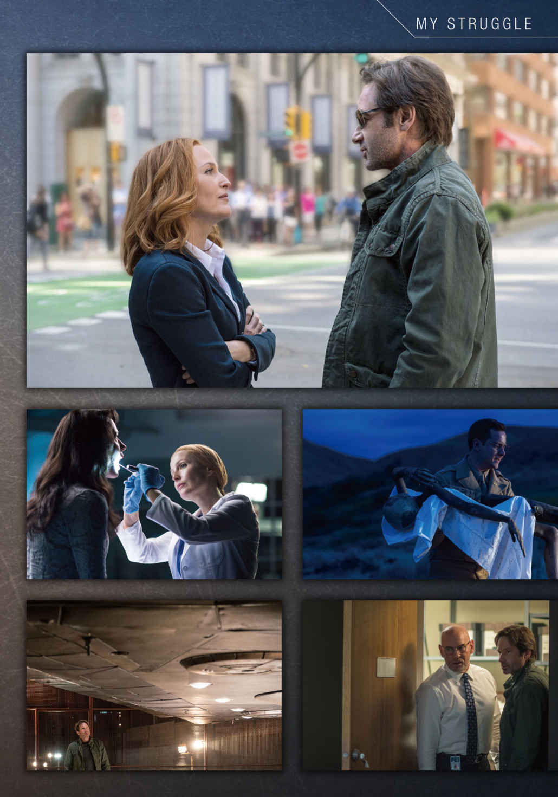
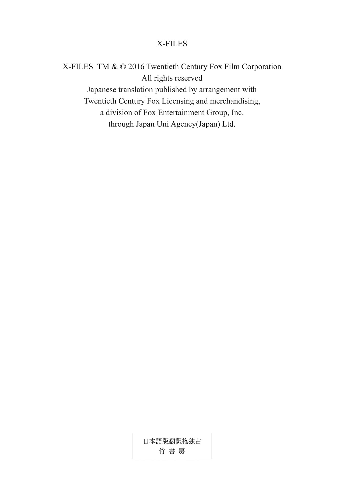
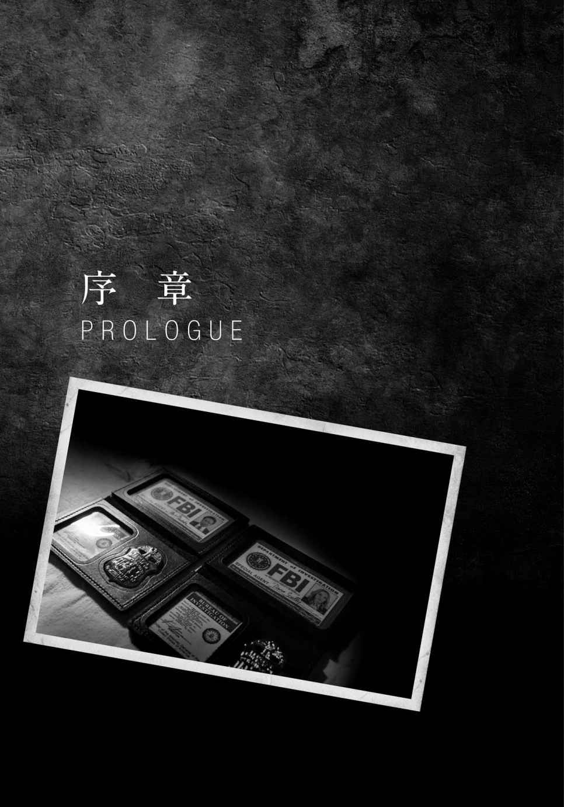
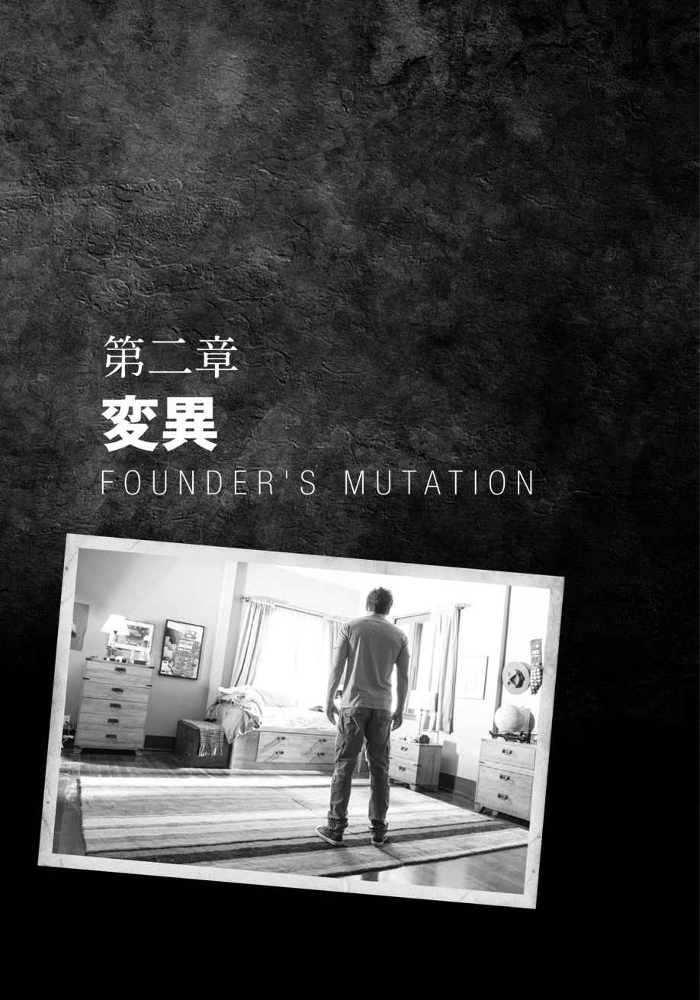

| X-ファイル 2016 VOL.1 (竹書房文庫) | |
| クリス・カーター | |
| (2016) | |
この作品は縦書きでレイアウトされています。
また、ご覧になる機種により、表示の差異が認められることがあります。
一部の漢字が簡略字で表示されていることがあります。


登場人物紹介
フォックス・モルダー .........かつてFBIで超常現象事件などを担当するX-ファイル課に所属し、異星人に関わる政府の陰謀を追っていた。後にFBIを離脱し、現在はどこにも所属していない。
ダナ・スカリー .........23年前、FBI入局後にX-ファイル課に配属された。医学博士の資格を持ち、科学的論理を重んじる。現在キリスト教系の病院に医師として勤務。
ウォルター・スキナー .........FBI副長官。モルダーとスカリーが在籍していた頃は二人の上司であり、数少ない味方だった。
タッド・オマリー .........動画ニュースサイトを運営し自らキャスターを務める保守派の陰謀論者。
スヴェタ .........異星人に誘拐された経験を持つ女性。
オーガスタ・ゴールドマン .........ニュージェニクス・テクノロジー社の施設創始者。
サンジェイ .........ニュージェニクス・テクノロジー社の研究員。
サマンサ・モルダー .........フォックス・モルダーの妹。彼女が8歳の時に異星人に誘拐されるのを、12歳のモルダーが目撃した。
ウィリアム .........モルダーとスカリーの息子。スカリーが乳幼児の頃に養子に出したため、現在の居場所は不明。現在15歳。

私の名前はダナ・キャサリン・スカリー。
このレポートは、誰かに提出を求められたものではない。ただ、私がこれまで体験してきたことを思い出すたびに、これから先にどんな出来事が起きるのかはまったく予測できないという思いが強くなり、これまで起きたことを何かの記録に残しておきたいと思ったのだ。それは、かつて私がＦＢＩ（連邦捜査局）のＸ─ファイル課に所属していた頃に、奇妙な事件を捜査するたびに報告書を作成してきたせいかもしれない。事件は常に解決したわけではなかったが、私はそれらの報告書を〝ひょっとしたらこの記録がこれから先、誰かの何かの役に立つかもしれない〟というごくわずかな可能性のために作成した。そして今も、それが無駄な行為だったとは思っていない。
まず、私が所属していた特殊な部署のことを記録しておかなくてはならない。私は大学で物理学と医学を学び、医師になる予定だったが、ＦＢＩにリクルートされ、ある部署に配属された。それはＦＢＩの地下にある、日の当たらない部署、Ｘ─ファイル課だ。そこは、〝Ｘ─ファイル〟と呼ばれる、これまでの科学では解明できない、いわば超常現象的な事件を専門に扱う部署。この課にすでに配属されていたのは、ただ一名。フォックス・モルダーという名前の捜査官で、周囲からは変人 と呼ばれている人物だった。
私がこの課に配属されたのは、建前は、こうした事件の捜査に、私の科学的、論理的な思考法と、物理学と医学の専門知識を活用するためだが、本当の目的は違う。ＦＢＩの上層部は、優秀な捜査官であるモルダーが、こうした超常現象的な事件の捜査に熱心になるあまり、組織の規則を破って暴走するのを懸念して、その暴走を阻止するために、そしてもし暴走した時にはそれを報告するために、いわば彼のお目付役として私をその部署に配置したのだ。なぜ上層部がそこまでモルダー捜査官の動向を気にしていたのかは、後に明らかになっていくが、配属された時点では、私は自分の役割は、組織の規律を破りがちな捜査官を、捜査の正しい軌道に導くことだと考えていた。
しかし、この課でさまざまな事件を体験したことで、それまで私が抱いていた、科学的思考法に対する信念と、ＦＢＩという組織に対する信頼の双方は、何度も試されることになった。この世界には、これまで判明している科学的事実だけでは解明できない出来事があるのではないか。政府は国民全体に対して、何かの陰謀を画策しているのではないか。自分が所属する組織ＦＢＩの内部にも、その陰謀に加担している者がいるのではないか。様々な事件を経るうちに、自分がそれまで抱いていた信念と、組織への信頼の双方は、次第に揺らいでいった。
私がそのように変化していった理由のひとつには、Ｘ─ファイル課の同僚、フォックス・モルダー捜査官の存在がある。彼は、常識では説明できない事件に出会うたびに、まず常識を取っ払い、一見ありえないと思われることがもし実際にあるとしたら、と発想するところから捜査を始める。時には、その超常現象が真実であって欲しい と思うあまり、事実を見誤っているのではないかとすら見えることもあった。
しかしそれも、モルダー捜査官が少年時代に体験したことを知ると納得がいく。彼がそのように考えるようになったのは、ある超常現象的な出来事が原因だった。彼が一二歳だったある夜、四歳年下の妹サマンサが彼の目の前で異常な状況で失 踪 を遂げたのだ。モルダーは、目の前に突然、眩 しい光が差し、怪しい人影が見え、妹がいなくなったという光景を見て、妹は異星人 による誘拐 の犠牲になったのだと考えるようになる。そして、生涯をかけて妹の失踪の原因を追求することを誓ってＦＢＩ捜査官になったのだ。エイリアンは実際に存在し、政府はそれについて隠 蔽 し、何かの陰謀を企てているのではないか。そして、もしエイリアンが実際に存在するとしたら、他のモンスターやミュータント、超能力者も存在しているのではないか。そう考えるところから、彼の超常現象に対する肯定的な姿勢は生じているのだ。
そして実際、モルダーの捜査によって少なくともエイリアンと政府の陰謀については、さまざまな事実が明らかになっていった。エイリアンの入植計画、エイリアンと共謀する人間たちの組織〝シンジケート〟、エイリアンと人間の混血による〝ハイブリット〟、エイリアンの工作員〝バウンティハンター〟、エイリアンによる生物兵器〝ブラックオイル〟、人間がある種のエイリアン・ウィルスに感染して生まれた〝スーパーソルジャー〟──それらの存在が次々に明かされていった。また、エイリアン集団は一種類ではなく、地球入植を計画するエイリアン集団とは別の、エイリアン集団も存在していた。そして政府側の陰謀組織の中心に〝スモーキングマン〟と呼ばれる男がいることも判明した。ただ、これらの陰謀の決定的な証拠はいつも失われてしまい、それを第三者に証明することは出来なかった。
また、こうした捜査は、モルダー捜査官自身にも影響を与えた。彼は捜査の過程で、彼の父親が政府とエイリアンの陰謀に関わっていたことを知る。そして、妹サマンサの失踪は、その陰謀に関連して起きたことも判明していった。そしてモルダー自身が、エイリアンのウィルスに感染させられたり、さらにはエイリアンにアブダクトされた後に意識不明で戻るという出来事も起きた。そして、陰謀の中心人物〝シガレット・スモーキングマン〟とモルダー捜査官の個人的な関係も判明する。この人物はかつてモルダー捜査官の母親と不倫しており、モルダーの生物学上の父親だという驚 愕 の事実が明らかになったのだ。そのシガレット・スモーキングマンも〝スーパーソルジャー〟の戦闘ヘリのミサイル攻撃によって爆死した。
そして、私自身もこうした捜査によって大きな影響を受けていった。私のエイリアンに対する意識の変化を決定的にしたのは、私自身がエイリアンにアブダクトされ、人体実験されるという体験をしたことだ。そのとき、自分に何が起きたのかは明確には覚えていない。しかし、捜査の途中で突然行方不明になり、戻ってきたときにはその間の記憶がなかった。そして、この経験の後に、私の身体が変化していることを知った。私は妊娠できない身体になっていたのだ。その一方で、自分と同じＤＮＡを持つ幼い少女の存在を知る。私は両親を失った彼女を養女にしたが、彼女はＤＮＡの謎を解き明かす前に死んでしまった。彼女の存在もエイリアンの陰謀と何か関係があるとしか思えない。
また、自分が癌 を発病していることがわかり、さらに自分と同じようにエイリアンにアブダクトされた女性たちの多くが、癌を患っていることを知った。この癌は後に治癒したが、その理由は不明のままだ。
そして何より驚いたのは、癌が治癒した後、不妊だったはずの私が子供を妊娠し、出産したことだ。子供の父親はモルダー捜査官だ。私たちは九年間に渡って一緒に捜査をする中でお互いを理解し、次第に愛し合うようになっていたのだ。
だが、生まれた息子ウィリアムには、普通の人間にはない能力が備わっていた。彼はまだ乳幼児なのに、念力で物体を自由に動かす能力を持っていたのだ。これは、私がエイリアンにアブダクトされた時に、私の身体に起きた何らかの変化が影響しているためだとしか考えられない。そして、政府が人間の女性たちを代理母にしてエイリアンと人間の〝ハイブリッド〟を産ませる実験を行っていたことも思い出さずにはいられない。
さらに、息子ウィリアムは、生まれた時から危険と隣り合わせだった。彼を特別な存在だと考えるカルト教団に誘拐されそうになり、また、〝スーパーソルジャー〟たちも彼に接近しようとしていた。モルダー捜査官もある事件を境に行方不明になっていた。そのような状況の中、ウィリアム自身の命を守るために、私は彼の素性を隠して養子に出すことにした。彼は、どこでどんな少年に成長しているのだろう。今でも、彼のことを思わない日はない。
息子ウィリアムの特殊能力は、今は失われているはずだ。彼を養子に出す前に、シガレット・スモーキングマンのもう一人の息子が、父への個人的な恨みから父の陰謀を阻止しようとしてウィリアムにワクチン接種を行ったので、特殊能力はなくなっているはずなのだ。だがずっと離れて暮らしているので、息子が現在どのような状態なのかは不明のままだ。
家族といえば、私の父母兄姉が、常に私を励まし、支えてくれたことも記録しておきたい。亡くなった父ウィリアムと私は、大の親友で、父の愛読書だったメルヴィルの『白鯨』のキャラクターの名前をとって、お互いにエイハブ船長、スターバックと呼び合っていた。また、姉メリッサは性格は私とは正反対で、夢想家でスピリチュアルなものが大好きだったが、私たちは仲良しだった。私がエイリアンにアブダクトされた後、昏 睡 状態で見つかった時も、彼女は母と一緒に私を見守ってくれた。彼女の死は今も私の心に大きな傷を残している。彼女は、私を抹殺しようとする敵に、私と間違えられて殺されてしまったのだから。兄ウィリアム も私を大切に思ってくれている。彼がモルダーの存在を快く思わなかったのは、彼が軍人で超常現象を信じない現実家肌だったからだけではなく、モルダーのせいで私が多忙なのではないかと心配してのことだった。弟のチャーリーが音信不通なのは残念だが、仲が悪いわけではない。そして、いつも私の理解者である、母マーガレット。私はＦＢＩ捜査官になってからも、よく実家に遊びに行っては彼女に甘えた。彼女はモルダーと私の関係についても理解してくれていて、息子ウィリアムが生まれた時には同居して育児を助けてくれた。いつも母には感謝している。
Ｘ─ファイル課に話を戻そう。モルダー捜査官が政府とエイリアンの陰謀を追求していけばいくほど、その陰謀の首謀者たちにとってはＸ─ファイル課と、モルダー捜査官の存在が邪魔になっていった。そのため、Ｘ─ファイル課は何度か閉鎖されたが、いつもこの課で取り扱うべき事件が起きて、再開されてきた。しかし二〇〇二年、ＦＢＩの政策転換を機にまたも閉鎖され、今も再開されていない。
またＦＢＩ局内には常に、あからさまな敵ではなくともモルダー捜査官や私、Ｘ─ファイル課を偏見の目で見て、敵視したり軽視したりする人達もいた。そんな中、副長官のウォルター・スキナーだけは常に私たちの味方でいてくれた。時に厳しいところもある人だが、私たちにとっては常に信頼できる存在だった。彼がいなければ、Ｘ─ファイル課の存続はなかっただろう。またモルダーの旧友で、いつも捜査に協力してくれた、隠謀マニアのオタクな三人組、ローン・ガンメンにも感謝している。あの人たちが亡くなって、もう会えないのはとてもさみしい。
Ｘ─ファイル課のメンバーにも変化があった。シガレット・スモーキングマンの息子であるジェフリー・スペンダーがこの課に配属されたこともあった。モルダー捜査官が行方不明になった時期には、新たにジョン・ドゲット捜査官が配属されて、私のパートナーとなった。また、私自身もずっと所属していたわけではない。私は息子の出産のためにＸ─ファイル課を離れてＦＢＩアカデミーの教官となり、代わりにモニカ・レイエス捜査官がＸ─ファイル課に配属された。彼らと私は互いに協力し合う間柄で、私の息子がカルト教団に狙われた時には、レイエス捜査官が私の逃走に同行してくれた。
そして、モルダー捜査官が逃亡生活に入ったのは、一六年前のことだ。モルダー捜査官は、極秘情報を入手するために政府の秘密施設に侵入し〝スーパーソルジャー〟を倒したが、この時に捕まって殺人犯として軍法会議にかけられた。私たちは彼を救うために証言したが、有罪判決が下った。そこで私たちは協力して、モルダー捜査官を脱出させたが、彼はその後、逃亡者として地下に潜伏することになったのだ。私は彼の潜伏生活に協力するため、ＦＢＩを辞めて医師となった。
だが、八年前、モルダーの状況が変化する事件が起きた。ＦＢＩ捜査官の失踪事件が起きて、その捜査には霊能力者を自称する元犯罪者が参加していた。そのため、ＦＢＩがこういったこと に詳しいモルダーに捜査への協力を求めたのだ。捜査には私も同行した。そして、事件の真相は解明され、この捜査に協力したことで、モルダーはお尋ね者ではなくなり、潜伏生活から解放された。その後は、モルダーと私の平穏な生活が続いていくはずだったのだが──。
１
夏の青空を、層積雲がゆったりと漂っていた。湿気を吸い込んで自重に堪えかねた雲は、今にも山の頂に届かんばかりだ。雲たちは渓谷を流れる川面に映った自分の姿に見惚 れ、いつまでもひとつところに留 まっている。
だしぬけに、天と地のランデブーに割って入るものがあった。上空のどこかで、爆発的なソニックブームが響いたと思うと、触手のような煙を吐き出しながら、巨大な円盤が雲間から飛び出してきた。
円盤は弧を描いて落ちてくると、一度前後に傾 いでから激しく地表に激突した。山肌に醜いかき傷と焼け焦げをこしらえながら、なおも前のめりに数マイル進んだのち──力尽きたように止まる。
突如としてはじまった異変は、一分足らず続いたあと、やはり唐突に止んだ。土 埃 と円盤から立ちのぼる白煙が空気を満たし、日光を遮 る。煙幕を透かし、空から墜落した円盤の後部が著 しく損傷しているのが、垣間見えた。もし近づく者がいたとすれば、かすかに断末魔をあげる機体の電気的なエンジン音を耳にし、突起部分のすすと土くれに覆われた舷 窓 から、内部にあがる火の手を目にしたはずだ。そして、窓に押しつけられた一本の手が、人間のものにしては違和感を覚えるいびつな形状 をしているのを、見逃しはしなかっただろう。
その手は、ずるずると力なく、窓を滑り落ちていった。
ハイ・デザート／ニューメキシコ州北西部──一九四七年
午後も遅くなると、層積雲は勢いを増し、山肌にまだら模様を作りながら次々に通り過ぎて行った。自然の川が数千年かかって彫りこんだ渓谷を、さらに削って敷いた単線レールの上を、ミミズのように長く連なった貨物列車が雲よりも悠長に走っている。
より早く移動したければ、なだらかな丘陵の比較的平坦な箇所に舗装された道路が利用できた。その埃っぽい道路をオリーヴグリーンの軍用バスが一台、取り締まる者など誰もいないのに、律儀に法定速度を守って走行していた。
乗客は二名。手前に座る陸軍将校はどことなく心もとない表情で、ぼんやりと前を見つめている。窓外の景色を眺めたくても、どういう理 由 か乗客席の窓はすべてラシャ紙を貼 って目隠しされているため、現在地を確かめることもできない。銀縁の丸眼鏡をかけ、クルーカットのために広い額が一層目立つその男の、まだ若さの残るふっくらした輪郭の左頰 には、特徴的なイボが鎮座していた。
若き将校はしびれを切らしたように、もう一人の乗客を肩越しに振り返ってたずねた。
「あとどれくらいだ？」
彼から二列置いた奥の席に座る黒服の男が、腕時計に目をやった。
「もう目と鼻の先です、ドクター」
禿 げ頭で細身の黒服男は、陰気くさい表情を一ミリも動かさず、事務的に答えた。長年その表情を保ってきたために、表情筋が固まってしまったに違いないと、軍医の将校は思った。ネクタイもスーツも黒を着ているところから軍人ではなさそうだが、かといって民間人では持ちえない、きなくささ を発散させてもいた。だが身分を明かすようなものは、何も身につけていない。
軍医将校は前に向きなおると、黒服の男には見えないように、小さなため息をついた。
同乗者の言葉通り、ふいにバスはアスファルトを逸れ、有刺鉄線が雑に張られたいかにも急ごしらえな柵 の手前で停車した。
医療器具の入った黒革の鞄 を片手に、軍帽を脇 に挟んでバスを下りた将校は、しばらくぶりの新鮮な外気を吸い込んだ。日は傾きかけ、風が肌寒く感じられる。だが、やっと周囲の景色を見渡すチャンスに恵まれたというのに、山あいの平和な景色を楽しむ間もあらばこそ、眼前の光景に目が釘 付 けになった。
前方に、円盤型の巨大な何か が鋭利な角度で地面に突き刺さっていた。その角度から、円盤は空から落ちて、地面に激突したことが推測できる。おそらく飛行中に不測の事態が生じたのだろう、未知の飛行物体の後部は吹き飛んだようになくなっており、いまだに煙のくすぶる内部の骨組みが一部露出していた。墜落して、まだいくらも経っていないようだ。
円盤はいくつもの投光器に囲まれ、その周りには軍用車が数台停まっており、銃を構えた軍人たちが警備に当たっていた。だが、山あいの不毛な土地は、見渡す限り攻撃を仕掛ける者はおろか、野次馬の気配も、報道機関のロゴが入った車 輛 の影も形もありはしなかった。だとしても、いつ誰かに現場を嗅 ぎつかれるかもわからない。とりわけ、戦後冷戦状態のソ連のスパイに対しては、いくら警戒してもし過ぎることはない。作戦は 迅速に遂行せねばならなかった。将校は、バスの目隠しの理由にはじめて合点がいった。だが作戦って、なんだ？ この円盤の正体は？ 敵国の新兵器か？ そして、軍医である自分が呼ばれた理由はなんなのだろう。負傷者の手当だろうか──。
呆 然 と立ちつくす将校のかたわらに、バスから降りた黒服の男が並んだ。禿げ頭にはいつの間にかソフト帽が乗っていた。自分より上背の黒服の男を仰いだ将校は、口をあんぐり開けたまま、頭にうずまく疑問がうまく言葉にならない。黒服の男はそんな将校を一顧だにせず、前方を見据えて言った。
「こちらです。急いで」
強風にスーツの裾 をはためかせ、機械的に墜落現場に向かう黒服の男について、若き将校は夢遊病者のようなおぼつかない足取りであとに続いた。だが歩を進めるうち、最初の衝撃が薄れ、彼本来の医師としての冷静な分析力が戻ってきた。近づくにつれ、機体の構造がよく見える。
円盤は、中央部分がプディングのように突起しており、材質は金属のように見えるが、外殻全体に、マス目状の溝が入っていた。機体の下側はやはり同心円状に膨 らみ、中心部にはスクリューに似た構造物が覗 いている。
円盤が大地をえぐってできた小山に上官らしき軍人が立ち、スコップを持って発掘作業にあたる兵士たちを監督していた。彼らは将校同様、ここから一二〇キロほど離れたロズウェル陸軍航空基地から派遣されて来ていた。
黒服の男に案内されるまま、軍用車や兵士たちの脇を通り過ぎながら、将校はこの光景の意味するもの──人類の歴史をひっくり返すかもしれぬ出来事──について、おぼろけながら理解しはじめた。
２
〝悲しみの聖母〟病院／ワシントンＤ．Ｃ．──現代
手術室では、四名の医師がオペの準備にかかっていた。スツールに座った麻酔医の肉づきのいいピンと張った背中がこちらを向いている。空飛ぶ円盤を思わせる丸い無影灯に照らされた手術台。そこに横たわる患者の顔は、医師の身体に隠れて見えない。しかし、全身を覆った青いドレープの盛り上がり具合から、おそらく子どもであることがうかがえる。
手術室に隣接した準備室から、ペールグリーンの格子枠に縁取られたガラス窓越しに、その様子を眺める医師がいた。ストロベリー・ブロンドの髪を後ろに束ねたその医師は、窓から目を離すと視線を上に向け、天井近くの壁に設置された三台のモニター画面を見つめた。画面には患者のデータが表示されており、その一台にはアフリカ系アメリカ人の少年の写真が映っている。イライジャ・ウィリアム──その少年の顔には、不思議なことに左右の耳がなかった。
手術着 を着た看護師が準備室の戸口に立ち、画面に見入るポニーテールの女医に声をかけた。
「すみません、スカリー先生」
これから取りかかる大がかりな手術に意識を集中させていたダナ・スカリーは、自分の名を呼ばれたことに気がつくまでに、数秒を要した。
「どうしたの？」
「お電話が入っています」
マスクをして手術用ガウンを着た二名の医師が、看護師の背後を通り過ぎて手術室に入っていく。ラテックス製の医療用グローブをはめた両手の平を上にかざしているため、まるでうやうやしい儀式めいて見えた。
「これからオペなんだけど」
声に若干のいら立ちをにじませ、スカリーが返す。ダナ・スカリーが前の職場を辞め、医師として働きはじめてから、もう七年になる。手術室看護師のサンディープとも長いつき合いなのだから、少しは気を利かせて、伝言を聞いておいてくれればいいのに。
「そう言ったんですが......その方が、大事な用件だからと言い張られまして」
「誰なの？」
「ウォルター・スキナーという人です。ＦＢＩの副長官だとおっしゃってます」
スキナー......。その名前を耳にしたのは、何年ぶりだろうか。
一瞬、ダナ・スカリーは医師としての自分を忘れそうになった。故あって、スキナー副長官との、そしてＦＢＩとの縁を切って久しい自分に、向こうから連絡を寄こしてくるとは──。その理由にピンとこないほど、スカリー元 ＦＢＩ特別捜査官の勘は、さびついてはいなかった。
３
片田舎の一軒家／ヴァージニア州
その部屋は、とにかく雑然としていた。住居の一室というよりは、大学教授にあてがわれたキャンパス内の個室のようだ。そんな印象を与えるのはなによりもまず、壁という壁に貼られた切り抜きのせいだろう。大判の世界地図のポスター──要所要所に虫ピンが刺さり、地名と年月日の書かれたタグが貼られている──をはじめ、ＵＦＯや超常現象、最先端科学に関する新聞・雑誌類から切り抜いた記事や写真等が隙 間 なく貼られ、壁の色もわからないほどだ。壁面のコラージュに負けないだけの存在感を放つ家具といえば、ネームプレートの付いたリンゴ箱大の引き出しが、二列に並んだ木製のファイルキャビネットと、実用一点張りのどっしりとした木製の両袖 机くらいなものだ。
壁のスペースが足りなくなったのか、四二インチのフラットスクリーンテレビにまでびっしりと写真や切り抜きが留めてある。そのうちの一枚は森林上空に円盤型ＵＦＯが浮かぶ写真に、〈I WANTA TO BELIEVE（私は信じたい）〉というフレーズが印刷されている。この部屋の住人は、テレビ番組は観ないのだろうか──。いや、そうでもなさそうだ。書き物机の上に置かれたラップトップ・コンピューターで男が観ているのは、テレビの深夜トーク番組『ジミー・キンメル・ライブ！』のクリップだった。過去に放送されたアーカイブの一本だろう。
この回のゲストは、バラク・オバマ第四十四代アメリカ合衆国大統領だ。
こういった番組に大物政治家が出演するのは珍しいことではない。とりわけ四年に一度の大統領選挙が近づくにつれ、政治に興味のない層にも名前と顔を売る絶好のチャンスとばかり、候補者がこぞってワイドショーやトークショーに出演したがる。ときどき政治家なのかタレントなのかよくわからない輩 もいるが、二度の大統領選挙を勝ち抜き、二期目を任期中のオバマに、自分を売りこむ必要はもはやなかった。ロサンゼルスを訪れたのはとあるキャンペーンのための資金集めが目的で、ハリウッドのＡＢＣスタジオに設けられた番組専用セットのゲスト用ソファに体を預け、長い足をゆったりと組んでいる。すっかりごま塩頭になりこそすれ、スリムな体にスーツを粋に着こなし、俊敏そうな頭脳と物腰は、六年前といささかも変わらない。
コメディアン出身の番組ホスト、ジミー・キンメルは、大統領選挙と同じぐらいし烈な深夜のトークショー枠を十年以上死守してきた手 練 れであり、たとえ合衆国最高司令官が相手でも、いつもの軽妙なトークでゲストをからかっている。
「もし僕が大統領になったら、就任式で聖書に置いた手が冷めやらぬうちに、エリア51 とＵＦＯの機密ファイルがしまわれた場所へすっ飛んで行って、すべての秘密を知ろうとしますけど」
大統領は白い歯を見せて笑うと、当意即妙に返した。
「エイリアンの恐ろしさを知らないな」
これはキンメル得意の定番ジョークだ。以前に出演したビル・クリントン元大統領にも、まったく同じ質問をしている。第四十二代大統領は、「真っ先にそのことを調べたがエリア51 にエイリアンは存在しなかったよ」と冗談まじりに答えている。
番組クリップを観ていた男は、ラップトップの脇に置いたスマートフォンが鳴り出すか出さないかのタイミングで、素早く取りあげて電話に出た。
「僕の人生がジョークのオチになってるぞ。世の中はどうなっちまったんだ、スカリー」
そう言うと、フォックス・モルダーは黄色い軸の鉛筆をＵＦＯのポスターを目がけて投げつけたが、固いテレビ画面に当たってあえなくはね返された。
ＦＢＩ捜査官時代、一〇年間パートナーだった人物のこれっぽっちも変わらないもの言いに、スカリーは思わず顔をほころばせた。
スカリーは、手術室を出るが早いかスマートフォンを取りあげた。まだスクラブ姿のままで、小さな十字架のネックレスをかけた胸元には、数カ所血が飛び散っている。手術室の両開きドアを背にして立ち、ドアについた窓からは、事後処理をしている医師や看護師の姿が見える。
「スキナー副長官が、あなたを捜してるわ」
「直接僕に電話を寄こせばいいのに」
ときどき、承知のうえでわざと察しの悪い振りをするところも、昔通りだ。
「スキナーはあなたの連絡先を知らないのよ、モルダー。私だってこの番号が通じるか、ヒヤヒヤものだったのよ」
そして、相手がどんな出方をしようとスカリーが常に直球勝負なのも、相変わらずだ。
「スキナーがいまさら僕になんの用がある？」
モルダーは実際、スキナーが自分に会いたがる理由の見当がつきかねるのだろう。
ＦＢＩ時代、ウォルター・スキナー副長官はモルダーとスカリーの上司だった。超常現象とおぼしき不可解な事件、常識では考えられない事件を専門に扱い、捜査局内では異端視されていたＸ─ファイル課のふたりにとって、スキナーは唯一の味方と言ってもよかった。体制側の人間で、はっきりいって頭は固いが、それだけにいったん納得すれば、とことん肩入れをしてくれる。誰が敵かわからないＦＢＩ局内において、信用のおける貴重な存在だ。彼のおかげで首が繫 がったことも、命を救われたことも、一度や二度ではない。
だが、Ｘ─ファイル事件の捜査中にモルダーは敵の術中にはまり、殺人犯としてＦＢＩから指名手配を受ける身になってしまった。もともとモルダーありきだったＸ─ファイル課は閉鎖、モルダーはここヴァージニアの片田舎にある一軒家に潜伏していた。八年前、とある捜査に協力するのと引き換えに、ＦＢＩは彼の指名手配を解除したが、モルダーは今でもこの家に住み続けている。
スキナーと最後に会ったのも、殺人犯の汚名をすすいだその事件──透視能力を持った元司祭のからむ、失踪したＦＢＩ捜査官の行方を追っていたときだ。またしても、スキナーに危機一髪のところを救われた。もう二度と彼に関わることはあるまいと、モルダーは思っていた。そして、その方が双方のために良いことだ、と。
「副長官はタッド・オマリーという男のネット番組を観たことがあるか、たずねていたわ。どうやらその人、ＦＢＩを通じて私たちに接触しようとしたらしいのよ」
なんだ、スキナーが自分に会いたがっていると思ったのは、早合点だったのか。モルダーは少しだけ残念に思った。
「ちょっと待ってくれ。今チェックしてみるよ」
モルダーはスマートフォンを左手に持ちかえ、ラップトップ・パソコンのキーボードに右手一本で〝タッド・オマリー〟と打ち込む。人気コンテンツのようで、検索のトップに表示された。一番上のリンクをクリックし、映像を再生させる。
高価そうなスーツをピシリと着こなした男が、巨大なスクリーンを背にして時事問題を伝えている。黒い天板に赤い螢 光 ラインの入ったスタイリッシュなＶ字型のデスクには『タッド・オマリーの真実を追え！』という番組のタイトルロゴの入ったコーヒーマグと、ガイコツ型のスタンドマイクが置かれ、まじめな ニュース番組であることを主張していた。オンライン専門の時事ニュース配信番組のようだ。問題は、看板ニュースキャスターのオマリーが、どういう傾向の思想の持ち主かだ。保守系、リベラル系、宗教系、もしくはＩＴオタク 系？ セットの雰囲気と、少ない小道具で効果をあげる演出からすると、リベラル派のギーク系だろうか。
番組ロゴをでかでかと映していたスクリーンが、煙をあげる世界貿易センタービルの映像に切り替わると同時に、オマリーは説得力のある語り口でカメラに向かって話しかけた。
〈つまり、こういうことです。テレビのリベラル派メディアは皆さんの生活、自由、神から与えられた武器を携帯する権利について、噓 八百を並べ立てているのです〉
違った。銃規制を目のかたきにする保守系だ。
「なんで僕が、こんなボケナス野郎の番組を観なきゃいけないんだ？ スカリー」
モルダーは鼻を鳴らし、タッド・オマリーの意見への関心度を表明した。ラップトップの中のオマリーが続ける。
〈９・１１は、政府のヤラセ作戦でした。来たる第三次世界大戦への肩ならしに過ぎなかったのです。注意して聞いてください。これは、ロズウェルのＵＦＯ墜落事件に端を発する陰謀であり......〉
待て待て。今、〝ロズウェル〟と言ったのか？ 極右のおぼっちゃんがＵＦＯや政府の陰謀を口にするなんて、本当に世も末だ。コイツ、マジかな？ ははあわかったぞ。話のわかる保守派を演じているのか。〝ネット民〟が食いつきそうなネタだものな──。ひとつ、科学信奉派代表・スカリー女史の意見を聞いてみようじゃないか。モルダーはスマートフォンの向こうのスカリーに問いかける。
「君は、ＵＦＯとは縁を切ったと思ってたよ、スカリー。確か、自分という存在の重しだって、言ってなかったかな」
「私はただ、ことづてを頼まれただけよ、モルダー。オマリーはとにかく、しきりにあなたと会いたがっているみたい」
「スキナーに手配するよう言ってくれ」
スカリーが、びっくりしたような声を出す。モルダーが断るものと思っていたようだ。
「......本気？」
フォックス・モルダーはゆっくりと椅 子 を回転させて、オマリーから顔を背けた。画面の中のオマリーに聞かれちゃマズいとでもいうように、スマートフォンに向かってぼそぼそと話しかける。
「それと、僕をひとりで行かせるみたいな口振りはよせよ」
４
市街／ワシントンＤ．Ｃ．
晴れ渡った昼下がり、スカリーは往来の激しい目抜き通りの道ばたに腕を組んで立ち、緑生い茂る街路樹の先に、でんと構える国会議事堂を眺めるともなしに眺めていた。セミロングに伸ばした根元を緩めにカールさせたストロベリー・ブロンドの髪が、そよ風にたなびく。
半世紀以上前の一九五二年、飛行禁止区域である議事堂上空を、複数のＵＦＯが飛び回る姿が目撃され、一時世間が騒然としたこともあるが、今このとき飛行禁止の令を破っているものといえば、空を舞う一羽の鳥ぐらいだった。そんな昔のＵＦＯ騒ぎのことなどをつい考えてしまうのは、待ち合わせ相手のせいかもしれない──。スカリーはスマートフォンで時間を確認した。そろそろ現れてもいい頃だ。モルダーは多分地下鉄を使うはずだと当たりをつけ、出入り口の方向に目をやる。
白いマニッシュなブラウスに紺のジャケット、グレイのタイトスカートを履いたスカリーは、今でもじゅうぶんＦＢＩ捜査官で通りそうだった。だが捜査官を退き、天職ともいうべき医師の仕事についてかなり経つ。年齢的には「中年」と呼ばれる年代に入って久しいが、体にはぜい肉ひとつついておらず、若い頃は意志の強そうな顎 の印象を和らげていた女性らしい頰の膨らみも、年を重ねるにつれて鋭角的になり、澄んだブルーグリーンの瞳 とともに、どことなく憂いを含んだ落ち着きをかもしだしていた。
背後で車の停まる音がして、スカリーは車道を振り返った。すると、見慣れないセダンの助手席から、モルダーが出て来るところだった。
「ウーバーで来たの？」
スカリーは自分の予想が外れ、意外そうな声を出す。ウーバーとは、スマートフォンアプリを利用した配車サービスのことだ。二〇〇九年にサンフランシスコでスタートアップしてからその手軽さが受け、各都市で急速に普及してきた。タクシーのみならず一般人の自家用車を活用しているのが目新しかった。
にわか運転手は自分のセダンから見知らぬ乗客を降ろすと、すぐに走り去った。
「ヒッチハイクさ」
怪 訝 な顔をするスカリーに、モルダーはおどけてみせた。
「そんな顔しなさんな、冗談だよ」
しばらくぶりに会った元パートナーの全身に、スカリーは素早く目を走らせた。サングラスをかけているので表情はよくわからないが、うっすらと無 精 髭 を生やし、カーキ色の着古したミリタリージャケットを羽織ったモルダーは、職にあぶれて昼日なかから街なかをぶらつくような連中と、一見大差ない。もっとも、ここ十三年ほど定職についていないのは、事実だったが。
「あなたが心配だわ、モルダー」
スカリーが気にしているのは、身だしなみのだらしなさではなく、モルダーの健康と精神状態だ。Ｇパンがなんだかだぶついているけど、ちゃんとした食事はとっているのかしら。また部屋に閉じこもって、ヒマワリの種ばっかり食べているんじゃないでしょうね......。
「心配にはおよばないよ、先 生 。自分で自分の面倒ぐらい見れる」
モルダーが、口出し無用とばかりに顎を上げた。〝ドクター〟スカリーは「一ミリも信じませんから」というように、相手よりもさらに顎を上げて、ねめつけた。
「たまにはあの狭苦しい家から、出た方がいいわよ」
「確かに君は、あの家を出てよかったみたいだね」
にこやかに、モルダーが蜂 の一刺しを見舞う。一瞬、スカリーは返す言葉に詰まった。モルダーが指摘した通り、一時はともに暮らしたあの小さな家を、自分は出て行った。だがそれは双方納得づくの上であり、何年も前の話だ。スカリーは、ここはさらりと受け流すことにした。
「なにはともあれあなたに会えて嬉 しいわ」
「なにはともあれ会う理由が見つかって嬉しいよ」モルダーも素直に返した。
これで、休戦協定が結ばれた。お互いに相手を認め、ニヤリとする。せわしない往来で黙って見つめあうと、数年分の空白が一瞬で埋まった。ふたりがともに過ごした時間はそれだけ濃く、結びつきはそれだけ深いものだった。だが、どちらかが次の言葉を発する前に、黒塗りのリムジンが音もなく緑石に寄せてきて、モルダーの乗ってきた車が去ったあとの空間を埋めた。
サングラスをかけたスーツ姿のアフリカ系アメリカ人が運転席から降りると、両手を前に揃 えてその場に立った。運転手にしてはやけに体格がよく、片耳にイヤホンをつけている。タッド・オマリーが道路側の後部座席から出て来ると、素早く車を回って、歩道に立つモルダーとスカリーに向かってやって来た。まるでたった今、自分のオンライン・ニュース番組から抜け出てきたかのようなスーツ姿で、分刻みどころか秒単位でスケジュールを立てて毎日を送る人種独特の、無駄のないきびきびした動作をしている。
「フォックス・モルダーさん？」
「そうだ」
剃 り残しひとつない口元に、好感度百パーセントの笑みを浮かべ、オマリーがさっと手を差し出した。
「タッド・オマリーです」モルダーと政治家よろしく握手を交わし、くるっとスカリーに顔を向ける。「そして、あなたが元捜査官のダナ・スカリーさんですね」
「よろしく」なんだか選挙活動中の若手議員みたいだとわとスカリーは思いつつ、差し出された手を握ると、胴長 のリムジンに目をやった。
「ずいぶん劇的なご登場ね」
「気をつけろ。もっと地味なやつにだって、スカリーはぶっ放してたぞ」
ぐっと庶民的な手段で登場したモルダーが、初対面の相手に忠告してやる。
「面白いな。評判通りの方だ」
オマリーが目をキラキラさせ、白い歯を見せて微笑んだ。モルダーは肩をすくめた。スカリーが「モルダーったら」という目配せを送る。オマリーと並ぶと、モルダーの無精髭が余計に目についた。髭を剃ってもっとパリッとした格好をさせたら、彼だってオマリーに負けないぐらい颯 爽 として見えるのに。
「どうぞ乗ってください」
オマリーが礼儀正しくふたりを促すと、モルダーは言下に断った。
「話をするのは構わないが、ここで頼むよ。オマリーさん」
「用心に越したことはありません。〝ダートボックス〟と呼ばれる機能を搭載した偵察機を低空飛行させ、内密の話を録音する輩 がいますからね」
ふたりは同時に空を見上げたが、上空を飛行する物体は、鳥も含めてどこにも見あたらなかった。
「そんなものを誰が飛ばしているの？」
眩 しさに目をすがめ、スカリーがたずねた。
「残念ながら、推測するしかありません」
モルダーとスカリーはふたりとも黙りこんだ。モルダーのほうは、何かを思いついたようだ。
「さあ、行きましょう」
運転手兼ボディガードがオマリーのためにストレッチ・リムジンのドアを開けた。スカリーはため息まじりにモルダーをちらっと見てからオマリーに続く。最後にモルダーが乗りこんだ。
三人を乗せ、リムジンは街なかを静かに走りはじめた。
「初顔合わせの記念に......」
運転席と背中合わせに座ったオマリーが、備え付けのワインクーラーに手をのばし、氷に浸かっているルイ・モントルイユのどっしりしたシャンパンボトルを取り上げた。
「のどを潤しませんか？」
サングラスを外してねずみ色のヘンリーネックシャツにひっかけたモルダーが、やんわり断った。
「僕は遠慮しとく。スカリーは？」
スカリーも首を横に振る。シャンパンの力は借りずにリラックスしようと足を組んだが、ふかふかの座席でおさまりが悪そうに、両手をもみしだいている。スカリーは、さきほどのオマリーの発言がひっかかっていた。
「あなたには敵がいらっしゃるようね」
「好きで作ってるわけじゃありませんけどね、ダナ 」
如才ない笑顔で如才ない返答をするオマリーに、スカリーは微笑みを返す。〝ダナ〟とファーストネームで呼ばれ、内心、リムジンのふかふかの座席のように、この男に対しておさまりの悪さを感じていた。
オマリーの向かいに座るモルダーが、口をへの字にして窓の開閉ボタンを何度も押している。だが、ちっとも反応がない。
「ちょっとばかり暑いんだが」
オマリーが首を傾けて、窓の外を見た。モルダーの席は日差しをもろに受けて確かに暑そうだが、オマリーの側は影になっていたため、気が回らなかった。
「ああ、すみません......。冷房を入れましょう。その窓は、開かないんですよ」笑顔でさらりと付け加える。「防弾仕様になってまして」
モルダーが嬉しそうに眉 を吊 り上げた。
「銃を持ったリベラル派の男が、いつヒンクリーに豹 変 して、あんたを襲うかもわからないからか？」
オマリーが自分のニュース番組で言及した銃規制問題を持ちだして、モルダーがあてこする。ジョン・ヒンクリーは、レーガン大統領を狙 撃 した人物だ。もっとも動機は政治信条の上ではなく、憧 れの女優の気を引くため、というものだったが。
元パートナーの無礼の尻 ぬぐいは昔から慣れっこのスカリーが、ことさらビジネスライクにたずねた。
「彼は無視してちょうだい。それで、ご相談というのは？ オマリーさん」
オマリーは下を向いて、息を吸い込んだ。ビジネスに入る前に、自分に対する偏見と警戒心を解いてもらう必要が、彼にはあった。
「私は付け焼き刃のＵＦＯオタクとは違います、モルダーさん。あなた同様、本当に信じている のです」
こんなやつにお仲間扱いされるのはゴメンだとばかりに、間髪置かずモルダーが訂正する。
「いや、僕は信じたい と願ってるだけだ。どういうわけか、物証がなかなか手に入れにくくてね」
オマリーは、水色の目をきらきらさせた。相手が手 強 いほど燃えるたちなのだろう。気むずかしいゲストから本音を引き出すインタビュアー然として切り返す。
「あなたはＸ─ファイル課を背 負 って立ち、活動していたじゃありませんか。あなたこそＸ─ファイルそのものだ。本だって書こうと思えば書けるでしょう」
モルダーがきっぱり否定する。
「残念ながら、その本は焚 書 になったんだ」
オマリーには単なるはぐらかしの言葉に聞こえたかもしれないが、スカリーははっとした。以前、スカリーはモルダーに本を書くよう勧めたことがある。それは、モルダーがＦＢＩのお尋ね者となり逃亡生活を送っていたときのことだ。底なしの闇 の奥へ、手探りで進むような無謀な真似からはもう身を引き、これまでの体験を本にまとめて学問的なアプローチをすればいいではないか、と説得しようとした。だがモルダーは当時、自分のやり方を変えようとはしなかった。たとえ、スカリーからの頼みでも、彼の信条として聞き入れるわけにはいかなかったのだ。
あの時の自分の言葉を、モルダーは覚えていた。あれは過酷な選択だった。モルダーにとっても、スカリーにとっても。今さら部外者に蒸し返すような真似はして欲しくない。
「Ｘ─ファイル課も封印されて久しいわ。良くも悪くも、人は......前を向いて生きていきませんとね」
スカリーはオマリーをひたと見据えて微笑み、二の句を封じた。
ところが当のモルダーが、からんできた。
「そうだ......。良くも悪くも、ね」
やけに励ますような声音で言う。スカリーは笑顔を貼りつかせたまま、息を吸い込んだ。
ふたりの間の行間を読んだオマリーが、軌道修正をはかろうとして、急いで言った。
「それはさておくとしてですね」
顔ごとスカリーに視線を向けていたモルダーが、オマリーに向きなおる。
「さておかない のはなんなんだ、オマリーさん？ 保守派のコメンテーターが、なぜ自分はＵＦＯ信者で９・１１が政府のヤラセ作戦だなんて言い出すんだ？」
スカリーは矛先がオマリーに戻って、息をついた。
オマリーは目をパチクリさせた。
「私の主張は本心じゃないと言いたいのですか？」
「陰謀説は売れるからね......防弾リムジンが買えるぐらいに」そう言ってモルダーはリムジンの豪華な内装を叩 いた。
ご本家からの挑発を、面白がっているような調子でオマリーが聞いた。
「視聴率のためにやっていると？」
「どうせ、ネット版『ザ・オライリー・ファクター』辺りを狙 ってるんだろ、ギーク要素を取り入れて。新味はないね」
ふたりのやりとりを興味深そうに見守るスカリーの視線を意識しつつ、オマリーは鼻を膨らませた。
「ビル・オライリーが知っている〝真実〟なんて、スズメの涙ほどもありませんよ」
保守系のニュース専門局ＦＯＸニュースの看板番組のホストとして、長年一目を置かれてきた論客ビル・オライリーを歯 牙 にもかけないもの言いに、モルダーとスカリーは顔を見合わせた。
オマリーは、オライリーを引き合いに中傷されるのは慣れっこだった。オライリーとは真逆の、超常現象肯定派のラジオ番組ホスト、アート・ベルの二番煎 じと揶 揄 されることも多い。
そろそろオマリーへの判決を下す頃合いだと判断し、モルダーがぬきうち問題 を出した。
「ケリー・ケイヒル事件」
ケリー・ケイヒル事件は、ロズウェル事件のように一般人でも小耳に挟んだことがあるようなポピュラーな事件ではないが、仮にもＵＦＯに興味のある者ならば、この事件は当然押さえているはずだ。
オマリーはひと呼吸間をとってから、ニュース原稿を読みあげるように、すらすらと答えた。
「オーストラリアのヴィクトリアに住む主婦のケリー・ケイヒルは、夫と車で帰宅中、ＵＦＯに遭遇した。そのとき、夫妻は一時間分の記憶を失っている。ケリーはその後、へそのそばに三角形のあざが出来ているのを見つけ、さらにはひどい腹痛に見舞われて入院した」
リムジンが二ブロック分も進むか進まないかのうちに、オマリーは説明を終えていた。モルダーとスカリーは、改めて顔を見合わせた。正解だ。
「申しあげた通り......私の関心は本物です。足りないのは、あなた方の専門知識だ」
スカリーが小首を傾げた。
「専門知識といっても、なんのですか？」
オマリーの口元から、初めて笑みが消えた。
「私はこれまでにも情報部方面の怒りをずいぶんと買ってきたが、今全面的に準備しているのは......おそらく有史はじまって以来の、最も邪悪な陰謀を暴くのが目的です」
スカリーが目を剝 く。
「ずいぶん大胆なご高説だわね、オマリーさん。なぜ発表をためらってらっしゃるの？」
柄にもなく、オマリーは持って回った言い方をした。
「危ない橋を渡るにあたり、命綱は太いほどいいでしょう？」
モルダーがスカリーに目配せをした。
「僕たちに、何か を見せたいってさ」
スカリーはオマリーにそうなの？ と目で聞いた。
「何かと......誰か をです」
オマリーが頷 いて、情報を補足した。
いつの間にか、リムジンはワシントンの市街を抜け、高速道路をひた走っていた。
５
ロー・ムーア／ヴァージニア州
森林地帯を走る一本の砂利道を、黒塗りのストレッチ・リムジンが砂ぼこりをあげながら走ってくる。ワシントンＤＣをあとにしたオマリーの車は、ヴァージニア州に向かった。ジョージ・ワシントン国立森林公園を通り過ぎ、やがて樹木が段々とまばらになっていって草地がとって変わる頃、砂利道の脇に、赤い屋根の小さな平屋がぽつんと建っているのが見えた。リムジンが平家の前の芝生で止まり、モルダーとスカリー、オマリーが左右のドアから降りてくる。革張りのふかふかした座席は快適だったが、三時間あまりのドライブのあとでは、田舎の新鮮な空気がひときわ心地よい。
眩 しそうに空を見上げたモルダーは、どうせすぐに屋内に入ると思い、サングラスは胸元にひっかけたままにした。
スカリーは目の前の一軒家を観察した。外壁の白いペンキは剝 げかけて、そろそろ塗り直してもよさそうだったが、ポーチ前の植えこみや、ひさしの下に吊 した草花は手入れが行き届いていた。ポーチには、藤椅子や揺り椅子がいくつか並んでいる。椅子のひとつに腰をかけ、のんびり景色を見ながらお茶でもすすったらば、さぞや気持ちがいいだろう。スカリーは以前モルダーと一緒に暮らした家を思い出した。こことよく似た平屋の一軒家で、ポーチに置いたベンチにモルダーとよく腰を下ろし、夕日が森の向こうに沈んで行くところや、刻々と変わる空の色を眺めたものだ。
「こんなところなら、宇宙人にだって探し当てられないわね。どうやって見つけたの、オマリーさん？」
「私のような立場にいると、しばしば興味深い人物が向こうから接触してくるのです」
窓に格 子 縞 のカーテンの引かれたドアを、オマリーが軽くノックすると、意外なことに、顔を出したのは妙齢の女性だった。豊かなブルネットの美しい女性だ。淡いピンク色の、膝 丈 まであるカーディガンをふんわり羽織っている。その表情からは、客人たちを待ちかねていたのがうかがえる。
「こちらはスヴェタ嬢です」
ポーチに立つモルダーとスカリーに、オマリーが引きあわせる。
「スヴェタ、こちらはダナ・スカリーとフォックス・モルダー」
「よろしく。はるばるようこそ」
人なつっこそうな笑顔を浮かべ、スヴェタが順々に握手をする。スラブ訛 のある、ハスキーな声だ。オマリーがほがらかに打ち明けた。
「スヴェタが、あなたがたに連絡を取るよう提案したのです」
困惑して、モルダーが聞いた。
「どこで僕たちのことを知ったんですか？」
「きっと、私のことは覚えていないでしょうね」
スヴェタが懐かしい知人に向けるような、切なそうな笑顔でモルダーを見つめる。
怪 訝 な顔でスカリーがこちらを振り返るのを目の端で捉えながら、モルダーが答えた。
「ええ、記憶にないですね」
多少の期待を瞳に浮かべ、スヴェタが説明した。
「小さい時、あなたは私と家族の話を聞きにいらしたの」
モルダーは思い出そうと、目をしばたいた。不首尾に終わったらしく、スカリーと目を見交わす。
「私が初めて誘拐 されたときです」
スヴェタはその頃、まだ一〇歳にも満たなかったが、スーツを着たフォックス・モルダーＦＢＩ捜査官のことはよく覚えていた。その記憶は、誰かの不利益になる記憶ではなかったからだ。
「どうぞ中へ入って」スヴェタは訪問客を招き入れた。
三人は外観から想像するよりも、ずっと居心地のよさそうな室内に通された。ローズピンクの花柄模様の壁紙からインテリアまで、スヴェタの好みを反映して、暖かみのある色合いの、植物をモチーフにしたデザインで統一されている。
ベージュ色のレースのカーテンで濾 過 された日差しで、居間は柔らかい色にぼんやり染まっていた。モルダーとスカリーはソファに並んで座り、オマリーはポーチ側の安楽椅子に陣取った。ソファと安楽椅子の隙間に置かれたサイドテーブルには、ランプスタンドと、写真立てが二脚飾ってある。写真はどちらもモノクロのポートレートで、一枚は白髪 頭の老人が、もう一枚には赤ん坊と母親が写っていた。赤ん坊は、在りし日のスヴェタだろうか。スカリーは写真から目をあげ、現在の成人したスヴェタに視線を移す。
「過去二〇年以上に渡ってできた痕 です」
三人の前に立ってスヴェタはそう言うとおもむろにブラウスをたくし上げ、腹部をさらした。
パンケーキのように平らな腹のへその周りに、丸くえぐれた痕がいくつもできていて、火星のクレーターか、エメンタールチーズを思わせた。穴の深さはへそほどもあり、すべて同じ直径の、きれいな正円をしている。モルダーもスカリーもことさら驚いた顔は浮かべなかったが、目つきが険しくなった。
「典型的なえぐられ痕 です。おふたりとも、きっと見慣れているでしょうね」とオマリーが、ふたりには説明するまでもないといった感じで言う。
スカリーはソファにもたれていた背中を起こした。
「何回誘拐されたの？ スヴェタ」
「何回も。多すぎて、途中でわからなくなったわ。それに、偽の記憶を植えつけられたの」
「本当の記憶の上に偽の記憶を植えつけて、誘拐の記憶を忘れさせるんです」
オマリーがＵＦＯ研究の蘊 蓄 を披露するが、スカリーは憂 鬱 そうにため息をついた。
「その症状なら知っているわ」
スヴェタが三人を交互に見ながら話す。
「でも......たびたび記憶が戻ってくるの」
スカリーには、それについても覚えがあった。
「どんな記憶が戻ってくるの？」
「彼らがやった実験です......。胎児の〝回収 〟とか」
言葉にすると同時に、スヴェタの脳裏にそのときの光景がフラッシュバックで蘇 った──眩しい照明の下に寝かせられ、前後不覚になりながら、叫び声をあげる。そして──取り上げられる胎児。その記憶は一度や二度ではなく──。
「異星人があなたを妊娠させたの？」
スカリーが慎重な口ぶりで、遠い目つきをしだしたスヴェタに声をかけた。その質問に一瞬はっとなり、オマリーに視線を送るのを、それまでずっと黙ってスヴェタを観察していたモルダーは見逃さなかった。オマリーがかすかに頷く。
「何度もです。でも、生まれる前に赤ちゃんを取り出すのよ。その記憶は消せないわ」
スカリーが念を押す。
「胎児を摘出された？」
その質問で、再びスヴェタの脳裏にフラッシュバックが起こる──やっと目鼻がついた頃の胎児を抱えあげる、黒いグローブをした手。恐怖と苦痛で泣き叫ぶ自分の声──。断片的な記憶だ。小さく身震いすると、スヴェタが穴だらけの腹部を指した。
「ここから。ここから何でもするの。ＤＮＡの実験も」
「ＤＮＡについて話してあげたら、スヴェタ」
オマリーがじれったそうに促した。スヴェタが顔を上げた。
「私は異星人のＤＮＡを持ってる。確かよ」
すかさずスカリーがたずねた。
「医師の診断を受けたの？」
「いいえ」もの思わしそうに、スヴェタが答えた。
モルダーはやっとスヴェタから視線を外して、スカリーに聞いた。
「検査してやれるかい？ ダナ 」
拒否する理由は、ダナ には見当たらなかった。
６
ハイ・デザート／ニューメキシコ州北西部──一九四七年
すでに太陽は稜 線 の向こうに沈み、投光器が墜落現場を煌 々 と照らしていた。円盤型の飛行物体は煙を吐ききって今は完全に沈黙し、シャベルを持った掘削要員が交替で土くれを掘り返している。ライフルを両手で支え、腰に下げた懐中電灯を点 した兵士たちが列を組み、墜落した円盤の前をやり過ごして、ゆっくり前進している一隊に合流した。一隊には、若い軍医と黒服の男も混じっている。
彼らは地面に懐中電灯を向け、点々と続く黒っぽい染みを辿 っていた。染みは草地の奥へと続いている。先頭の兵士が、染みの行く手に懐中電灯を照らすと、草陰を必死に這 いずる二本足の生物が見えた。細身の子どものように華 奢 な体型をしているが、ひと目で人類には属さないとわかる生物だ。黒い染みは、その生き物の右足から出ていた。円盤の墜落時に負傷したのだろうか。泥だらけの全身はなめらかで、皮を剝がれた鶏のささみのような色をしていたが、スーツかタイツのような衣服を着用しているのかもしれない。
自分を照らす明かりに気づいたのか、その生物は華奢な体には大きすぎる頭部を、ゆっくりとこちらに向けた。黒いアーモンドのような両眼が、顔の半分を占領していた。
軍医は、自分の目が信じられなかった。
「ああ、なんてことだ。なんてことだ」
ばかみたいに、それしか言えなかった。だが、黒服の男の反応は違った。
「こいつは危険だ」
ゾッとするほど冷ややかな声でそう言うと、黒服の男は懐から銃を取り出して、何のためらいも見せず、異星からの客めがけていきなり二発撃ちこんだ。
「やめろ！」
耳元の発砲音のせいで耳がばかになるのも構わず、軍医は両手で黒服の男の腕を押さえこむ。男は異星人に向けたのと同じ酷薄な目で、軍医を睨 みつけた。だが、成りゆきを見守っていた兵士たちが、命令を受けてというよりは、本能に従い、一斉に発砲した。
「ああ、何をするんだ！」
地球を訪れるのに使った移動手段と同様、その生命体は完全に活動をやめた。全身には弾丸によって穿 たれた穴が、いくつも開いていた。黒服の男が放った一発は、みごとに頭部のど真ん中を打ち抜いていた。
どこから来たのか、なぜ来たのかたずねたくても、もう永遠に、答えは返ってこない。
〝悲しみの聖母〟病院／ワシントンＤ．Ｃ．──現代
スヴェタが〝悲しみの聖母〟病院を訪ねると、白衣姿のスカリー医師が小児外科病棟で出迎えた。スカリーに導かれ、誰もいない手術室へと入る。
「ちょっとそこに座って待っていてちょうだい」
スカリーに促され、スヴェタは手術台に腰かけた。赤毛の女医は検査の準備にかかっている。医療器具が所狭しと並んだ室内はひんやりして、スヴェタは薄着で来たことをちょっと後悔した。本音を言えば、手術台も手術室も嫌いだった。忌まわしいアブダクションと実験の記憶に、直結しているからだ。そもそも、医者というものを信用していなかった。だから病気やけがをしても医者に行かず、自力で直した。だがスカリー医師は例外だ。この人に調べてもらえば、自分に異星人のＤＮＡが混じっていることが実証される。タッド・オマリーはなによりも確証を必要としていた。彼に自分の体験を公表してもらい、もうこんなことは止めさせるのだ。
準備を終え、ラテックスのグローブをしたスカリーがペンライトをかざし、スヴェタに口を開けるように指示した。綿棒で口内を軽くぬぐう。
「採血もするので、袖 をまくって」
素直にシャツの袖をまくりながら、スヴェタは作業台を向いたスカリーの背中に、声をかけた。人体実験をされた記憶を追い払うためと、スカリーに自分をもっと知って欲しいと思ったからだ。
「あなたが、私を信じてないのはわかってます」
スカリーが綿棒を検査用の容器にしまい、スヴェタを振り返った。
「どうしてそう思うの？ スヴェタ」
スヴェタはスカリーをまっすぐ見つめた。
「私、心が読めるんです」
一瞬スカリーが眉を吊り上げるのがわかったが、駆血帯をするためにスヴェタの腕に視線を落とした。
「それは生まれつきなの、それとも異星人のＤＮＡのなせるわざ？」
スヴェタは仲のよい女友だちに意中の人を打ち明けるような調子で、こう言った。
「物を動かすことも出来ます。思念でね」
室内がさらにひやっとしたようだ。医者としての表情を頑なに保ち、スカリーが理詰めに注文をつけてくる。
「やってみてくれる？」
スヴェタは苦笑した。
「いつでも出来るわけじゃないのよ」
「じゃあ......起きるときに起きるってわけ？」
「コントロールの仕方はわからないわ」
スヴェタはありのままを言った。スカリーには、ますますこの検査が時間の無駄に思えた。だが、次の言葉は完全にスカリーの意表をついた。
「ふたりはカップルだったのね」
スカリーが戸惑いを見せる。
「え、なんですって？」
「あなたとモルダーさん。前は一緒だったけど、今は別れた」
スカリーはアルコールを染みこませた脱脂綿で、機械的にスヴェタの剝きだしの腕を消毒しながら言う。
「私の心を読んだの？ スヴェタ」
「モルダーさんはずっとふさいでいた。あなたの見立てでは〝内因性鬱病〟というのかしら、そのせいで、ふたりの間に溝が出来た」
スカリーの手が止まり、まじまじとスヴェタを見つめてくる。
「ああ......、お子さんもいらっしゃるのね」
スカリーがスヴェタの腕に注射針を突き刺す。ちょっと痛い──スヴェタは顔をしかめた。
「もう十分よ」スカリーがそっと言った。
「私を信じてもらえましたか？」
希望を込めて、スヴェタがスカリーを見つめる。
数秒間スカリーは無言でスヴェタを見つめ返した。その口元に再び冷ややかな笑みが浮かぶ。
「あなたにはお見通しなんじゃないの？」
だめだった。この聡 明 な赤毛の女医と、友だちになりたかったのに──。スヴェタはちょっと泣きそうになりながら、小さく首を振った。
「誘拐された者の気持ちは、あなたにはわからないわ。意志に反して連れて行かれるのがどういうことか。あなたにはわからない」
だが、挑むようなスカリーのブルーグリーンの瞳を覗き込んだスヴェタは、はっとなった。
「いえ......知っているのね、あなたも」
医師の信頼を得ようとしたスヴェタの試みは、まったくの無駄ではなかった。
７
工業用建物／某所
「心の準備はいいですか、モルダーさん」
オマリーが警告した。オマリーの自家用ヘリを途中で降ろされ、レンジローバーへと乗り換えた際、頭 巾 を被せられたモルダーは、現在地がさっぱりわからなくなった。たぶんわざと脇道に逸れて、遠回りをしたに違いない。金属製の両扉の開く重たげな反響音と、中からひんやりとした空気が漂って来たことから、どこかの倉庫にでもいるのだろうと当たりをつけるのが関の山だった。オマリーという男は、ほとほともったいぶるのが好きなやつだ。それに、ヘリで自宅まで迎えに来るとは、今どきの隠謀説はずいぶんと儲かるようじゃないか。スカリーに替わってオレが撃ち殺してやりたいよ。
頭巾が外された。建物の中は暗かったが、それでもモルダーには眩 しくて、何回かしばたいてから目を開けると、視界に入ったのは、がらんとした格納庫のような屋内をこちらへ歩いてくる青い作業着の男と、彼の背後に控える、屋内の幅いっぱいを占領した。イグルーのような形の金属製構造物だった。
「あれは、ファラデーケージか？ なんのために作ったんだ？」
ファラデーケージとは、静電界を遮 蔽 する金属メッシュ等の導体に囲まれた空間のことで、空間内部の電位がすべて等しくなるため、帯電量の測定などに使用される。モルダーはそれがファラデーケージだという見当はついたが、あれほど巨大な囲いを建造して一体何を測定しているのかまでは、さっぱり想像がつかなかった。
オマリーがこう問い返した。
「ＡＲＶをご存知ですか？」
モルダーは、思わずオマリーを振り向いた。リムジンの中でオマリーが言っていた、自分に見せたかったものが、それだというのか？ だとすれば、頭巾を被せるほどの用心をしたのも頷けるが......。
「ここに連れてきたのは、それを見せるためなのか？」
ふたりの面前に、青い作業着を着た初老のアジア人科学者が到着した。オマリーが紹介する。
「こちらはガーナー。彼が説明してくれますよ」
ガーナーと呼ばれた男は軽く会釈すると、ふたりの先に立ってもと来た方向へとって返し、ファラデーケージへと案内する。遠目からでも、金属フェンスの編み目を通し、飛行体のシルエットが透けて見えた。
「あれがエイリアン ・レプリカ ・ビークル （ＵＦＯの複製機）なのか？」
「あなたの経歴からすれば、前に見たことがあるのでは？」
ガーナーが肩越しに後ろを振り向いてたずねてくる。
「いや、こんなのは一度もない」
〝僕の経歴〟だと。そっちには僕の情報が行っているのか。僕とスカリーには情報を小出しにするくせに、不公平だぞ。やっぱりあとでオマリーを撃ち殺してやると、モルダーは思った。
「あなたにこれをお見せするのは、大変危険な賭 けなのです」
ガーナーが淡々と言った。わかっているのかなコイツ、とでも言いたげに、再度チラリとモルダーの方を見る。
「私の同僚は、政府に研究所を焼かれ、研究成果を破壊されました」
ファラデーケージに閉じこめられたオマリー言うところのＡＲＶは、三角 型ＵＦＯと円盤型ＵＦＯが合体したようなデザインをしていた。基本的に、楕 円 形の本体に、紙飛行機を彷 彿 させる二等辺三角形の翼部分を被せた構造で、両翼の間から、なめらかな楕円の後尾がつき出ている。楕円の前面は、コクピットになっていた。後尾部分以外の表面には、マス目状の溝が入っていた。
研究員のひとりがケージの内側から扉を開けて、一行を中に入れる。モルダーは鈍 色 に輝く機体に近寄ると、指先でそっと触れた。ひんやりとした、なめらかな感触。我知らず、お菓子をもらった子どものように目を輝かせる。
青いつなぎを着た技術者が、手にしたタブレットを操作した。指先に、かすかな振動を感じたと思う間もなく、湾曲した後尾が螢 のように青く光り、ハイブリッド車のエンジン音よりも静かな駆動音を立てて、ＡＲＶがすっと垂直に浮かび上がった。地上から三メートルほどの高さで静止する。モルダーは下から覗き込んだ。機体の底部からいくつものスポットライトが出て、床面を丸く照らしていた。
夢中で見入っているモルダーのかたわらで、研究成果を見上げながら、誇らしそうな顔つきのガーナーが動力源の説明をする。
「トロイダル・エネルギー──いわゆるゼロ点エネルギー（注：素粒子の位置と運動量の不確定性原理のため、絶対０度でも静止せずに常に一定の振動をするエネルギー。量子力学における最も低いエネルギー。） です。宇宙のエネルギーですよ」
ゼロ点エネルギー......モルダーは無理矢理、ＡＲＶからガーナーに視線を向けた。
「フリーエネルギーのことを言ってるのかい？」
「一九四〇年代から、我々はものにしています」
モルダーの言外の疑問に、オマリーが答えた。ガーナーが先を引き取る。
「燃料も要 らず、燃焼の必要もない。電磁場のみで動くエネルギーです。その技術は七〇年間秘密にされ、その間世界は石油で動いていました」
ガーナーが言っているのは、この技術が実用化されると、都合の悪い者たちがいるということだ。そして、それがこの場所をひた隠しにしなければいけない理由の一部でもある。
「石油会社は莫 大 な富を築いた」ガーナーが続ける。
石油王を一瞬で一文なしにすることが可能な、目前の浮かぶ物体から、モルダーは目を離したくなかった。
「驚くのはこれからですよ」
ガーナーが青い作業服の同僚に合図を送る。その途端、ＡＲＶは縦横に刻まれた溝に沿って虫食い状態に消えていき、数瞬後には駆動音ともども、跡形もなくなった。モルダーは機体のあった場所に足を踏み入れると、参ったとばかりに両手を上げて、呟くように言った。
「重力ワープ航法......でも、どうやったんだ？」
「原子番号一一五。ウンウンペンチウム（注：発見報告は複数あるが認定されていない超ウラン元素。） ですよ」
ガーナーがこそっと耳打ちした。モルダーは眉をしかめた。確か、ウンウンペンチウムは存在期間が極端に短く、たとえ創り出せたとしても実用性はないはずだ。僕がヴァージニアの田舎に引きこもっている間に、世の中はそんなに進歩していたのか？ モルダーはリップ・ヴァン・ウィンクルにでもなったような気がした。
「一体君たちは、これをどこで手に入れたんだ？」
ハイ・デザート／ニューメキシコ州北西部──一九四七年
若い軍医は兵士のひとりに命じて、白いシーツを持ってこさせた。地面に横たわる地球外生命体の亡 骸 をシーツにくるむと、両手で持ち上げる。死 骸 は、とても軽かった。兵士たちにエスコートされ、墜落現場を通り過ぎる。円盤の発掘作業をしていた兵士らが、手を止めて一行を見送った。
軍医の行動を遠くから見守っていた黒服の男が、兵士らに止まるよう合図をした。だが、医師は構わず歩き続ける。
「そいつをどこに持って行く気だ」
黒服の男が鋭く詰問した。医師は歩みを止めずに返事をした。
「私は医者だ」
「そいつはもう死んでいる。手遅れだ」
軍医は立ち止まると、黒服の男に向きなおった。
「それならばなぜ、私をここへ連れてきた!? 」
タマなしだとばかり思っていた軍医の思いもよらぬ剣幕に気 圧 されて、黒服の男は一瞬言葉に詰まった。医師は再び背を向けて、待機しているトラックへと、遺体を運んでいった。
８
〝悲しみの聖母〟病院／ワシントンＤ．Ｃ．
人 気 のない手術室は、つい数時間前に大がかりな外科手術が終わったばかりなのが噓のように、しんとしている。スカリーはひとり居残って、採血をしていた。ただし今回調べるのは自分の血だ。必要量の採血が済むと、血液の入ったシリンジを明かりにかざして、しげしげと見つめる。もちろん見たからと言ってＤＮＡレベルの異常がわかるわけでないのは百も承知だったが、気がかりのあまり、ついそんな非科学的なことをせずにいられなかった。少なくとも、色合いはごく普通のワイン色だ。
「ご自分の血で異星人のＤＮＡ検査をしてるんですか？」
はっとして振り向くと、タッド・オマリーが薄暗い廊下に立っていた。
「最近、コレステロール値が気になって」
やっとそれがただのジョークだと気がついて、スカリーはジョークで返した。嫌だわ、いつから立っていたんだろう。まったく気がつかなかった。自分の血液の入ったシリンジを手に、オマリーの脇をすり抜けて、準備室に移動する。
「いきなり来てしまってすみません。大変な一日だったようですね」
オマリーが非礼を詫 びた。胸元の血を見て、手術後であることを察したのだろう。
「ここでは日常よ」
話題が変わり内心ほっとして、スカリーが答えた。
後ろからオマリーが準備室に入ってくるのを振り返って確認し、スカリーはちょっと慌てた。今夜のオマリーは、最初に会ったときの印象と少し違って見えた。秒刻みで動く気ぜわしい雰囲気をまとっていない。きっとネクタイを外しているせいだろう。準備室は狭く、大人ふたりが並ぶと、もう定員いっぱいだ。
オマリーが、天井近くにかかるモニター画面を見ている。三台のモニターにはそれぞれ、隣室の手術台を真上から捉えた映像、先ほどオペが終わった患者の顔写真と、頭部のレントゲン写真が映っている。患者は金髪碧 眼 の男の子で、両耳がなかった。
「あんまり日常的には見えませんね、僕には」
背を向けて作業台で血液検査の手続きをしていたスカリーが、振り向かずに答える。
「小 耳 症 というの。生まれつき耳のない子どもたちよ」
「この子たちの手術をしたんですか？」
オマリーが興味を持って聞いてきた。〝隠謀〟には詳しくても、特異な病気には精通しているわけではないのね。検査の指示を用紙に書き入れながら、スカリーが答える。
「私はアシストについただけ。メス使いの神様たちのお手伝いよ。子どもたちに、万物の神様が与え忘れたものを与えてあげてるの」
小耳症の治療を手がける病院は、世界でもほとんどない。医療関係者でもないオマリーが知らなくても無理はないか、とスカリーは考え直した。
「つまり、遺伝的な奇形？」
「おそらくは。でも結論は出ていないわ。ナバホ族の子どもに最もよく現れる症状なのよ」
オマリーは魅せられたようにモニターに見入った。少年はルーカス・ムーアという名前の白人で、二〇〇九年生まれ。耳がない以外は鼻にそばかすのある、顔だちの整った普通の少年だ。
「そら恐ろしいほど、エイリアンを彷 彿 させますね」
それは、スカリー的には聞き捨てならないセリフだった。睨みつけこそしなかったが、肩越しに振り返って釘 を刺す。
「単なる偶然だって保証するわ、オマリーさん」
言葉のとげに気づいて、オマリーがモニターから顔を離した。
「あなたの前のお仕事とは関係ないとおっしゃりたい？」
スカリーが呆 れたように、相手を見た。
「かけ離れているのも、いいところよ」
「前の仕事が懐かしくありませんか？ Ｘ─ファイルが」
オマリーはずいぶん、Ｘ─ファイルにご執心のようだ。だとすれば話す相手を間違えている。自分ではなくモルダーのもとへ行くべきだ。
「科学者としておそらく一番試される、やりがいのある仕事だったわ。あんなに生きている手ごたえを感じたことは、かつてなかった」
「それは、モルダーと組んでいたから？」
スカリーは慎重に答えた。
「彼とはおそらく、パートナーとして一番試される 、やりがいのある 関係だったわね」
ちょっと綺 麗 ごとに聞こえすぎる気がして、スカリーはこう付け加えた。
「でも、正直言うと一番手こずる相手だった」
オマリーが理解を示すように頷く。モルダーが扱いの難しい相手であることは、彼自身も初顔合わせから身をもって体験ずみだ。
「ええ、そんな印象でした」
スカリーは会話の意図が摑めず、しびれを切らした。再び作業台に向かい、忙しそうにたずねる。
「ところで、ここにいらした理由は？ スヴェタの検査結果なら、まだ出ていませんよ」
切り出しにくそうに、オマリーが言った。
「そのことですが、モルダーがあんなことを言ったためにスヴェタの検査をすることになって、怒っていないかと思って」
スカリーはいらだちを通り越し、怪しみだした。時間に厳格なオマリーにしては、回りくどすぎる。一体本題には、いつ入るつもりかしら。
「ちっとも......。慣れてますから」
オマリーは一瞬間を置くと、作業台を向いたままのスカリーの、ポニーテールから覗くうなじに向かって囁 いた。
「それに、もう一度あなたに会いたかった」
スカリーはゆっくり振り向き、ブルーグリーンの瞳 でオマリーを見つめた。
オマリーは今、生きている手応え を感じていた。
ロー・ムーア／ヴァージニア州
早寝早起きのスヴェタは、いつもならばもうベッドに就いている時間だったが、なぜか胸騒ぎがして、ぐずぐずと起きていた。ふいに、玄関のドアを誰かがノックした。スタンドの電気を点 け、素早く窓辺に移動すると、カーテンをわずかに開けて外を確かめる。白いフリース地のローブの紐 を締め直してから、スヴェタは急いでドアを開けた。黒目がちな瞳を見開いて、突然の訪問客を問い質 す。
「どうやってここに来たの!? 」
「ヒッチハイクで」
モルダーの冗談に、スヴェタは笑わなかった。
スヴェタは客人を中に入れると、とりあえずキッチンテーブルに座ってもらった。飲みものをたずねたが、何もいらないというので、自分も空いている椅子に座った。
モルダーが単刀直入に、だが若い女性を怯 えさせないように気を遣いながら、切り出した。
「先日みんなでお邪魔したとき、誘拐についてスカリーが君に質問したよね......妊娠のことと、異星人が君の赤ん坊を取り上げたことを聞いたとき、答える前に君はオマリーを見ただろ。あれはどうしてだい？」
スヴェタは悪びれることなく、理由を即答した。
「だって、正しい質問じゃなかったから」
「正しい質問？ ごめん、意味がわからないな」
うまく伝わらないと感じたスヴェタは言い方を変えた。
「赤ちゃんを盗んだのは、異星人じゃないからよ」
モルダーは狐 につままれたような顔をし、強い口調で訊 いてくる。
「だけど、アブダクトされたと君は言ったよね」
スヴェタは下を向いて、膝に置いた自分の手を見つめた。
「話しにくいわ。とてもつらい記憶なの......それに、とても危険な答えよ」
話す間にも、目に恐怖の色が浮かんでいき、激しく首を振る。
「他言はしないよ、スヴェタ」モルダーがなだめるように言った。
「私の経験したこと......それはずっと、私の人生を左右してきたわ。普通の暮らしを送れなくなってしまったの」
〝普通の暮らし〟──つまり、若い娘らしく社交生活をしたり、伴侶を見つけて家庭を築いたりといったことは、スヴェタにとっては叶わぬ夢だった。いつまたアブダクトされるかもしれないという恐怖に常に怯えながら、ひとりぼっちで生きてこなければならなかった。だから、偶然インターネットでタッド・オマリーのことを知ったとき、ずいぶん悩んだ。連絡を取ったのは、スヴェタにとって一世一代の賭けだった。まだそれが、吉と出るか凶と出るかはわからない。だが確実に、事態は動きはじめた。もう後戻りは出来ない。
「何を恐れているんだい？」
スヴェタはしばらく考え、うまく説明できる言葉を探した。
「この先どんどん悪くなっていくばかりじゃないかって思うと、たまらなく怖いのよ」
その言葉は、モルダーにも響いた。スヴェタのうるんだ瞳を見つめ返し、励ますように頷く。
「スヴェタ、赤ちゃんを奪ったのは誰だ？」
唾を飲み込むと、スヴェタはしぼりだすように、ひとことだけ言った。
「男たち」
モルダーがはっとしたような表情を浮かべる。
「男たち？ 人間なのか？ 顔を見たのかい？」
言ってしまった。これを話すのは、オマリーに続いて二人目だった。
「見たわ」
こらえきれず、スヴェタの目から涙が溢 れた。なにもかも話してしまいたい気持ちと、そのあとのことを恐れる気持ちがせめぎ合う。
「私を宇宙船に乗せて......それから......」
スヴェタは大きく息を吐いた。
「もし真実を誰かに話せば、殺されると思ったの」
モルダーが目を見開く。
「それで君は......医者にも見せず......」
「誰を信用できる？ 私を噓つき呼ばわりするのよ、噓つきは向こうの方なのに！」
「僕は信用して欲しい」取り乱すスヴェタを安心させるように言う。
「あなただって、政府の人間だわ」
以前、会っていたにも関わらず私のことを覚えていてくれなかった。この人も所 詮 は〝あっち側〟なのよ。投げやりな気持ちになりそうなスヴェタに、モルダーがしっかりとした口調で語りかける。
「確かに。だけど、何年も前に縁を切ったよ」
スヴェタはモルダーをじっと見つめた。すると、あることが見えた。
「でも、あなたもずっと疑っていたのね......」
モルダーの怪訝な顔をよそに、スヴェタは〝見えた〟ことを続けた。
「......もしかしたら、自分は騙 されているんじゃないかって」
モルダーの顎が、雷に打たれたようにがくんと落ちた。
市街／ワシントンＤ．Ｃ．
座席の上に置いたスマートフォンが鳴った。画面に表示された相手の名前を確認してから応答アイコンを押す。一瞬、あとでかけ直すように言おうか逡 巡 してから、スカリーは結局普段通りに応じることにした。
「モルダー、どうかした？」
呼びかけると同時に、興奮している声が飛び込んでくる。
「スカリー、聞いてくれ。僕は騙されていた。僕たちふたりとも、騙されてたんだ」
「モルダー、ちょっと待って」
突然世紀の大発見を言い出すモルダーの性癖には慣れっこだが、今はタイミングが悪い。こちらは車で街なかを移動中だった。もっとも、ハンドルを握っているのは自分ではなかったが。
「いいから聞いてくれ。今まで信じこんでいたことがすべて噓だとしたら、どうする？ 異星人の陰謀なんてなかったとしたら？」
仕方がない。目をつぶって観念し、スカリーは左手に持ったワイングラスを、隣に座るオマリーに手渡した。
「ちょっと止めてもらえる？ 外に出たいの」
オマリーはあからさまに不愉快そうな顔をした。せっかくのデートを邪魔された少年のような態度をとる。
リムジンが急に進路を変え、路肩に止まる。ドアを開け、リムジンから歩道に降りたスカリーは、改めてたずねた。
「モルダー、何の話？」
「今まで僕たちが信じ込まされてきたこと、全部の話だ。僕たちの仕事、Ｘ─ファイル、全部だよ」
電話口のモルダーは、興奮を抑え切れないようだった。穏やかではない主張に、スカリーはモルダーが何をやらかすつもりか、心配になってきた。
「会って話しましょう」
「なぜオマリーが僕たちに接触したかわかったよ。あの娘が鍵 だ、スカリー。スヴェタがすべての鍵なんだ」
肩に手を置かれ、スカリーが振り向いた。話題の主のオマリーがいぶかしげな視線を寄越すが、本人に聞かせる訳にはいかない。会話が聞こえないように数歩分離れてから、スカリーは電話相手の説得にかかった。
「結論を急ぎすぎじゃない？」
「今は電話じゃ話せないよ、スカリー。行かなきゃ」
「モルダー、行くってどこへ？ モルダー？ なんとか言ってよ」
返事はなかった。
９
ＦＢＩ本部地下室／ワシントンＤ．Ｃ．
ＦＢＩ本部の地下に、今は使われていない一室がある。その狭い室内には、家具も備品も一切なかった。綺麗さっぱり、片付けられていた。代わりに、撤去作業時に使われたらしい一台の作業灯スタンドと三脚、デッキブラシ数本が取り残されていた。天井の漆 喰 の一部は床に落下したきり放置され、螢光灯すら外されていたが、天井近くに設けられた壁沿いのライティングが、部屋の一角を照らしている。この部屋がかつて、Ｘ─ファイル課のオフィスであったことを示すのは、床に落ちているＵＦＯが映った〈私は信じたい〉のポスターと、天井から生えている黄色い軸の鉛筆の林だけだった。まだＸ─ファイル課が機能していた頃、モルダー特別捜査官がダーツよろしく投げつけて出来たのだが、片付けられていないところをみると、抜いたら祟 りがあるとでも作業員に思われたのかもしれない。
「どこにやった......ファイルを」いさんで入ったモルダーが、部屋を見渡した。
鍵を開けた男は、そう言われて十数年ぶりに数歩だけ、室内に足を踏み入れた。顎髭に白いものが混じり、かつては側頭部をぐるりと囲んでいた髪の毛がどこかへ行ってしまった以外、ウォルター・スキナー副長官は以前とちっとも変わっていなかった。大柄な体は相変わらず引き締まってぜい肉ひとつなく、眼鏡の奥の眼光は鋭い。
「さあな。私は感知していない」
以前と変わらぬ突き放したような素っ気なさで、ＦＢＩ副長官が答えた。内心、モルダーと同じぐらい、ファイルが消えていることに驚いていた。
モルダーがスキナー副長官を振り向いた。
「ここには誰も入っていないと言ったじゃないか。誰も触ってないって」
「君とスカリーが局を去って以来、一三年間誰も入ってない」
スキナーは保証した。この部屋のドアが開いたのは、自分の知る限り、一三年振りのはずだ。それが証拠に、モルダーが歩くたび、床に積もった塵 が舞い上がる。
「Ｘ─ファイルが必要なんだ」
陰になってモルダーの表情は見えないが、声には切迫感が込もっていた。だが、まるでスキナーがファイルを隠したかのような言いぐさが気に入らない。
「何ごとか、教えてくれるかね？」
数日前にタッド・オマリーをモルダーに取り次いだが、スキナーはそれきり双方からなんの連絡も受けていなかった。今朝方、モルダーがひょっこり捜査局 にやって来て「Ｘ─ファイルが見たい」と要求するまでは。
「過去を操って、未来をコントロールしようとしている一件だよ。でっちあげを事実に見せかけてな。さあ、吐いてしまえよスキナー」
モルダーが目をぎらつかせて、スキナーとの間合いを詰める。今にも鼻面がくっつきそうだ。
「落ち着け、モルダー。私までカッカしてくる。君の指図は受けない」
「そうだな。で、誰の指図を受けてるんだ？」
モルダーは昔からスキナーが相手だと、なぜかことさらけんか腰になってしまう。スカリーと同じぐらいのくされ縁で、スカリーの次に信頼している人物と言ってもいいのだが。いや、だからなのかもしれないが、それでスキナーの当たりが和らぐわけでもない。
こんなときのモルダーへの対処法を、スキナー副長官は心得ていた。ごまかしは御法度だ。モルダーの目をがっちり受けとめ、こう言う。
「オマリーに頼まれたとき、なぜ君に連絡したかわかるか？ 気にかけていたからだ──昔から君を擁護してきたじゃないか」
しばらく睨み合い、スキナーが白だと納得したのか、モルダーは視線を外した。
「十年──この部屋で僕は人生を費やした」
モルダーは部屋をうろついて、〈私は信じたい〉のポスターのＵＦＯ部分を踏みつけると、もう片方の足で力任せに蹴破った。
「そしてずっと、暗がりからどん詰まりへと、やつらの思い通りに操られてきた」
八つ当たりをするモルダーにスキナーは辟 易 した。
「私のせいだと言うのか？」
「違う。自分のせいだ。あんたにも、やつらは噓をついたに違いない」
スキナーの方にも言い分があった。
「君が去ってから、電話に手を伸ばさない日はなかったぞ、モルダー。君がまだこの部屋にいてくれればと願ってな」
モルダーが口をつぐむ。一三年前にモルダーが殺人容疑で軍事裁判にかけられ、有罪判決が下りて、Ｘ─ファイル課が閉鎖に追い込まれたとき、スキナーは上司として、課の存続に最大限尽力した。
「９・１１以来、この国はひどくおかしな方向に舵 を切ってしまった」
それ以降も捜査局に留まり続けたスキナーに、モルダーは一抹の不信感を抱いていたのだが、その言葉で疑心暗鬼が解けたようだ。
「僕たちを締めつけて監視し、より安全になっただって？ 今が一番危険な状況だ」
答えは出た。スキナーは部屋の中ほどへ来て、モルダーを焚 きつける。
「じゃあお前がどうにかするんだ、モルダー」
モルダーがスマートフォンを取り出し、何か操作する。と、同時にスキナーの携帯が鳴る。
「僕の番号だ」
スキナーにそう告げたモルダーは、Ｘ─ファイルの消え失せたオフィスからさっさと出て行った。
〝悲しみの聖母〟病院／ワシントンＤ．Ｃ．
準備室で腕組みをしたスカリーが、立ったままラップトップ・コンピューターを見下ろしていた。番組をオンエア中のオマリーが、画面の中で喋 っている。
〈ワシントンＤ．Ｃ．にある〝悲しみの聖母〟病院では、ダナ・スカリー医師が、不幸な子どもたちの人生を修復してあげています〉
スカリーは小耳症の治療を自分ひとりの功績であるかのようなオマリーの報道に、むかっ腹を立てていた。
準備室の入口から、手術室看護師のサンディープが声をかけた。
「スカリー先生？ 検査結果が戻って来ました」
すばやくパソコンを閉じ、スカリーが結果を受け取る。食い入るように用紙に目を走らせていたスカリーの目が、一点で止まった。隣の手術室で他の医師たちと打ち合わせをはじめた看護師を呼び戻す。
「サンディープ、ちょっと来てくれる？ 頼みがあるの」
「なんでしょうか」
スカリーは検査結果の用紙にペンで指示を書きつけると、戻って来た看護師に手渡した。
「このサンプルを再検査してちょうだい」
「不備がありました？」
看護師と話していた医師が、スカリーに手術の開始を合図する。
「再検査したいだけなの。よろしく」と微笑み、スカリーは手術室に向かいかけたが、何か思いついたように看護師を振り返った。
「あ、それから電話が来るはずよ......来るといいんだけど......モルダーって人から」
ナショナル・モール／ワシントンＤ．Ｃ．
首都ワシントンＤ．Ｃ．の中心部に位置するナショナル・モール国立公園は、国会議事堂とリンカーン記念塔に挟まれた長方形の敷地で、複数の有名博物館や美術館が立ち並ぶ一大観光地だ。日中は観光客で賑 わう公園も、施設が閉館したあとの今時分はがらんとして、夜のしじまに包まれている。
人待ち顔のモルダーが、国会議事堂の方角を向いて立っていた。かすかな足音が聞こえたような気がして振り返ると、ライトアップされたワシントン記念塔を遠くに従えて、真っ白な髭を蓄えた小柄な老人が、のんびり歩いて来る。夜気から頭を守るためウールのフェルト帽を被り、銀ぶち眼鏡をかけていた。細かいチェック柄のシャツは、一番上のボタンまで、きちんととめてあった。
「こんな遅くに年寄りを呼びつけることもなかろうに」
モルダーの待ち人は、現れるなり文句を言った。
「どうしてもお会いする必要があったんです」
老人はモルダーから少し距離をおいて止まった。
「安全の保証がない場所では、会わないという取り決めだっただろう」
「いつもどおり用心しました。あなたもでしょう？」
飛行機のエンジン音が響き、老人は夜空を見上げた。モルダーはオマリーが言っていた〝ダートボックス〟を積んだ偵察機の話を思い出したが、道ばたの密談を拾うには、いくらなんでも高度がありすぎる。いつまでも神経質そうに飛行機を目で追っている老人に、モルダーが間合いを詰めて声をかけた。
「一時間以上ここに立ってましたが、ひとっこひとり見かけませんでしたよ」
ゆっくり向きなおった老人に、モルダーは用件を伝えた。
「もし真相が見つかったら、答え合わせをしてくれると言いましたね。だから呼んだんです」
老人が冷ややかに言う。
「答えが見つかったのかね？」
「ある人物に会いました。そして、あるものを見ました」
モルダーは確信を持って話すが、老人はにべもない。
「以前のあんたは的外れもいいところだったからの。敵対する異星人同士がいがみ合ってるだのなんだのと」
「僕はまんまと踊らされていた」
確かに以前はそう信じていた。だが、それがやつらの目くらましだったことを、スヴェタの証言とガーナーのＡＲＶを見て悟った。
「それで、今回はどんな天啓 を受けたんだね？」
老人の反応をうかがいながら、モルダーが説明する。
「ＡＲＶを見ました。フリーエネルギーで動いていた。消えるところもこの目ではっきり見たんです」
「ＵＦＯならそれぐらいの芸当はするだろう」
「でもテクノロジーは確かに存在します。ロズウェルのときから。そして、利用されてきた。実験は、人間によって人間に対して なされてきたんだ」
老人はふとモルダーから視線を外し、遠い目をした。彼の左頰 に特徴のあるイボが鎮座しているのが見える。モルダーは導きだしたばかりの新たな結論を、整理しながら老人に聞かせた。
「男、女、子どもたちがさらわれ、これまでは異星人によるアブダクションだと誤って伝えられてきた。僕もそう信じてきた」
モルダーの言葉に反応して、〝ロズウェルの生き証人〟である老人の頰に、赤みが差す。
「ではどうやって がわかったと言うんじゃな」
「ええ。それになぜ もわかったと思う」
モルダーは期待に満ちて答えを待つ。だが老人は、牽 制 するようにこう言った。
「君が思うよりもなぜ ははるかに込み入っとるんじゃ、モルダーくん」
モルダーは歯がゆそうに、順を追って筋道立てた。
「六〇年前、軍産複合体が力を持ちすぎていると、識者が警告した」
「誰でも知っとる話だ」
老人がばかにしたように言う。だがそれはへそ曲がりな老人の「先を続けろ」の合図だ。
「カウントダウンはとっくにはじまっていた。二〇一二年が契機だったのに、誰も気づかなかった」
「新情報をくれ」
つまり、否定はしないということだ。モルダーは老人の反応を見逃すまいとその目を覗き込みながら、いよいよ核心部分に触れた。
「異星人のテクノロジーが、我々に対して使われています。異星人によってでも、異星人と人類の共謀ですらなく、欲得ずくの人間たちの手によって──」
「時間の無駄じゃな」
言葉とは裏腹に、老人は大きく頷いた。はやる心をおさえ、モルダーが聞く。
「なんのための実験なんです？」
「なんだと思うね、モルダーくん」
ここが勝負どころだ。モルダーはどうあってもこの老人に、真実を認めさせるつもりだった。
「一〇年前、あなたの方から私に近づき、秘密を抱えたまま墓に入るわけにはいかないとおっしゃった。誰かに話さなければならないと」
老人の目に、はっきりと苦悩の色が浮かぶ。
「私はただの医師に過ぎない。自分の携わった仕事がどう利用されるかまでは、知らなかった」
モルダーは以前老人に聞かされたことを思い返した。それは、あまりに重い秘密だった。老人は軍医だった若かりし頃、基地の同胞たちとともに、軍の上層部に命じられるままあることを行った。異星人の死体から採取したＤＮＡを人間の被験者に植えつけ、人類と異星人の交配種を生みださんと、実験を繰り返した。自分が祖国と人類の未来に貢献していると信じ込まされ......いや、それは都合のよい建前だった。真の動機が、名誉欲と医学的な興味にあったことは、老人自身がわかっていた。だからこそ、それは余計に重い十字架だった。
「噓は、あまりに巧妙過ぎたのだよ、モルダーくん。真実はいずれ、おのずと明らかとなるじゃろう」
モルダーが意気込んで言う。
「世間に公表しましょう」
──オマリーの番組で。モルダーは頭の中で段取りを考えはじめた。だが、彼ははやりすぎた。慎重な医師がそこまでの覚悟を決めるには、もう一押し足りなかった。
「笑いものになるだけだ」
「私がその役を引き受けますよ」
モルダーにとって、笑いものになることは行動しない理由にはならない。だが、老人は行動の人ではなかった。誰を相手にしているか、骨の髄まで染みこんでいた。人生の末期にいる自分には、立ち向かう気力も膂 力 も残っていない。だからこそあとに続く者に、まだ真実を追究する意志を失っていない者に、バトンを託すことにしたのだ。
「やつらは恐ろしく知恵が回る」
モルダーは自分が下手をうったのを悟り、つばを飲み込んだ。だが、老医師はこれまで一度もしなかった真 摯 な目つきで、モルダーを凝視した。
「君は、真実を摑みかけている。あと一歩だ」
会合は終わったとばかりに老人は背を向けて、リンカーン記念塔の方へ歩きだした。だが立ち止まると、モルダーを振り返った。そして、まるで勇気をかき集めようにして、大きく息を吐き出した。
「ロズウェル──あれは煙幕だった」
それだけを言うと、今度は立ち止まらなかった。
モルダーは砂を嚙むような思いに、しばらく、その場を動けずにいた。
「そのセリフなら、前にも言われたよ」
二十年以上も前、〝ディープスロート〟と名乗る男の口から──。
モルダーは背中を丸め、老人とは反対の方向へ歩いて行った。
10
モルダーの家／ヴァージニア州
かつて、毎日往復して通い慣れた道を、スカリーは運転していた。現在はモルダーひとりの住まいとなった一軒家へと通じる砂利道自体に変化はなかったものの、昔は樹木しかなかった辺りに、今夜は人家の明かりがポツリポツリと見えている。そのことが、いかにこの道を走るのが久しぶりか、いやがおうにもスカリーに突きつけた。
周囲の野原と庭とを隔てる申し訳程度の柵を抜け、伸び放題の芝生の上に車を止める。
スカリーが車のドアを閉める音を聞きつけ、玄関前のポーチに出て来たモルダーが、顔をしかめてみせた。
「何しに来たんだ、スカリー？」
表情からも声からも、迷惑がっているのは心の読めるスヴェタならずとも一目瞭然だったが、病院からここへの道すがら、ずっと気を揉 んできたスカリーにはそんなことを構う余裕もなく、息せき切って階段を上がった。
「モルダー、あなた昨日の夜、電話の途中で切ったじゃない。一日じゅう連絡を待ったのよ。Ｘ─ファイルがどうとか口走ってたから気になって......」
「わかったんだよ。完全に説明がつく。僕たちはずっと騙されていたんだ」
モルダーはスカリーにはおなじみの、憑 かれたような熱っぽい目つきをしている。悪い予感がして、おそるおそる聞いた。
「何を言ってるのか、見えないんだけど」
モルダーは言いよどんだ。
「電話しなかったのは、ばかげて聞こえると思ったからだ」
ああ、やっぱり。何かばかげた ことを企んでいるのね。
「だからここに来たんじゃないの、モルダー。あなたが気になって。心配しているのよ」
いらついたモルダーがスカリーの言葉を遮る。
「いいから聞いてくれ、いいね？」
「いいえ、そっちこそ聞くのよモルダー！」
逆にモルダーを遮って、スカリーが声を荒げた。その気になれば、スカリーは普段の落ち着いた深みのある話し方からは想像もつかないほど、凄 んだ大声を出せるのだ。モルダーがとっさに、スカリーの肩を摑んで引き寄せた。
「スカリー、僕を信用してくれ」
だが、スカリーの剣幕は収まらない。玄関先で口論するなどみっともないが、幸い周囲は野っ原だ。辺りをはばかる必要はない。
「前にもあったわ。あなたは舞い上がり、真実を摑んだと信じて、世界を救うんだって息巻いてた」
モルダーは今度こそ決定的なのをわからせようと、スカリーの目を覗き込んだ。
「ついにやつらを叩き潰せるんだ」
だがモルダーが確信を込めるほど、スカリーはますます心配した。
「あなたが叩き潰されるわ、モルダー」
スカリーは肩に置かれたモルダーの手に、力が込もるのを感じた。
「これに人生を賭けてきた。すべてをだ。僕の信じてきたすべてなんだ」
「あなたは信じたいのよ。死ぬほど信じたがっている」
逃げ水のような真実に裏切られ、その度にモルダーがぼろぼろになる姿を、スカリーはもう見たくない。ある時期から、この家に帰るのをやめたのは、それが理由だった。モルダーは闇を見つめる。スカリーは光の下を選んだ。どんなにもがいても、彼を翻意させる術 はないのだろうか。
だがモルダーは、最も味方について欲しい人物を説得しようと必死だ。
「本気で信じてるんだ。タッド・オマリーは正しかった。これは異星人の陰謀じゃなかった。人間の仕組んだ陰謀なんだ」
タッド・オマリーですって。
「タッド・オマリーは、チャーミングな戯 れ言 を喋る魅力的な男というだけよ、モルダー」
スカリーは声を上ずらせた。モルダーはオマリーをうさんくさがっていたのに、なぜ百八十度意見を変えたのだろうか。ますます意味が通らない。
「違うんだ、僕の目を覚まさせてくれた」
「あなたをいいように操ってるんじゃないってどうしてわかるの？ 彼は策士よ」
「彼は天啓 だよ」
「何を言ってるのよ!? 」
スカリーは一瞬相手がいつもの冗談を言っているのかと思ったが、君こそ目を覚ませとばかりに、肩を揺すぶられた。
「真実はそこにあったんだよ、スカリー。タッド・オマリーがネットで爆弾を落とすぞ」
モルダーの熱が、がっちり摑まれた両の肩から伝わってくる。スカリーは大きく息を吸い、冷静に聞こえるように努めた。
「モルダー......聞いて。友だちとして、医師としての言葉よ。今のあなたは、危ない状態にいるわ」
モルダーはますます頑なに、口元を一文字に引き結ぶ。
「自分が何をしているかはわかってるよ」
スカリーは二の句が継げず、相手を見つめることしかできなかった。
ふいに、女性の声が割って入った。
「あの、どうかしました？」
はっとして声の方を振り返ると、裂け目の入った網戸の奥から、主人を心配するパグ犬のような目をして、スヴェタがふたりの様子をうかがっていた。
「ああ、なんでもないよ」
まだスカリーの肩に手を置いたまま、モルダーがスヴェタに向かって安心させるように頷いた。スカリーは状況に適応できず、視線をスヴェタからモルダーに移した。目で、「どういうことなの？」と問いかける。
モルダーは、スカリーがあらぬ誤解を抱くのを危 惧 しつつ、慎重に言った。
「彼女が鍵 を握ってる。スヴェタが......鍵なんだ」
電話口でもそう言っていたのを、スカリーは思いだした。問題は、何を開ける鍵なのか、だ。
「自分が何をしているか、わかっているようね」
スカリーはモルダーの手を払いのけると、ハイヒールが許す限りの速さでポーチを降りた。
「スカリー......」
背中越しにモルダーの呼びかける声が聞こえたが、振り向きもせず、芝生を踏みしだきながら、自分の車に戻って行った。
動揺している自分に動揺し、スカリーは運転席に身を沈めた。ポーチで口論していた間、なぜモルダーが室内に入れようとしないのか心の片隅で不思議に思っていたが、先客がいたためだったとは──。昼間電話を寄こさなかったのも、あの娘と一緒だったからなの？ スカリーが思考を空転させながらシートベルトを締めていると、後方から車のヘッドライトが近づいて来て、エクスプローラーのすぐ後ろに止まった。車から降り立ったのは、タッド・オマリーだった。かんべんして、というように、スカリーは座席の背に体をぐったりもたせかけた。
オマリーがやって来て窓を覗き、運転席に座る人物を確かめると、ドアをコツンと叩いた。
「ねぇ、どこへ行く気です？ 帰ったりしないでしょ？」
窓を下げ、視線は合わせずにスカリーが答えた。
「もう行かないと」
「残って。大事な用件だ」
「よして！」
思わず語気を強めたが、すぐに自分を抑えた。
「何が大事かなんて私に指図しないでくれる？ もう帰らなきゃいけないの」
視線は合わせずに、スカリーが答える。今はとてもオマリーの相手などしていられない。そもそも、スカリーからすれば彼がすべての元凶だった。
オマリーの脇に、モルダーがきまり悪そうな体 で、がん首を出した。スカリーがぷい、と前を向く。
「スカリーは呼ばなかったんですか？」
オマリーがたずねると、モルダーがスカリーに向かって釈明をした。
「呼ぼうと思ったんだ、スカリー。でも来ると思わなかったから」
つまり、オマリーとスヴェタのふたりを召集したのね、とスカリーが合点する。そこに私はのこのことやって来た、招かれざる客というわけ？ スカリーはモルダーを直視できなかった。
「来るべきじゃ、なかったわ」
モルダーは強く引き止めようとはせず、あきらめ顔で小さく頷いた。
事情を知らないオマリーが、蚊 帳 の外に置かれてふたりにむかっ腹をたてながら、もっともな質問をする。
「じゃあ、ここで何をしてるんです？」
こっちが聞きたいわよ──スカリーはモルダーに冷ややかな視線を向けた。
「モルダー、あなた何を企んでいるの？」
結局、オマリーの強い要望でスカリーは残ることになり、モルダーの家の居間兼書斎に、全員が落ち着いた。腕と足を固く組み、不機嫌そうなスカリーがソファのはじに腰かけ、反対側のはじをオマリーが陣取った。左右にスーツ姿のメンバーがバランス良く収まり、ふたりの間には、ひとり分の空間が空いている。スヴェタはソファの脇にダイニングテーブル用の椅子を持ってきて、足を揃 えて腰かけた。モルダーはちょうど、スヴェタが自宅の居間で三人を前にして立ったように、ひとりで立っていた。
脱いだ上着を肘掛けに置いて、細い縞の入った白いシャツブラウス一枚になり、タイトスカートから伸びるスラリとした足を組んだスカリーは、腕組みをしたまま、部屋の中をぐるりと見渡した。玄関を開けてすぐのこの部屋は、スカリーが同居していたときはリビングルームとして使っていたが、以前は奥の小部屋に収まっていたモルダーの仕事場が、浸食して来ている。丸いダイニングテーブルがどかされ、どっしりとした書きもの机が部屋の主 然として居座っていた。仕事場の壁じゅうを埋めていた記事の切り抜きの類 も、一緒にこちらへ引っ越してきている。なんだかシャーロック・ホームズの下宿部屋みたいになっちゃったわ、とスカリーは思った。次に来るときがあったら、手土産は鳥打ち帽子にしよう。
モルダーが早速、ブリーフィングをはじめている。
「......計画が芽ばえたのは二〇世紀前半だったが、アメリカが第二次世界大戦でヨーロッパと日本を負かし、さらにその後ソ連との冷戦に突入すると、政治的にも経済的にも、実行に移すための機が熟した」
スカリーは話に意識を集中しようと、鼻から息を吐き出した。スヴェタとオマリーは熱心に耳を傾けている。三人の注意が集まったのを確認して、モルダーは書きもの机の椅子をソファの側に向け、腰を下ろした。長い歴史の講義になりそうだった。
「そいつは、マンハッタン計画（注：第二次大戦時の原子爆弾開発プロジェクト。） よりも、大規模かつ極秘の陰謀だった」
ソファに浅く腰かけ、前屈みになったオマリーがスカリーに耳打ちする。
「さらにおぞましく、遠大な陰謀です」
ここからは、モルダーの独壇場だ。オマリーを通じて知った新たな事実と老軍医との会話を踏まえて組み上げたパズルの答えを、三人に披露する。
「ドイツを倒したと思ったら、まったく違う種類の脅威が、アメリカ各地の上空に現れた」
ＵＦＯのことね、とスヴェタが頷く。確か、一九四七年にケネス・アーノルドという実業家が、自家用機を飛行中に九機の〝空飛ぶ円盤〟を目撃したのだったかしら。だが、それが最初の未確認飛行物体の目撃例ではないことも、遡 れば石器時代や聖書の時代にもそれらしき事例を探せることも知っていた。
「それ は、人類を滅ぼす最新兵器──水素爆弾に警戒して、地球を訪れた。実験のための爆発は、エネルギー変換器の役割を果たし、電気重力駆動の宇宙船を操る地球外生命体が、ワームホール（注：時空をねじ曲げて二点間を接続するトンネル。） を通って地球に出現した」
スカリーは両腕を組んだまま、五〇年代にさかんに行われていた水素爆弾の核実験と、その頃から相次いで目撃情報が報告されるようになったＵＦＯとワームホールの結びつきを考察しようとして、もう一度深呼吸をした。スヴェタはすでに、いさかか混乱しはじめていた。彼女にとっては、米ソ間の軍拡競争時代など自分の生まれるずっと前の出来事で、縁遠さでは石器時代とそんなに変わらない。
「人類より進んだ技術を有する異星の生命体は、地球を訪れると、人類の自滅を憂慮し、自己犠牲によって絶滅を防いだ。それがロズウェルの墜落事件だ。アズテックのようなＵＦＯ墜落現場の方が、重要度は上なんだけどね」
スヴェタが不安そうに身じろぎをした。ロズウェルの墜落事件と、様々な噂 は彼女自身にも関わってくる陰謀事件の発端だと、オマリーに教えられているのだろう。
モルダーの言及した〝アズテック〟とは、ロズウェル事件から半年後の一九四八年に起こった事件の地名だ。ニューメキシコ州アズテックに二度に渡ってＵＦＯが墜落し、その際政府は機体と異星人の死骸、そして人間とみられるバラバラ死体の一部を回収したとされている。また、同年のマンテル大尉事件、一九六六年のミシガン住民によるＵＦＯ目撃証言、一九六八年のマルムストローム空軍基地事件など、世論の関心のたかまりを無視できなくなったフォード上院議員は、公式文書でＵＦＯの存在を認め、調査機関の設立を提案している。そして一九九〇年代には、宇宙飛行士エドガー・ミッチェルが、政府による地球外生命体の秘密研究を証言した。だがモルダーはその辺りは省略して、先を続ける。
「世界中の首脳が、異星人のテクノロジーおよび生化学の科学的研究を承認する秘密の覚え書きにサインした。極秘の研究がエリア51 のＳ─４、グルームレイク、ライトパターソンやダルセーなどの軍事施設でなされ──異星人の体組織を採取した」
そして、あの老元軍医のような者たちの手によって採取された異星人の組織は、単なる研究にとどまらず、実験に使用された。悪魔のごとき人体実験だ。
「墜落した円盤から異星人のテクノロジーを手に入れて宇宙船を複製し、大がかりな偽装ですっかり異星人に拉致されたと思いこまされた人間を実験台にして......遺伝子操作や異星人の胎芽を強制的に植えつけることによって、混合種 を創りだした」
政府がＵＦＯを複製できることは、ガーナーのＡＲＶが証明し、アブダクションが偽装であることはスヴェタが告白している。
スカリーは、わずかに眉を寄せて、物思いに沈んでいるようだった。スヴェタも似たような表情を浮かべている。ふたりとも、身をもって知っていた。だが、解 せないことがある。スヴェタが疑問を口にした。
「なぜそんなことをしてまで国民を欺 こうとするの？」
モルダーは大きく頷いて、立ち上がった。
「もちろん、我々の政府は国民に噓をつく。政策上必要ならばいくらでもね。一九三〇年代にアフリカ系アメリカ人に対して行ったタスキーギ実験（注：アラバマ州タスキーギにおいてアメリカ公衆衛生局が行った人体実験で、故意に住民を梅毒に感染させて経過を観察した。） や、ヘンリエッタ・ラックス（注：本人に無断で癌細胞が採取された。細胞は「ヒーラー細胞」と名づけられ、不死の細胞株としてポリオ・ワクチンの開発などに貢献した。） ......」
スヴェタはどちらの事件も初耳だったようだが、ＵＦＯが地球に現れるよりも以前から、政府が国民を実験台にしていたことをモルダーが指摘しているのは理解した。そして、ますます困惑した。
「でも、政府は何がしたいの？」
「そこが、パズルの欠けている部分だ」
モルダーが認める。すかさずオマリーが助け船を出した。全員にというより、両腕を組んでむっつり黙り込んでいるスカリーをひたと見据え、デート相手を口説き落としにかかるような親密さで語りかける。
「だが、想像に難くない......政府は隠し、蓄えてきた......七〇年もの間、異星人のテクノロジーを。人命と地球の未来を犠牲にしてね」
モルダーと入れ替わりに、オマリーが立ち上がった。
「企業の貪 欲 さだけでなく......よりどす黒い目的に突き動かされて」
モルダーがわかったかい、というようにふたりを交互に見る。
「アメリカの乗っ取りだ」
スカリーの眉 間 の皺 が深くなった。今度は、オマリーの長広舌を聴かされるのね。
番組セットの巨大なスクリーンに代わって、一段ごとにモルダーの蔵書が積まれた階段をバックグラウンドに、オマリーは熱弁をふるった。
「その次には世界中を征服する──手段の如何を問わず、どれほど暴力的でも......または残虐だろうとだ」
オマリーは人差し指を立て、ひと言ずつ区切った。
「たとえば、空気中の汚染物質と高高度の電磁波を密 かに使用して気候を操り、深刻な干ばつを人為的に引き起こす。あるいは絶え間ない戦争状態で問題を起こし、蔓 延 させ、その対策の筋書きを描く。こうやってアメリカ市民の目を逸らし、麻 痺 し隷属させ、国防の名のもとに愛国者法や国防授権法などの手段を用いて憲法を制限する」
〝愛国者法〟と聞いて、三人同時にジョージ・Ｗ・ブッシュ大統領が軍艦の甲板で演説をしている図を思い浮かべた。スカリーがおもむろに、モルダーに目配せを送る。ほらね、チャーミングな戯 れ事でしょ。だがオマリーはカメラが彼を狙っているかのごとく、ますます饒 舌 に、政府の陰謀を並べ立てる。効果的なジェスチャーを交えているところをみると、番組の本番に備えて、予行練習を兼ねているのかもしれない。
「アメリカ各都市の警察を軍隊化。連邦緊急事態管理局による目的不明の捕虜収容所建設。企業が食糧と農業、製薬業、医療、軍隊さえも牛耳り、裏の計略によりすでに大量消費文化に飲み込まれた国民を肥え太らせ、鈍らせ、病気にし、コントロールしている」
再び、聞き手たちの脳裏に「もっとたくさん買い物をしましょう」とけしかけるブッシュ元大統領の姿が浮かぶ。それは、スヴェタにとってもそう遠い昔の話ではなかった。オマリーの告発は続く。
「政府は個人の電話を盗聴し、個人データを収集して所在をモニターする──罪に問われることなく。そしていよいよ最終的な乗っ取りが本格的にはじまったら、政府は個人データを悪用するつもりなんだ」
モルダーは得心したように頷いている。スカリーがはじめて口を開いた。
「アメリカを乗っ取るですって？」
「石油で潤い、がっつり武装した多国籍エリート集団が、庶民を選別し、殺し、ねじ伏せるんです」
オマリーが人差し指を立てた左手を指揮者のように上下させ、視聴者受けしそうな言葉を、ひと言ずつ区切ったスタイルで語る。今夜のオマリーはネクタイをしておらず、藤色のワイシャツの第一ボタンも外していて、スカリーはきちんとネクタイを締めてやりたくなった。
「今、こうしている間にも起きている？」
スカリーが質問を繰り出すのを良い徴候だと受け取って、オマリーのテンションが緩まる。
「そこらじゅうでね」
「タイミングを見計らってるんだ」
モルダーが言い、オマリーが補足する。息がピッタリだ。
「おそらく、乗っ取りがはじまるのは金曜日でしょう」
スカリーが「なぜ金曜日に？」というように首を傾げた。
「銀行がセキュリティ上の処置だと理由をつけて、週末の間コンピューターをオフラインにすると発表するはずです」
モルダーにはからくりが見えたようだ。
「電子マネーが消えるな」
「政府が国民のお金を盗むの？」スヴェタがどちらともなく聞いた。
モルダーが手口を考えながら話す。
「その後、戦略的に電磁パルス爆弾を落として、主要な通信網を切断するんだ」
スカリーがモルダーをねめつけ、それはぜんぶ推測でしょ、と目で語る。
根拠にもとづいた推測 ってやつさ、とモルダーが肩をすくめる。
オマリーが決定事項のように言った。
「そうやって、アメリカがテロリストか、ロシアに攻撃されたように見せかける」
同志を得て、モルダーの目が輝いた。
「もしくは異星人の侵略に見せかける。すでに実現し、稼働中のＡＲＶでね」
ガーナーの倉庫でＡＲＶを見ていないスカリーが、よく飲み込めずに聞いた。
「アメリカを異星人が侵略するってわけ？」
「四七年にソ連がその手を試してる」
モルダーが指摘した。老軍医が〝ロズウェルは煙幕だ〟と言ったのはそういう意味に違いない。
モルダーとオマリーの波状攻撃が続く間、最後まで腕組みをして防御に当たっていたスカリーは、小さく首を振った。
「まさか公表する気じゃないでしょうね？」
「明日、番組で発表します」
まだ立ったままのオマリーが、きっぱり宣言した。
数秒間、誰も動かなかった。スヴェタは椅子に縮こまり、固唾 を吞 んでなりゆきを見守っている。
とうとうスカリーが上着に手を伸ばし、立ち上がった。
「ぜんぶ、恐怖を煽 るたわごと、孤立主義のテクノ・パラノイアが言いそうな作り話よ。いんちきで危険でばかげてるけど、度が過ぎれば反逆罪も同然なのよ」
これは、モルダーに向けた言葉だ。翻 ってオマリーを見ると、たしなめるようにこう言った。
「そんなことを世に問うなんて、とんでもなく無責任だわ」
ふたりとも、母親に叱られた子どものようにしゅんとなった。
「言わないことこそ無責任だ」モルダーが立ち上がった。
「それが真実ならば、なおさらよ」とスヴェタが加勢する。
モルダーが口を尖らせ、スカリーの返事を待った。
だが、スカリーは目を伏せて軽く唇を嚙み、それからスヴェタを見下ろすと、だしぬけに伝えた。
「あなたの検査結果は陰性だったわ」
「どういう意味だい、陰性って？」モルダーがたずねた。
スカリーは間を置くと、言い放った。
「スヴェタの血から、エイリアンＤＮＡは検出されなかった」
三人をちらりと見て自分の言葉の効果を確かめてから、スカリーはハイヒールの音を響かせて家を出て行った。
11
〝悲しみの聖母〟病院／ワシントンＤ．Ｃ．
その日も、耳を持たずに生まれた子どもの手術が入っていた。オマリーが番組で取り上げたために病院には問い合わせの電話が世界中から相次ぎ、チームは当分忙しくなりそうだった。
いつものように、準備室の窓からオペの様子を眺めていたスカリーは、意を決して後ろを振り返ると、台の上に置かれた自分のラップトップを見下ろした。周りを素早く見回して、誰にも見られていないことを確認してから、ためらいがちにふたを開く。検索エンジンに〝タッド・オマリーの真実を追え〟と入力し、番組のサイトに飛んだ。一歩後ろに下がって、画面に見入る。すると、オマリーがいつになく神妙な面持ちでカメラに向かって話していた。
〈本日、真実をお話しすると約束しました。しかし真実は、踏みにじられました〉
映像が切り替わり、取材陣に取り囲まれたスヴェタのアップが映る。場所は閑静な住宅街だ。差し出されたマイクや音声レコーダーに埋もれそうになりながら、スヴェタがおどおどと一本調子に話している。
〈タッド・オマリーに吹き込まれたの。お金をもらって、異星人の誘拐話をでっちあげました。彼はつくり話をして番組のアクセス数を上げようとしたのです。もし誰かを誤解させてしまったら、本当にごめんなさい〉
スタジオでは、生気のない目をカメラに向けて謝るスヴェタが大写しになったスクリーンを背に、オマリーが苦肉のコメントをする。
〈政府がここまでなりふり構わないとは。私たちは、彼らをたいそう脅かしたに違いありません......〉
スカリーは、予想外の展開にショックを受けた。オマリーの弁明を聞きながら、スヴェタが土壇場で怖じ気づいたのは、彼女は異星人のＤＮＡを持っていないと、昨晩自分が教えたせいだろうかと考えていた。それとも、なんらかの圧力が、どこかからかかったためだろうか。だとしたら、昨晩のモルダーたちの話には、真実が含まれている？
番組を観て、今ごろモルダーはどんなに気落ちしているかを思うと、胸が痛んだ。オマリーはともかく、スヴェタのことも心配だ。モルダーが手を打ってくれていればいいのだが......。
「スカリー先生？ 検査結果が戻りました」
声をかけられ、スカリーは反射的にラップトップを閉じた。
サンディープが再検査の結果を手に、戸口に立っていた。
モルダーの家／ヴァージニア州
番組がはじまる何十分も前から、モルダーは居間兼書斎をそわそわと歩き回り、オマリーが真実をぶちまける瞬間が来るのを、じりじりしながら待ち構えた。だが、今こうしてラップトップ・コンピューターの画面を睨みつけ、まさかのスヴェタの裏切りを目撃しながら、モルダーは心のどこかでこうなることがわかっていたような気がした。
「やつらは恐ろしく知恵が回る......」──ナショナル・モールで聞いた老人の言葉が、脳裏に蘇った。
「やつらに手を回された」
モルダーは、もうこれ以上聞いていられなかった。生き証人のスヴェタの口が封じられては、真実の暴露計画は不発に終わるしかない。素早く立ち回れば敵の裏をかけると思ったが、甘かった──こうなると、スヴェタの身が心配だ。ラップトップの蓋を乱暴に閉め、モルダーはあわただしく部屋を出て行った。
工業用建物／某所
インターネット界の異変は、まだここには届いていなかった。青い実験着を来たガーナーら科学者たちが、ファラデーケージに囲われたＡＲＶの周りに集まり、忙しげに点検作業をしている。事情を知らぬ者が見たら、監獄に閉じこめられた青い囚人服姿の犯罪者たちが、奉仕活動に従事しているのかと勘違いしそうだ。
淡々と作業を進める建物内に、突如、タイヤ音をけたたましくきしませながら、二台の軍用車 が、腹に響く走行音とともに鉄扉を突き破って現れた。貴重な研究を守るべく、作業員たちは血相を変えて侵入者を止めようとした。
完全武装の兵士たちがハンビーからわらわらと飛び降り、ケージのドアを開け、出て来たガーナーたちを、出会い頭に銃床で殴り倒した。若手の研究員の中には起き上がろうとする気概のある者もいたが、兵士のブーツに容赦なく踏みつけられた。邪魔者を片付けた兵士たちはケージ内に駆けこみ、それが何かも知らぬまま、ＡＲＶの機体にプラスチック爆弾をいくつも取りつけ時限爆弾のスイッチをオンにした。任務を終えると兵士たちはハンビーに引き上げ、あっという間に撤収した。強襲から撤収までに、三分と要しなかっただろう。
床に叩きつけられた科学者たちが、痛む頭を押さえてよろよろと起き上がると同時に、プラスチック爆弾が爆発し、真っ赤な炎が瞬時に青い作業着の男たちを飲み込んだ。
そこにあった民間製のＡＲＶは、ガーナーら生みの親もろともかき消えた。モルダーが目撃したときのようにワープ航法で別の場所へ瞬間移動したのではなかった──ただ粉々に、吹き飛んでしまったのだ。
12
〝悲しみの聖母〟病院／ワシントンＤ．Ｃ．
オペが終わり、医療用グローブを血で染めた外科医たちが、手術室を出てきた。マスクとグローブを外して医療用品回収容器に捨て、スカリーが大きく息をつく。オペ中は手術室の外のことは綺麗さっぱり忘れ去るのが常だが、通路に出た途端、オマリーの番組が気になって矢も楯 もたまらなくなる。血が飛び散ったスクラブのまま、準備室のラップトップに飛びつくと、タッド・オマリーのサイトにアクセスした。
画面に表示されたのは、「当サイトは一時的に閉鎖中」というエラーメッセージだった。
スカリーはひどい胸騒ぎがして、天を仰いだ。
天井の螢 光 灯 が煌々と灯る病院の地下駐車場は、人 気 がなかった。シャワーを浴びて、黒いスリーピースの私服に着替えたスカリーが、ハイヒールの音を規則的に響かせて広いフロアを歩いている。片手に紙袋を、もう片方にはＤＮＡテストの結果が記された用紙を持っていた。視線を下に向け、物思いに沈みながらキーレスエントリのボタンを押し、自分のＳＵＶを解錠する。運転席のドアを開ける前に、視界に入ったものがふと気になって後部に戻った。昨晩の砂利道ドライブでうっすら埃 の積もったリアウィンドウに、指で文字が書かれている。
〝あきらめるな 〟
一瞬、もじゃもじゃの銀髪と顎髭のジョー神父の顔が、スカリーの脳裏に浮かんだ。透視能力があるというカトリックの元司祭とスカリーが関わったのは、八年前になる。それは、コンサルタントという肩書きながら、モルダーとともにＦＢＩの捜査に関わった最後の事件だった。ジョー神父はＦＢＩ捜査官の失踪事件の非公式な協力者だったのだが、小児性愛の前歴があり、そのためにスカリーは最後まで毛嫌いし、透視能力についてもはなから信用しなかった。だが、神父はあるときスカリーに「あきらめるな」という言葉をかけた。当時スカリーはすでにこの病院の医師として勤めており、担当患者だった難病を患う少年の治療法について悩んでいた。苦痛を伴い成功の見込みも定かではない幹細胞治療を試みるべきか、それともすべてをあきらめ、静かに逝 かせてやるべきか──。神父がなぜ自分にあの言葉を言ったのか、真意は今も謎のままだ。ジョー神父は、もはやこの世にいない。とすると、この文句を書いたのは──
「『ビーナス・シンドローム』と呼ばれるものがある」
背後で声がして、スカリーが振り返ると、柱の陰から〝落書き犯〟が、のそりと姿を現した。モルダーだ。
猫背気味に、足を引きずるようにして歩いているものの、いつもの蘊 蓄 好 きなモルダーを見てスカリーはほっとした。
「人類が六度目の大量絶滅の瀬戸際にいるという、暴走温室効果に基づいたシナリオだ。富と権力を持つ者は地球を離れて宇宙に脱出する準備を進め、超暴力的なファシストのエリートの手から逃れた貧しい弱者の生き残りを根絶やしにする武器としてすでに実行されている」
いや、やっぱり相当応えているのだ。なぜなら、モルダーは自 嘲 気味に、こう付け加えたからだ。
「そんな話を信じるならばね」
スカリーは人類の運命より、さしあたりモルダーの精神状態が心配だった。
「モルダー、あなた疲れてるのよ」
「今日は職場で嫌なことがあってね......」それでも軽口だけは減らない。
「あなたも観たかもしれないけど、タッド・オマリーが番組サイトを閉鎖したわ」
「彼ら──番組スタッフたちは優秀だよ」
だから心配いらないさ、とモルダーは首を振った。
「それに、スヴェタは？ 彼女はどこなの？」
スカリーは気になっていたことを聞いた。モルダーなら番組を見て、すぐにスヴェタの家に駆けつけたに違いない。スカリーの必死の口調に、モルダーが一瞬混乱した表情になる。
「あの娘は死ぬほど脅されたに違いないよ」
モルダーがかくまっていることを期待したスカリーが顔を曇らせた。
「あの娘を見つけなきゃ、モルダー。守ってやらないと。なんとしても」
モルダーは怪訝そうに眉をしかめた。
「なぜ？ 検査は陰性だって言ったろ」
「もう一度やったの。実際......彼女の全遺伝情報 を解読したわ。最初の結果に納得いかなかったから」
スカリーはためらいがちに、途切れ途切れに打ち明けた。
「エイリアンのＤＮＡがあったって言うのか？」
そうなると、いろいろ話が違ってくる。モルダーの目が険しくなった。
スカリーはモルダーをじっと見つめて、さらにこう言った。
「自分のゲノムも調べたの......私の過去と......それに、あなたとわたしの子ども が心配で」
モルダーがはっとなってスカリーを見つめる。
「スカリー......それはつまり......」
そう、エイリアンのＤＮＡを持つのは......。
「彼女ひとりだけじゃないのよ」
スカリーが唇を震わせた。
「こんな罰当たりなこと、誰かがやめさせなきゃ」
モルダーは、滅多に見せない思考停止状態に陥っている。数秒後、スカリーのスマートフォンに着信があり、テキストメッセージが表示された。ほぼ同時に、モルダーのスマートフォンにも通知が来た。
危機的状況。ふたりに大至急会いたし
メッセージはスキナー副長官からだ。いかにも彼らしく、簡潔だった。
モルダーがスカリーを気遣わしそうに見つめる。
「スカリー、覚悟はできてるかい？」
「選択の余地があって？」
小刻みに首を振り、スカリーが言った。
モルダーは同意するように、何度も小さく頷いた。
車道／ヴァージニア州
月の出ていない夜だった。線路と平行に伸びる車道を、一台のダークグレーの車が疾走してくる。運転しているのは、スヴェタだった。まるですぐ後ろに追っ手が迫っているとでもいうように、必死の形相をしている。助手席に身の回り品を詰め込んだバッグが置いてある。
突然、コンソールの表示が点滅しはじめた。
「ああ、まずい......」
エンストを起こして、車が道の真ん中でゆっくりと止まる。スヴェタはショートブーツを履いた足で何度もアクセルを踏み、エンジンを起こそうとした。
「お願い！ 動いてよ。後生だから！」
イグニッションキーを懸命に回していると、膝の辺りにまばゆい緑色のレーザービームが当たった。サンルーフを見上げ、光の源をさぐると、頭上にデルタ型の飛行物体が浮かんでいる。その基部の中心にある真円から、光線は出ていた。
スヴェタは恐怖のあまり、子どものように泣き叫んだ。
「ああ、ダメ。来ないで！」
スヴェタの願いもむなしく、宇宙船はゆっくりと降下しはじめ、地上から一〇メートルほどの高さで止まった。ふと緑色のレーザービームが途絶え、代わりに白い光が車体を包む。
「いやあ！」
再びアブダクトされる恐怖でパニック状態になったスヴェタは、すすり泣きながらシートベルトを外して、車外に出ようとする。震える手でなんとかドアを開けたが、遅すぎた。
白い光の輝度が臨界に達すると、車は轟 音 とともに爆発した。
火炎が夜空に舞い上がり、車の残骸が道路に飛び散る。
〝破壊〟を確認したかのように、未確認飛行物体はふわりと上昇すると、いずこかへかき消えた。
リビングルーム／某所
薄暗い部屋の中で、レンガ造りの暖炉の火が音を立てて燃えている。暖炉の上部には、〝Carpe Diem（その日を摘 め）〟とラテン語で彫られた金属プレートがはめこまれていた。
革張りの安楽椅子 に座って、白髪の人物が暖炉にあたっている。スマートフォンで、誰かと話している最中だった。電話を持つ手の甲にはケロイド状の痕があり、それはきちんとボタンを留めたワイシャツの袖ぐりの中へ続いていた。
「わかった。そうか」
男はそう返事をすると、電話を切った。
「ちょっとした問題が発生した」
白髪の男が、暖炉脇に控えていた付き人に告げた。付き人は、返事をする代わりに火の点いたタバコを持った手を伸ばし、男性の喉 元に開けられた気管孔に差し入れた。慣れた様子で喉からタバコを吸う。暖炉の炎が大きくゆらめき、薄暗い部屋の中の男の顔を照らしだした。男の顔面は、手の甲と同じくケロイド痕で覆われている。
煙とともに、その男──〝シガレット・スモーキングマン〟は言葉を吐き出した。
「Ｘ─ファイル課が再開したよ」

１
ニュージェニクス・テクノロジー本社／ヴァージニア州
中腰になってスクリーンを覗 き込んだ男は、網膜スキャナーが読み取りやすいように左目の下まぶたを指で押し下げた。ひどく充血した白目が剝 きだしになったが、スキャナーは眉 をひそめるわけでも医者に行けとアドバイスすることもせず、かすかな走行音を立てながら右から左へ、ゆっくりとビームを走らせた。社員データベースとの照合が瞬時に終わり、網膜パターンの一致する人物の顔写真および、〈入館許可〉の文字がセキュリティゲートの内側のディスプレイに表示される。
「おはようございます。サンジェイ博士」コンピューターで合成された女性の声が艶 やかに挨 拶 をする。
「ああおはよう」
サンジェイ博士と呼ばれた男は、はれぼったい目つきをスクリーンから離し、口の中でもごもご挨拶を返す。脇 に下ろした鞄 を肩にかけ直し、セキュリティゲートをくぐり抜けた。出勤してくる社員たちは毎朝ロビーで足止めを食らい、この儀式を繰り返す。皆がうんざりしていたが、それも仕方のないことだ。ここ──ニュージェニクス・テクノロジー社は政府が管轄する施設であり、それだけ意義のある研究に携わっている証拠だと思えば、逆に誇らしくもあった。いつもと同様週明けの今朝も、さっそくセキュリティゲートの前には長い列が出来、警備員は手続きの済んだ人間から前に進むように手で促した。社員証を持たないビジターは、脇に寄せられ検査棒を持った警備員に身体 チェックを受けていた。
医学博士のサンジェイは三〇代のインド系アメリカ人で、頭の切れる、ニュージェニクス社期待の星だったが、今朝はどうにも冴えない。櫛 も入っていない黒髪の縮れ毛を、顔の右半分にうるさそうに垂らし、髭 もろくにあたっていない。もっとも、アイロンが必要なワイシャツにノーネクタイ、水色のジャージをはおり、Ｇパンという出で立ちは、普段とそう変わらなかったが。いつも同じ側にバッグを下げるためか、右肩が左よりずいぶん上がっていた。
サンジェイは自分のオフィスへ向かうべく、小さな歩幅でそそくさと歩く。研究施設らしく塵 ひとつない清潔な廊下を抜け、円形の明るいアトリウムに出たところで、後ろから呼びかけられた。
「サンジェイ！」
同僚のアフリカ系アメリカ人、ロジャースだ。黒ぶち眼鏡をかけ、大柄なチェックのシャツとＧパン、肩がけバッグと、この業界の代表的なファッションでキメている。
「あれ、どうした？ 週末にハメを外しすぎたのかい？」
真っ赤な目をして覇気のないサンジェイを心配して、ロジャースがたずねた。
「とっくりとね」
「仕事で、それともお楽しみか？」
「お楽しみなんて、ずっとご無 沙 汰 だよ」
ロジャースが笑う。サンジェイとは対照的に、それこそ週末はたっぷり充電できたようだ。
突然ひどい耳鳴りに襲われ、サンジェイは歩みを止めた。金属がきしむような超高周波のノイズがダイレクトに頭に響いて、思わず頭が傾 いだ。こめかみを押さえると、幸いなことに、耳鳴りははじまったのと同じく、だしぬけに消えた。
ロジャースが立ち止まってサンジェイを振り返り、気遣わしそうに聞いた。
「大丈夫か？」
「......何でもない」サンジェイはこめかみをこすりながら答えた。最近、根を詰めすぎたのかもしれない。
毎週月曜日の朝は、プロジェクトチームのミーティングが開かれる。部屋に比して大きすぎる会議用テーブルを一〇名のチームメンバーが囲むと、会議室はもう手狭だった。出席者のうち半数ほどがスーツの上に白衣を羽織っている。ロジャースも、チェックのシャツの上に白衣を着ていた。全員、会社支給の黒いバインダーと、タブレットを机の上に広げている。サンジェイは太い眉根を寄せたしかめ面をして、窓際の一番奥の席に座っていた。壁一面に張られたガラス窓の外では、緑の生いしげる樹木が気持ちよさそうに風にそよいでいたが、目をやる者はいなかった。
サンジェイの反対側、開け放したドアの手前に立ったヒル博士が、〈ニュージェニクス〉のラベルが貼られたファイルの束を、音を立ててテーブルに叩 きつける。雑談をしていたメンバーは、びくっとして彼の方へ顔を向けた。
「創始者 が、データに目を通された。その件で今朝方メールが届いていた」
プロジェクト・リーダーのヒル博士は、この中の誰よりも細身で、誰よりも度の強い眼鏡をかけ、誰よりも抜け目がなく、誰よりも懐古趣味なファッションセンスで、そして誰よりも底意地が悪そうだった。非は自分以外の全員にあると考えているのがありありとわかる態度で両手を上げ、簡潔この上ない上司からのメッセージの内容を、大仰に伝える。
「『やり直せ』だそうだ」
「たったのそれだけ？」
赤毛の研究員シンシアが「ちょっと今の聞いた？」というようにチームメンバーを振り向く。
「この実験には何ヵ月もかけているのよ。多能性幹細胞の新しいソースはすべて試したわ、羊水から採取したサンプルも含めてね」
シンシアの隣に座るロジャースも、納得がいかなかった。
「お上のご託宣をたまわるだけじゃ、何もできやしない。欲しいのは方向性だ！ 会って話せないのか？」
「そうだそうだ」とロジャースの意見に、他の社員が同調する。
窓を背にしたサンジェイは、ずっとしかめっ面のまま鉛筆を片手に黙って聞いていたが、突然異変を感じ、体を固くした。
ヒル博士の声が、マイクを通したように、エコーがかかって聞こえはじめる。
「創始者の口から、君たちのデータがどんなに惨 憺 たるものか直接伝えて欲しいというのかね？」
気のせいかと思ったが、ロジャースの声にも、エコーがかかりはじめた。
「ゴールドマン博士は、偏屈なひきこもりだ。何年も人前に姿を現さない。ろくにおれたちの業績を見ていないのは、みんなとっくに承知してるよ」
どんどんエコーがきつくなっていく。悪寒がして、サンジェイは身体を震わせた。落ち着けばエコーが消えるかもしれないと思い、なんとか話に集中しようと、ヒル博士の口元を、血走った目で見つめる。
「オーガスタス・ゴールドマン氏は、わが社に全 力 を 注 いーでーいーるーとーもー」
だがサンジェイの努力もむなしく、ヒルの声が今度はスローダウンしはじめた。と同時に、さっきの耳鳴りが戻って来た。サンジェイは音を頭から絞りだそうとするように目をぎゅっとつむり、また開いた。耳鳴りはなくなってくれない。額に汗がにじむ。
サンジェイの異変に、気付くものはいなかった。サンジェイの耳にはヒルの声がスロー再生の音のようにゆっくりと聞こえる。
「だーがー創ー始ー者にーはーほーかーにーやーるーこーとーがーあーるーんーだー」
シンシアが揶 揄 をこめて返す声にも、エコーがかり、スローダウンしていく。高周波の耳鳴りが、伴奏に加わる。
「そうよ、そもそもゴールドマンを〝創始者〟と呼ぶなんて、気ー持ーちー悪ーいーとー思わーなーいーの？」
ロジャースが頷 いている。
「があ！」
エコーのかかった鳥の鳴き声がし、サンジェイは振り返った。窓の外では、芝を敷きつめた会社の中庭に、無数のカラスが次々と降り立つ。地面にたむろして、カァカァと鳴いている。向きなおると、ガラスの水差しとコップがテーブルの上で揺れていた。右手が震えはじめた。痛みに堪えかね、目をぎゅっとつむる。鉛筆を取り上げて何か書きこもうとするが、手が震えて芯 が折れてしまう。その音や、誰かが指で机を叩く音、日常では気にならないはずの音が、耐えがたいほどの苦痛を伴って頭に響いた。もう一度、サンジェイは目を思いきりつむったが、まぶたを閉じる音さえもが神経に障る。
サンジェイの異変をよそに、チームの面々は議論を重ねている。サンジェイの方を見ている者は誰もいないのに、彼に向けて命令する言葉が聞こえてくる。
シンシアがサンジェイに命じる。「やるのよ」
ヒルがサンジェイに命じる。「今すぐ。それが必要なんだ......」
ロジャースがサンジェイに命じる。「データが重要だ」
「ためらうな」「さあ」「さあ今だ」
「行け！」
耳をつんざく高音の耳鳴りが、ますます大きくなる。サンジェイはぶるぶる震え、顔中をくしゃくしゃにする。
さらに回転数が落ちて、ひしゃげた声が、三重になって彼に命令した。
「いぃぃまぁぁだぁぁいぃぃけぇぇ！！！！！」
サンジェイは大口を開けて叫んだが、耳鳴りが邪魔をして、自分の声が聞こえない。
「誰もこれが聞こえないのか!? 」
サンジェイは苦しそうに声を絞りだした。すると突然、耳鳴りがピタリとやんだ。
目を開けると、同僚たちが驚いた顔でサンジェイを見つめている。サンジェイは、わなわなと震える自分の両手を見下ろした。
「すみません。失礼します」
サンジェイは椅 子 を蹴 って立ち上がると、テーブルをもどかしげに回って、ヒル博士の背後のドアからよろよろと出ていった。
同僚たちは、議論も忘れ呆 然 とサンジェイを見送った。
ニュージェニクス・テクノロジー社のサーバー室は、三階にあった。
誰がなぜ最上階にしたのか、なぜ壁の色に螢 光 グリーンを選んだのか、そしてなぜ天井の明かりとりに六角形をした格子がはまっているのかは、社員たちの間で好んで交わされる話題だが、明るく清潔でモダンな会社の中で、不思議と一番落ち着く場所でもあった。
だが今、三方をサーバーマシンに囲まれ、中央のデスクで一心不乱に作業をしている男の精神状態は、落ち着くどころではなかった。会議室から飛び出したサンジェイは、その足でコンピューター・サーバー室に向かい、デスクに置かれたコンソールの画面を真っ赤な目で見つめながら、憑 かれたように文字を打ち込んでいる。だが、それはサンジェイの意志ではなく、頭の中に響く〝命令〟を行動に移しているにすぎなかった。
「やるのよ」「今すぐ。それが必要なんだ......」「データが重要だ」
画面には保安対策のされたターミナルから外付けハードディスクへ、会社の機密書類が次々に現れては消えていく。大量のファイルが転送中であることを示すウィンドウが表示されている。
サーバーの発する熱を冷却するため、室内は常に肌寒いにも関わらず、サンジェイは汗をかいている。ファイル転送の進行状況を見守りながら、再度目をぎゅっと閉じて、声を追い出そうとする。どこか遠くから、何かをドンドン叩く音と、くぐもったわめき声がエコーとなって聞こえる。
画面から目を離し、サンジェイが回転椅子ごとゆっくり振り返ると、背後の壁は全面仕切りガラスになっており、サーバー室の外から、ロジャースとヒルがドアをドンドンと叩いては、入口の電子ロックシステムを指さしていた。
「ドアを開けろ、サンジェイ！」ロジャースがくぐもった声でわめく。
「開かないぞ！ そこで何やってんだ！」ヒルも間延びした声で叫んだ。
「システムに異常がある！ そっちから開けてくれ」
サンジェイの眉がぴくっと痙 攣 して、とり憑かれたような表情が和らいだ。
「どうした！ 開けろったら」
ロジャースの声が、正常に聞こえる。二、三度まばたきをして、我に返ったサンジェイは、自分がサーバー室に来たことをおぼろげに認識していた。とりあえず、中に入りたくてしょうがないらしい二人を入れてやろうと、立ち上がりかけた。
そのとたん、耳をつんざくような高音が戻って来て、頭の中で暴れ出した。サンジェイは両手で頭を抱えようとした拍子にバランスをくずし、床に倒れた。
ドアの外では警備員がかけつけるなり心配顔のロジャースをどかし、ロックシステムにドリルを当てて解錠しはじめた。床の上で七転八倒しているサンジェイの頭の中では、高周波の耳鳴りが高まり、頭にドリルを当てられているも同然だった。デスクから必死で鉛筆立てをなぎ払い、床に散らばったペンを拾うと、手の平に何かを急いで書きつける。耳をつんざく金属音がさらに鋭さを増し、サンジェイは苦痛のあまり叫んで頭を両手で押さえつけるが、一向に止む気配はない。目についた金属製のペーパーナイフをとっさに摑 み、震える手で握りしめると、右耳にまっすぐかざした。入口の鍵 はまだ開かない。ふたり目の警備員がやって来て、ただならぬ様子のサンジェイを見ると、肩口の無線で救急医を寄こすよう伝える。
追いつめられたサンジェイは覚悟を決め、ペーパーナイフを数センチ耳に突き刺した。無音の叫び声をあげ、痛みに一瞬手が止まったが、さらに奥まで、一息に差し込んだ。
やっと、耳鳴りがやんだ。同時に、サンジェイの心臓の音も止まった──。
２
ニュージェニクス・テクノロジー社／ヴァージニア州
「どう思う？ スカリー」
床に横たわるサンジェイの亡 骸 に、背中からフラッシュが数回浴びせかけられ、その都度右耳から突き出たペーパーナイフの柄が光った。
鑑識課によって現場写真が撮られるなか、グレイのスーツをまとったモルダーは、死体のそばにひざまづいた。耳元のナイフに目をやったあと、首を動かして、死体の頭から足の先まで舐 めるように見る。
「サンジェイ博士は精神に異常をきたして自殺したようね。頭にペーパーナイフを突き刺してるわ」
死体を見下ろしたスカリーが、冷静な分析を述べる。
「目撃者の証言は、みんな一致しているし」
そう言うと、スカリーは濃紺のジャケットの袖を引っぱった。今回の事件に特に不審な点は見当たらず、Ｘ─ファイル課の出る幕はなさそうだ。あとは地元の警察に任せて、今日中には捜査局 に戻れるだろう。ＦＢＩに復帰早々空振りとは、幸先のいいスタートだわ──スカリーはすでに、事件に見切りをつけていた。
モルダーが立ち上がり、室内を見回した。その顔に無 精 髭はもう生えていない。一三年ものブランクがあったようにはとても思えないくらい、この道一筋のベテラン捜査官として、当たり前に振る舞っている。
「ぼくが聞いたのは、この部屋のことだよ。彼は最もセキュリティの厳しい場所を自殺場所に選んだ。何かにアクセスしようとしてたんだ」
モルダーは手袋をはめた手を、三方の壁に並ぶサーバーマシンに振った。
「ここのサーバーはネットワークに繫 がっていないから、データを入手するには、やっぱりプロテクトのかかったこの端末でやるしかない」
モルダーはサンジェイの死体をまたいでデスクに近づくと、端末に接続してあるポータブルタイプの外付けハードディスクを持ち上げた。
「ここに来たのはそのため？」
スカリーはその場に立ったまま、意外そうにモルダーに問いかけ、挙動を見守った。モルダーはハードディスクのケーブルを外すと、ポケットから証拠品押収袋を取り出して、慎重な手つきで素早く入れた。
「サーバーの中味に興味があるわけ？ 狙いはなんなの、モルダー？」
スカリーがじれて、再度問い質 した。
不意に男が現れて、モルダーの方へつかつかとやって来る。
「そのハードディスクを元に戻しなさい」
ニュージェニクス社の社員証をぶら下げた男は、クルミぐらいひと嚙 みで砕いてしまいそうな頑丈な顎をしていた。社員証には保安主任リンドキストとある。男は、万引きの現場を押さえた店主のような断固とした素振りで、備品の返却をモルダーに要求した。
「証拠品だ。押収する」モルダーは歯 牙 にもかけずに断った。
「それは企業秘密だ」
リンドキストは手を伸ばし、ディスクを袋ごとむんずと摑み、モルダーから奪いとった。
「私たちが呼ばれたのは、地元の警察にはない機密情報にアクセスする権限があるからなのよ」
ひょっとしてこの男は私たちがＦＢＩ捜査員だと知らないのではと思い、スカリーが指摘した。
「この部屋に入る権限があるだけだ。コンピューターの中味まで見る権限はない。このディスクは、国防総省の所有物だ」
スカリーは「なるほど」という顔をした。ここのサーバーには、国防総省が依頼した研究データが蓄積されているのだ。それで、モルダーがご執心というわけか。
ふたりのＦＢＩ捜査官とリンドキストは、サンジェイの遺体を挟んで睨み合った。
「じゃあ、もう何人か聞き取りをしてから退散するよ」
モルダーがしおらしく言うが、リンドキストは譲らない。
「事件に関わりのある者への聞き取りは、すでにあなたの同僚が済ませている」
「オーガスタス・ゴールドマンに話を聞きたいんだが」
スカリーが怪 訝 な顔をモルダーに向けた。モルダーの狙 いは、ニュージェニクス・テクノロジー社の社長なの？
「それは無理だ。ゴールドマン博士は、事件当時会社を留守にしていた」
リンドキストはモルダーがローマ法王への面会でも要求したかのようにうろたえた。
「あんたがそのハードディスクを見せてくれない以上、死ぬ前にこの人物がアクセスしようとしていたデータについて、ゴールドマン博士にじかにたずねるしかないだろ」
モルダーはリンドキストの手にあるハードディスクと、足下に横たわるサンジェイを顎で指し、声を荒げた。
「創始者の居所を把握していることを認める許可 を、私は得ていない」リンドキストの返事は、やけに回りくどい。
社員がゴールドマン博士を〝創始者〟と呼ぶことは、聞き取りで摑んでいた。だが居所を知っているかどうかさえ許可を得ないと言えないとは、どれほどの重要人物なのだろう。
それならば、とスカリーは壁の監視カメラを指さした。
「社内全体に監視カメラが設置されてるのを認める ことはできる？」
ついと廊下に出て左右を見渡し、場所を指し示す。「あそこに一台あるし、ほかにもいくつか見かけたわ」
「認める」
「それなら、録画テープを全部見せてください。早急にね」
「了解した。そちらへ送らせよう。だが今日のところは──死体を片付けてくれ。部屋の安全が確保できない」
振り返って死体を見下ろす。モルダーがぼんやりそばに突っ立っている。
「悪いけどまだ済んでは......」とスカリーがやんわり抗議するが、モルダーがそれを遮 った。
「いや、終わった、終わったよ」
リンドキストを尻 目 に、モルダーとスカリーは死体現場をあとにした。
スカリーがリンドキストの注意を引きつけているうちに、モルダーはサンジェイのポケットからスマートフォンを手に入れていた。アトリウムの通路を歩きながら、モルダーは早速、連絡先のリストをスクロールしはじめた。同僚や、仕事相手の会社らしきリストのなかに、ひょっとして〝ゴールドマン〟の名前でも入ってやしないかと期待する。
「モルダー、それ、あなたの電話じゃないでしょ」スカリーが声をひそめて言う。
モルダーも囁 き返す。
「僕のことはわかってるだろ、スカリー。昔気質 なのさ」
「去年、ライリー対カリフォルニアの裁判で、携帯電話の中味を調べるには令状が必要だとの判決を最高裁は下してるわ」
画面から目を上げず、モルダーが指摘する。
「それは容疑者の場合だろう。サンジェイは被害者だ」
「あら、被害者はいないわ。彼は自殺したのよ」
モルダーは裁判所では通用しなさそうな理屈を言う。
「じゃあ、友人に話を聞いても本人は気にしないと思うよ」
テーブルと赤いソファのセットが二組置かれた一角を通り過ぎる時、モップや洗剤を乗せたカートを押してやって来る若い清掃人とすれ違った。青いつなぎの制服を着た若者は、こちらをよけようともせず、モルダーはスマートフォンから目を離して体をどけたが、危うくモップに顔を撫 でられそうになった。再び画面に視線を戻して、小さな発見をスカリーに伝える。
「毎晩話していた相手がいるぞ。〝グプタ〟だ」
「サンジェイ博士は西インド出身よ。〝グプタ〟はマラーティー語だわ。『秘密』っていう意味」
スカリーの語学の知識に敬服して、モルダーが歩を緩めた。
「なんで知ってるんだい？」
「私は昔気質 なのよ、モルダー。ぐぐる 世代より前のね」
３
コーナーポケット・バー／ワシントンＤ．Ｃ．
ブルースの流れる薄暗い店内は、人々の談笑する声と、ビリヤードの球を突く音に満たされている。グプタが指定したのは、レンガ造りの壁と木製のインテリアで統一され、落ち着いた雰囲気のプールバーだった。まだ宵の口でもあり、大半の客の理性はアルコールに屈しておらず、仕事帰りに一杯ひっかけているビジネスマン風の姿もちらほら見られた。
バーで浮いてしまわないように、スーツの上着のボタンを外してくだけた雰囲気を取り繕 ったモルダーが、ビリヤード台とカウンターの間を通り過ぎて店の奥へと向かう。ネクタイをきっちり締めたスーツ姿の小柄な若いインド系の男が、窓際のブースにひとりぽつんと座り、ウィスキーの入ったグラスとにらめっこをしていた。モルダーは男をサンジェイと同年代の、三〇代前半だろうと当たりをつけた。
「グプタかい？」モルダーが声をかけて右手を差し出す。「呼び出して悪かったね。ぼくの名前は......」
グプタと呼ばれた男は座ったまま、自己紹介をはじめる待ち合わせ相手を押しとどめた。
「いや......名乗らないでくれ」
モルダーは手を引っ込めて席に着いた。お互い、本名は〝秘密 〟にしておこうということか。
「ソニーの友だち？」
グプタが、インド訛 の小声でそっとたずねた。〝ソニー〟というのはサンジェイの愛称だろう。頷いて、用件に入りかけたモルダーは、グプタが彼の後方を気にしているのに気がつき、振り返った。すると、離れたテーブル席でビールを飲んでいるスーツ姿のふたり連れのうち、ひとりがモルダーをじっと見ていた。今しがたカウンターを曲がって彼らの前を通ったときにも、やはりこちらをうかがっていた。男はモルダーと目が合うと、おもむろに顔を向かいに座る連れに戻した。
グプタが神経質そうにまばたきをした。
「あの男が、あなたにちょっかいを？」
モルダーは相手の緊張をほぐすように首を振った。
「今のところは何も」
まだ警戒心が解けないのか、おっかなびっくりグプタが聞いた。
「あなたは......どんな......ご用なんですか？」
「話がしたい。もっと静かなところで話せるかい？」
後ろの席の男を警戒してというより、グプタがリラックスできるように場所を変えたほうが懸命だろうとモルダーは判断した。
「どうかな。あなたをよく知らない」グプタはモルダーに対してもまだ気を許さない。
「僕は安全だ。信用してくれ」
モルダーは頭を後ろに振って「行こう」とジェスチャーした。グプタは一、二秒ほどモルダーを値踏みするように見つめてから、肚 を決めたように立ち上がった。
「こっちだ」
グプタの後を、モルダーがついていく。厨 房 の脇を通り、〝開放厳禁〟と書いてある防火扉の奥へ入った。狭苦しい物置スペースだ。グプタが天井からぶら下がっているコードを引き、裸電球をつける。
モルダーが後ろ手に扉を閉めた途端、グプタはひざまずいて、猛然とモルダーのベルトを外しにかかった。モルダーは慌ててグプタの手を押さえ、貞操 を守った。
「おいおい、ちょっと待てよ。よせ」
とまどったグプタは手を離した。
「だけど......『話したい』って」
モルダーはズボンを引っぱりあげて、手をばたつかせながら誤解を解こうとした。
「ああそう言った。でも君の考えてる意味じゃないんだ。つまり......僕は......」
グプタはうんざりしたように首を振って、立ち上がった。
「あんたたちはいつもそうだ。『冒険してみたい』なんて言っておいて、いざその時になると......怖じ気づいちまう」
モルダーを隠れゲイだと勘違いしている。モルダーは何か言いかけて、やめた。すっかり興奮したグプタは、それまでの大人しい素振りはかなぐり捨て、唇をめくりあげながらモルダーに説教しはじめた。これまで何度も同様の目に遭って、キレてしまったようだ。
「僕はやっと自分を解放したよ。自己嫌悪や、白い目で見られることから自由になった」
気 圧 されたモルダーがこくこく頷く。グプタはソニーとの友情に免じて、このふざけた白人に、自ら得た人生の智恵を授けた。
「自分を苦しめるのはやめろ」
そして、モルダーの胸をつついた。
「真実はね 、ここにあるんだ 」
一瞬モルダーは頭が真っ白になった。
「ああ、その......似たようなことを聞いたよ」
もごもご言ってる間に、グプタはさっさとモルダーをよけて、ドアを開けた。
「なあ、聞いてくれ。君に伝えないといけないことが......」
モルダーはドアを押さえて慌てて言った。グプタが振り返り、懺 悔 を聞く用意をした。咳 払 いすると、モルダーはありがたくないお告げを与える。
「サンジェイが死んだよ」
グプタは目を見開いたまま、その場に凍りついた。
ＦＢＩ支局／ヴァージニア州
検死台に、首元まで白いシーツで覆われたサンジェイの遺体が横たわっている。右耳にはペーパーナイフが突き刺さったままだ。
医療用ガウンとキャップを身につけ、保護メガネをかけたスカリーが、グローブを装着しながら遺体に近づいた。備え付けのボイスレコーダーのスイッチを入れ、大きく息を吸うと、司法解剖の記録を形式通りに吹き込みはじめる。
「遺体は男性、年齢三五歳。身長一七五センチ、体重八二キロ」
優秀な頭脳が迎えた痛ましい最後に大きなため息をつき、サンジェイの耳元を見下ろす。
「死因はおそらく、外耳道から──自らの意志で──挿入したペーパーナイフが......」
スカリーは右手でペーパーナイフの柄を摑み、左手でサンジェイの頭を押さえると、ゆっくりとを引き抜いた。予想外に抵抗がかかり、力んだ声になる。
「大脳皮質に......達したことによる」
引き抜き終えた血まみれの刃の長さに感嘆して、ため息が洩 れた。
「これより外景所見に入る」
シーツをめくってサンジェイの胸部をはだけたスカリーが、握りしめられた彼の左手に、ふと目を留めた。指の隙間から、何か黒っぽいものが見える。顔の角度を変えてよくよく見ると、手の平に、黒いインクで書かれた文字の一部が覗いていた。
コーナーポケット・バー／ワシントンＤ．Ｃ．
モルダーとグプタは、バーカウンターに並んで座っていた。グプタはウィスキーが注がれたタンブラーを飲むともなしに見つめ、モルダーは瓶ビールでちびちびのどを潤している。ゲイバーの店内はさきほどよりも混み合い、客たちもだいぶ出来上がった様子で、かなり混 沌 としてきた。モルダーに興味を示していたスーツ服の男は、そばのカウンター席でプラチナブロンドの若者たちと陽気に盛り上がっている。
グプタは潤んだ目で遠くを見つめながら、サンジェイとの最後の思い出を、問わず語りにぽつりぽつりと話しはじめた。
「ここ二週間ばかり、彼は......うわの空だった......。ひどく悩んで、落ちこんでて......僕から心が離れたのかと思ったよ。その......ソニーが忙しくて、しばらく会えなかったしね」
グプタは視線を落とし、グラスの底をくゆらした。
「毎晩電話をくれたけど、デートは......ご無沙汰で」
瓶ビールを脇に置いて辛抱強く聞いていたモルダーが、事件の手がかりを求めて、なぐさめるように質問した。
「悩みについて、君に何か話したかい？ 仕事上のことだった？」
そう問いかけると、グプタは少しづつソニーとのことを語りはじめた──。はじめ、ソニーの口は重かったが、グプタがあらぬ心配をしているのを察して、会社の守秘義務にひっかからない個人的な悩みごとは話してくれるようになった。ぼかした話し方をするため、必ずしも内容を理解できたわけではないが、グプタは賢い恋人を内心自慢に思った。賢いだけじゃなく、ソニーはおっとりした、優しい性分だった。自分たちのような嗜 好 の人間には珍しく、ファッションセンスはださかったけど──。
「うん、彼の〝子どもたち〟のことで怒ってた。みんな死んでいくって」
「子どもたち？」モルダーは片眉を吊り上げた。「サンジェイは独身のはずだぞ」
グプタは首を横に振った。
「追求しなかった。彼は、よくぼかしたり、何かに例えた言い方をするんだ。僕はただ、元気づけてやりたかっただけだ」
ソニーを元気づける必要のないモルダーは、さらに追求した。
「彼の住まいも捜査した。何もなかったよ。淡泊な暮らしぶりだった」
グプタは苦々しげに、救えなかった恋人の秘密を教えた。
「彼は、二重生活を送っていたんだよ。ふたつの場所で──」
モルダーのスマートフォンが振動して、着信を告げる。スカリーは確か、検視中のはずだが──。
「モルダー、見せたいものがあるの」
ＦＢＩ本部／ワシントンＤ．Ｃ．
モルダーはグプタとの密会 を切り上げて、急ぎ捜査局の司法解剖室のスカリーに合流した。サンジェイはバラバラにこそされていなかったが、頭 蓋 骨 の上半分が無残に剝 ぎ取られて、脳が剝 き出しになっていた。
だがスカリーが見せたかったのはサンジェイの優秀な頭脳の皺 ではなく、左手に隠し持っていたダイイング・メッセージだ。モルダーはサンジェイの左側に回って手元を見下ろした。指が、あり得ない方向にねじ曲がっている。
「指の骨を折って、こじ開けないといけなかったの。でも彼は命を絶つ直前、手の平にこれを書きつけたのよ」
まだガウンは着ていたが、キャップは外してまとめていた髪を垂らしたスカリーが、サンジェイの反対側から説明した。
モルダーは顔を近づけてメッセージを読み取った。
「〝創始者の変異 〟」
「ニュージェニクス・テクノロジー社のゴールドマン博士を、社員が〝創始者〟って呼んでいるのよ。それであのとき、博士と話したかったの？」
「サンジェイの意味する〝創始者〟は、ゴールドマン博士のことじゃないだろう」
モルダーは腰に手を当てて考え込んでいるふうだったが、突然サンジェイのレントゲン写真を留めてあるディスプレイ台 に顔を向け、そっちに移動した。
「ほかに何か、検視でわかったことは？」
スカリーは隣に立ち、ペーパーナイフの刺さった頭部のレントゲン写真を見ながら説明した。
「サンジェイ博士の脳に異常はなかったわ。ナイフは聴神経を破壊して、それから大脳皮質に達してる」
説明を聞きながら写真を眺めていたモルダーは、不自然な点に気がついた。
「そいつは変だな。ナイフは直角に刺しこまれ、それから上に六〇度傾けて、脳に達している。まるで......何かを仕留めようとしたみたいに」
モルダーは手でペーパーナイフの角度を再現しながら、スカリーに指摘した。
「そうね。ナイフは聴覚皮質で止まってる。そういえば......」
スカリーがサンジェイの同僚と上司から聞いた話を思いだした。
「自殺する前にサンジェイの研究チームがミーティングを開いてたんだけど、そこでわめき出したそうなのよ。『誰もあの音が聞こえないのか？』って」
「ふーむ」モルダーが唸る。
「でも、誰も不審な音など何ひとつ聞かなかったのよ」
「煎 じ詰めめれば、聴覚は神経が受け取った電気的刺激を、脳が解読してるんだ。もし実際に鼓膜を鳴らさずに、同様の刺激を創り出すことが出来たとしたらどうだ？」
「ふーむ」今度は、スカリーが唸る。
シャウカステンの明かりを浴びながら、スカリーはその可能性を検討してみた。
「まあとにかく、手の平にメッセージを残したならば、他にもヒントを残したかもしれない」
モルダーは遺体のところに戻って、下半分だけになってしまったサンジェイの顔を改めて見つめた。切断されずに残った縮れ毛が、頰に貼りついている。
「でも、どこにあるというの？」スカリーはすっかり検視を終えたサンジェイの遺体を、手振りで示した。
「彼のアパートだって、しらみ潰しに捜査したじゃない」
「実は、グプタしか知らない部屋を借りてたんだよ。サンジェイが実際に暮らしていた場所をあたってみようぜ」
モルダーは、〝真実はここ にある〟と言わんばかりに、遺体の胸元をつんつん、とつついた。
デュポン・サークル／ワシントンＤ．Ｃ．
デュポン・サークルの狭苦しい石畳の裏道を、フォードのＳＵＶエクスプローラーが大型のゴミ箱 をよけながらゆっくりと走って来る。運転しているのはスカリーだ。モルダーは助手席に座っている。Ｔ字路で停車し、ダッシュボードのナビゲーション画面をカメラに切り替え、正面の映像を映しだした。すると、ティーンエイジャーが三、四人並んで道路を渡るところだった。深夜一二時を回っていたが、前方で交差しているのは若者向けのコミックショップや派手なネオンサインのバーなどが立ち並ぶ、賑 やかな通りだった。
くったくなく笑いさざめきながら車の前を通り過ぎる若者たちを見て、スカリーが呟 いた。
「想像つかないわ。二〇一五年の現代に、自分のライフスタイルをひた隠しにして生きなきゃいけなかったなんて」
スカリーは道々、モルダーがグプタから仕入れた話を聞かされていた。サンジェイは自分がゲイであることを、親しい同僚のロジャースにさえ打ち明けていなかった。歩道を渡るあの四人の中にだって、同性愛者がいてもおかしくないのに......。
モルダーはサンジェイのダイイング・メッセージについて、ずっと考えていた。サンジェイは、ニュージェニクス社で幹細胞の研究をしていた──。
「ゲイであることだけが、彼の秘密じゃなかったんだろう」
モルダーがドアの鍵をあっさりと破り、真っ暗な部屋の中へ侵入した。スカリーから懐中電灯を受け取って、ゆっくり進む。二手に分かれて、サンジェイの別宅の捜索に取りかかった。古風な造りのアパートで、家具も備えつけなのか、三〇代のゲイの医学博士が住む家というより、建物とともに第二次世界大戦を生きのびた老婆が住んでいるような部屋だ。懐中電灯を四方に当てながら、モルダーはサンジェイという男は本当に摑みどころがないな、と思った。
「モルダー、こっちに来てくれる？」
寝室を調べていたスカリーが何かを見つけたようだ。モルダーが寝室に入ると、スカリーが懐中電灯を壁に向けている。白いペンキが塗られた羽目板の壁一面に白黒写真がピンで留められていた。一枚にひとりづつ、子どもの上半身や、手足の一部がアップで写っており、どの写真の子も、顔や手足が著 しく変形していた。
「〝彼の子どもたち〟だ」
「そうね」スカリーがかすれ声で相 槌 をうつ。
「サンジェイは、この子たちが死ぬのを恐れていた」
手や足が膨 れあがった子、皮膚が樹木のようにカサカサな子、顔が熱で溶け出したようにたれている子......。
「どの子も幼く見えるな。一〇才に達した子はいないだろう」
これが、サンジェイがグプタに語った〝彼の子どもたち〟か。この子たちとサンジェイの仕事、そして自殺は、因果関係があるのだろうか。モルダーは眉根を寄せた。
「背景を見ろよ」
子どもたちは全員、患者衣のような服を着て、身長がわかるように目盛りの入った壁を背にして立っていた。
「医療施設ね。病院らしくみえるけど......」
出し抜けに、いくつもある窓のひとつから、赤と青の回転灯の明かりが差し込んできた。車のドアが閉まる音が聞こえる。スカリーは窓に近づくと、日よけの隙 間 から表の通りを覗いた。
「警察が来るわよ。無音の警報システムが仕掛けてあったみたいね」
「わかった、急いで探そう。どこかに必ず手がかりを隠してあるはずだ」
モルダーとスカリーは片っ端から棚やクローゼットの引き出しを開けて、懐中電灯を当てていく。チェストを漁っていたモルダーは、突然、高周波の鋭い音に襲われた。懐中電灯を取り落として耳を押さえ、その場に膝を折る。懐中電灯は板張りの床を転がり、白い壁を照らした。チェストのはじを摑んで体を支え、苦痛に顔を歪 める。
「モルダー!? 」スカリーが気づいて駆けよった。
金属的な耳鳴り音は続き、モルダーは返事はおろか息もつけない。
アパートの一階で、ドアの開く音がした。階段を登る足音が近づいてくる。
「来るわよ。モルダー」
部屋の外からどなり声が聞こえた。
「警察だ！」
警官たちの持つ懐中電灯の明かりが、居間を動き回る。
モルダーをそこに残し、スカリーが居間に出ていった。
「手の平をこちらに見せて両手を上げろ！」
スカリーに向ける警官の鋭い声が、モルダーにはかろうじて、歪んで聞こえる。つんざくような鋭い音が大きくなった。耳に蓋 をしても、頭に直接響いてくる。
「ＦＢＩよ」
身分証を見せ、スカリーが警官に近づいた。その声も歪んでいる。モルダーは爪 でチェストを引っかいたが、引っかく音が高周波のノイズと相まって響いた。まるで、麻酔なしで歯にドリルを当てられたようだ。汗の玉が吹きだし、眉 根 から床に落ちる音が、大きく反響した。
すると、高音の耳鳴りが治まった。モルダーは歯を食いしばって、かすかに聞こえるスカリーと警官の会話に集中した。徐々に聞き取れるようになる。
「......彼女を探して」スカリーが言った。
「手伝ってくれ」警官が言った。
「彼女を探して」
再び耳をつんざく高周波音が聞こえ、ハウリングがますますひどくなる。スカリーの声にエコーがかかって聞こえる。次から次に、汗がしたたり落ちる。
「彼女を探して......彼女を探して......彼女を探して......」
４
ＦＢＩ本部／ワシントンＤ．Ｃ．
スキナー副長官は、自分のオフィスで部下の提出した報告書に目を通していた。デスクの前には、モルダーとスカリーが並んで座り、上司が読み終えるのを静かに待っている。
「ほかに付け加えることは、スカリー捜査官？」
スキナーは書類から目を上げずにたずねた。
「サンジェイ博士のアパートで見つけたファイルを見ていただければ......」スカリーが戸惑い顔で答えた。
「いや、私は見られんのだよ」
スキナーがおもむろに、左を向いた。
スカリーもそちらへ目線を送って言う。「あそこにありますが」
オフィスの奥に置かれた丸テーブルに、壁を背にして髭 面 の男が座っていた。そして、ファイルはその男の手元にある。男は国防総省の職員でマーフィーと名乗った。サンジェイの秘密の部屋に踏み込んできた警官たちは、スカリーが説明してお帰り願ったが、国防総省にはこちらの動向が洩 れていた。モルダーはゲイバーのビジネスマンが、やはり見張り役だったのではとにらんでいる。
ガラスのコップに水を注ぎながら、マーフィーはスカリーたちにチラリと目をやった。
「このファイルは、国家機密扱いだ──ゆえに、国防総省が預かる」
ものわかりの悪い捜査官たちに、道理を説いてやる、といった口調だ。
「僕はもう目を通した」モルダーが口を挟む。
スキナー副長官は、首をぐいっと動かしてモルダーに向きなおった。その目を見返し、モルダーは飄 々 とファイルの所有権を主張する。
「そのファイルは、深刻な遺伝的異常を抱える子どもたちの医療記録だ。それがサンジェイ博士の自殺とどう関係するかが、捜査の焦点となる」
スキナーはいつものように、曖 昧 さのないもの言いで宣告した。
「ファイルにアクセスする手段を失った以上、捜査は終了だ」
言い含めるように、モルダーをひたと見据える。
「ニュージェニクス社社員の自殺に関する報告書は、当局に提出しておく」
続けてマーフィーの方へわずかに顔を向け、目は合わせずに簡潔に告げた。
「以上だ」
スカリーは、副長官の意図を察した。モルダーが下手なことを言い出さないうちに、マーフィーを体 よく追っ払おうとしているのだ。彼女は喜んで協力することにし、口をつぐんでいた。
自分の威光に疑いを持たないマーフィーは、咳払いをひとつすると、立ち上がった。
「念を押しておくがね、モルダー捜査官とスカリー捜査官」
上着のボタンをはめ、サンジェイのファイルを手にする。
「機密情報を少しでも──内部だろうが外部にだろうが──洩らせば、厳罰でのぞむことになるぞ」
モルダーが、顔をそむけてぼそっと言った。
「エドワード・スノーデンの末路ならよく知ってるよ」
マーフィーが出て行き、ドアが閉まると同時に、スキナーが当たり前のようにモルダーにたずねた。
「コピーはしたんだろうな」
「国防総省に取り上げられる前に、最初の数枚をコピーできた。あの子たちは、実験に失敗したんだと思う」
「では君は、国防総省が人間に対して遺伝子操作の実験をしていると見ているのかね？」
やはり、マーフィーを早く帰して正解だった。スキナーは自分の見解は息と一緒に吸い込んで、モルダーの同僚捜査官の意見を仰いだ。
「君はどう思う？ スカリー」
スカリーは慎重な、だが正直な心証を述べた。
「この事件には、色々な問題が絡んでいそうですし、その......」言葉に詰まって、モルダーに振る。「モルダー捜査官がほかに何もなければ......」
「ないよ」
「......では、彼の仮説を証明する時間が必要です」
副長官は、聞くべきことはすべて聞いた。
「ＦＢＩのお役所仕事は、最近じゃあますます煩雑で非効率的になる一方だ。君らの事件報告書を適切な手続きを踏んで提出していたら、捜査を締めるまでに何日もかかりそうだよ」
スキナーはデスクに広げた報告書をまとめると、引き出しに入れてピシャリ、と勢いよく閉めた。そして、このオフィスに再び二人が顔を揃 えたことを喜ぶように声をかけた。
「おかえり、おふたりさん」
モルダーとスカリーは、照れくさそうに身じろぎした。
Ｘ─ファイル課／ＦＢＩ本部地下室／ワシントンＤ．Ｃ．
〝フォックス・モルダー特別捜査官〟の名前が入ったプレートのドアをモルダーが開けると、足を組んで椅子に座っているスカリーが振り返った。だがすぐにＡＶワゴンに載ったフラットスクリーンのモニターに向きなおって、膝の上に載せたキーボードを叩きはじめる。
「監視カメラの映像か？」
声をかけながら、モルダーが後ろ手にドアを閉めた。オフィスの壁には、掲示板スペースをはみ出して、超常現象関係の真新しい学術記事やゴシップ記事、写真等がベタベタと貼られている。手前の壁や奥の小部屋には、書類箱がいくつも載ったスチール棚が並び、余った箱は床に無造作に積み上げられていた。スキナー副長官がどこかから探し出してくれたＸ─ファイルの赤いフォルダが、書類箱の持ち手用の穴から覗いている。
Ｘ─ファイル課のオフィスが、一四年ぶりに息を吹き返した。
「そう。ニュージェニクス・テクノロジー社のよ」
会社のサーバー室で備品のハードディスクを取りあげてふたりを追い出したリンドキストが、約束通り、社内の監視カメラの記録映像をまとめて送ってよこしたのだ。
スカリーが隣に置いておいた椅子に、モルダーが座る。
「カメラのタイムコードを全部、サンジェイ博士が自殺した時間にシンクロさせてるところなの」
モニターには、事件現場のサーバー室をはじめ、会議室、エレベーターホール、廊下、アトリウム等、社内及び社外の様々な映像がパネル状にいくつも並んで映っていた。もっとも、企業秘密の研究室自体は除外されていたが。
「できたわ」ふう、とため息をついて、スカリーがキーボードをモルダーに手渡す。そして、一瞬迷ったように聞いてくる。
「サンジェイのアパートで、何があったの？ モルダー」
モルダーは彼女を見つめたが、何も言わずにモニターに顔を戻した。適当に映像のひとつを選んで、拡大する。
「あなたがスキナーに話さなかった理由はわかるわ。でも私はその場にいて、ひざまずいて苦しがるあなたを見たのよ」
スカリーが警察を追い払ったあと、慌ててモルダーの元に戻ると、本人は「ちょっとめまいがしただけだ」とだけ言い、何ごともなかったかのように家探しを再開していた。
モルダーはだんまりを決めこむつもりだったが、しかたなく口を開いた。
「音がしたんだ。ハイピッチの、まるで──」
右手の人指し指でこめかみの辺りを指して、クルクルッとジェスチャーする。
「頭の中に鉄釘 が打ち込まれるみたいだった。そのあと、ふたつの言葉に収束した」
スカリーが首をかすかに傾けて、問いかける顔つきをした。
「『彼女を、探せ』だ」
「音なんて、しなかったわよ。私には何も聞こえなかった」
スカリーが悲しそうに首を振る。モルダーは確かに〝音〟を聞いた。うずくまるほどの強烈な高音を。だが居合わせたスカリーには聞こえなかった、まるっきりなにも。やって来た警官もまた、何かが聞こえた素振りは見せなかった。
モルダーはスカリーの表情を見て、ため息をついた。言いたくなかったのは、言えばもっと心配するのがわかっていたからだ。視線をモニターに戻すと、キーボードを操ってクリップのひとつを拡大した。それは会議室の窓から見えていた中庭の映像で、無数のカラスが次々に芝生に降り立っている。
「あの鳥を見ろよ」
尋常ではない数の鳥が一斉に芝生を占拠して、緑の芝生が黒のまだらになってしまっている。監視カメラの映像には音声が伴わないだけに、一層不気味だった。この光景を観た者は、誰しもがヒッチコックの名作映画『鳥』を連想するに違いない──スカリーをのぞいては。
「朝、芝生にエサを撒 いたんじゃないかしら」いかにもスカリーらしい即物的な推測だ。
「インフラサウンドだよ、スカリー。人間の耳には聞こえない周波数だが、ミミズが反応して地中から地面に顔を出すのが知られている」
それが事実なら、カラスたちはごちそうを狙って、フードコートに群がっていたことになる。これなら辻 褄 が合うだろ、とモルダーがスカリーを振り返った。
「でも、これが──鳥、自殺、子どもたち、遺伝的異常とどんな繫 がりがあるというの？」
それに、サンジェイもモルダーも鳥ではない。不可聴域の音でのたうちまわるなんて変じゃないの、とスカリーが問いつめる。
「何を隠してるの？」
「オーガスタス・ゴールドマンだけがその答えを知っている。彼に会わなきゃならん」
モルダーの狙いがわかり、スカリーは横を向いた。だが、パートナーとの腹の探り合いを楽しんでもいた。医師をしていたときには味わえない感覚だった。
「君は 何を隠してる？」
逆にモルダーが聞き返した。スカリーがモルダーの手からキーボードを取り戻し、サーバー室の映像を拡大表示する。サンジェイが苦しんで、床に倒れ込むところだ。
「サンジェイは〝音〟を聞いた──自殺の直前に。あなたも彼の二の舞になるかもしれないのよ、モルダー」
スカリーがモルダーを振り返る。
「これは危険だわ」
モニターを向いたまま、モルダーは鼻で笑った。
「だからって捜査をやめたことが、今まであったかい？」
ないから心配なんじゃないの──だがスカリーは、言っても無駄なのは百も承知だった。隠し球を教える前に、言わずにはいられなかっただけだ。
「ゴールドマンに接触するルートがあるかも」
〝悲しみの聖母〟病院／ワシントンＤ．Ｃ．
スカリーはモルダーを乗せて、古巣の病院を訪れた。古巣と行っても、ごく最近までここで医師として勤めていたのだが。いずれにしても今日は職員用ではなく、ビジター用の駐車スペースを使った。ここへ来たのは、病院の上級職員シスター・メアリーを訪ねるのが目的だ。
数分後、スカリーとモルダーはシスター・メアリーと並んで、産婦人科病棟のオフホワイトとパステルグリーンの廊下を歩いていた。シスター・メアリーは尼僧服こそまとっていないものの、飾り気のない質素なスーツを着て、髪型も清潔感を第一に、短く切り揃えた髪を耳元でカールさせていた。胸元には、スカリーとよく似た小さな金の十字架を下げている。控え目な物腰ながら押し出しの強い話し方をする中年女性で、目線は前方斜め四五度を保って歩いている。
「オーガスタス。ええ、よく存じ上げていますよ」
スカリーがゴールドマン博士のことを質問すると、シスターはよくぞ聞いてくれたとばかりに博士を下の名前で引用した。話すうちに目線がだんだん上向いていき、しまいにはたいそう誇らしげに反 りかえった。
「でも、彼はとてもプライバシーを大事にする人なの。隠 遁 者 だと見る向きもあるかもしれないわね。彼の助力なしには、困っている女性たちを救済するプログラムを当院は組めなかったでしょう。彼は、お腹の赤ちゃんたちの救世主よ」
口元にはうっすら笑みさえ浮かべている。よほどゴールドマン博士に心酔しているようだ。
「ゴールドマン博士は神の恵みですね」
スカリーが調子を合わせてそう言うと、シスター・メアリーはにっこり微笑んだ。
「私たちが今日来た理由はそのためです。あなたのお耳に入れるべき情報を摑んだの」
スカリーの口調に穏やかならぬものを感じ、シスター・メアリーは注意を向けた。
「ゴールドマン博士に、捜査の手が伸びています」
「医療保険制度改革 絡みですよ」
ふたりから一歩下がって歩いていたモルダーが、口の端でこそっと言った。シスターがぎょっとして振り返る。
「政府が予告なしに、博士の家のドアをノックするなんていう目に遭わせたくありませんからね。内密にお会いできればと思って」
シスター・メアリーは歩みを止めて、厳しい顔でたしなめた。
「ダナ、当〝悲しみの聖母〟病院は、一番の後援者である方に、ＦＢＩの口利きはできません」
「シスター・メアリー、私はここで七年間働いたわ。よくご存知でしょう」
この病院に勤めていた当時、小児外科医のスカリーは産婦人科とは何かとやりとりがあった。当初は元ＦＢＩ捜査官という異色の経歴から、スタッフはどことなく彼女を警戒していたが、何年もその仕事ぶりを見てきて、シスター・メアリーはスカリーが信頼のおける人柄であることを承知していた。むしろ、白衣を脱いで、ＦＢＩ捜査官としてパートナーを引きつれて眼前に立つスカリーの方に、違和感を覚えた。
「ええ、あなたが正しい心の持ち主なのも、わかっています」
それは、カトリック教徒としてシスターの眼鏡にかなうという意味だった。
「重要な用件でなければ、こうしてお願いに出向いたりしません」
シスター・メアリーはゴールドマン博士への恩義と、スカリーの言い分を秤 にかけた。ここでむやみに断り、万一のちのち博士に不利益があれば、自分を許せないだろう。
「連絡先を知っているわ。伝言を伝えましょう」
「感謝します」
スカリーはシスターを騙 すことに後ろめたさを感じつつ、礼を言った。
立ち去りかけたシスター・メアリーに、モルダーが声をかけた。
「〝創始者の変異〟について思い当たることがあるか、ゴールドマン博士に聞いてください」
シスター・メアリーはその言葉がオバマケアと何か関連があるのだろうと推測して、大きく頷いた。
「ここでお待ちを」
シスターはモルダーとスカリーを廊下に残し、奥の部屋へ歩いて行った。
コツコツと短く二度、ガラスを叩く音がした。スカリーが振り返ると、〈休憩室〉と書かれたドアの窓から、長いブルネットを左右に垂らした娘が覗いており、スカリーたちに「こっちに来て」と頭で合図を送った。娘の背後では、お腹の大きな女性たちが思い思いにくつろいでいるのが見える。
いぶかる間もなく手近にいたモルダーがさっさとドアを開けたため、スカリーは彼の腕の下をくぐって休憩室に入った。
「ここを逃げなきゃ」
スカリーが入るなり、娘が緊迫した面持ちで言う。
「名前は？」
「アグネス。車で来たの？」
アグネスはひどく怯 えて浅い息をし、左右を見回しながら休憩室の奥にふたりを案内する。だが三人に注意を払う者は誰もいない。連窓から陽光が差し込む明るい室内にはソファやテーブル席がいくつも置かれ、妊婦たちは安心しきった様子で、ボードゲームをしたり編み物をしたりしている。
カジュアルなチュニックを着たアグネスの腹部はだいぶ膨らみ、妊娠後期に入っていた。スカリーは瞬時に医者の顔に戻り、心配そうに聞いた。
「誰かに連絡を取りたい？」
「誰かに連絡取れるぐらいなら人様に頼むと思う？ もういいわ。助けるつもりがないのはわかった」
アグネスは気短そうに顔を歪め、ふたりから離れようとした。
「アグネス、待って」
スカリーの声にはアグネスを振り返らせるものがあった。
「私は医者よ。力になれるわ」
その言葉に、アグネスが気を許す。
「こんなところにはいられない。みんな、いいなりの羊だらけよ。契約なんて知ったこっちゃないわ」
アグネスは取り乱したまま、背後でくつろいでいる妊婦たちを怒ったように手振りで示した。どの女性も、アグネスぐらいの若さだった。
「病院は母体と赤ちゃんの健康を第一に考えてるだけよ」
スカリーは若い妊婦を落ち着かせようとした。ここは安心できる、カトリック系のしっかりしたいい病院だ。なにしろ、シスター・メアリーが目を光らせているのだ。この娘は何かをひどく誤解しているようだった。
「あたしの 赤ちゃんなのよ」
「もちろん、あなたの 赤ちゃんよ」
スカリーはアグネスの目を見て保証した。アグネスは激しく首を振り、医者だというスカリーに訴えた。
「気が変わったの。やっぱり私が育てる。赤ん坊が病気だって、構わない」
「病気なのかい？」
ポケットに両手を入れて、脇で聞いていたモルダーが口を挟んだ。
アグネスは自分のお腹に目をやった。
「私の赤ちゃんは正常じゃないの。病院でわかって......超音波ってやつで。私にはわかってた、妊娠したときからずっと」
チュニックの裾を、神経質そうに引っぱっている。
「でも、ここのみんなも同じ......」
アグネスがはっとなった。
「何も言わないで。ふざけてただけ、いいわね？」
ふたりが背後を振り返って確認する。シスター・メアリーが廊下をやって来るのが見えた。
「話がしたくなったらここへ」
モルダーはアグネスにＦＢＩの名刺を素早く差し出した。アグネスはすがりつくような目線をふたりに送ってから、名刺を受け取って逃げるように奥へ引っ込んだ。モルダーとスカリーはわざとらしい笑顔を作って振り返ると、シスター・メアリーが休憩室に入ってきた。少女のように、にこやかな表情をしている。
「オーガスタスと話しました。喜んでお会いになるそうよ」
シスターはスカリーに、博士の連絡先を書いた紙切れを手渡した。
「感謝します」
モルダーが、休憩室の奥にいる女性たちを指してシスターにたずねた。
「シスター・メアリー、この人たちはどういった事情があるんですか？」
とたんに、シスターの顔が険しくなった。
「この娘たちは、様々な理由を抱えています。個人差はありますがダメージを受けているの。ホームレスだったり、アルコールやドラッグなどの依存症、行きずりの相手との子ども......皆、男たちに騙された女性たちなのです」
シスターは、モルダーを男代表のように睨みつけた。モルダーは精一杯人畜無害な表情になって、男性側の弁明をしようとしたが、シスターがそのひまを与えなかった。
「あなたにはなんの含みもないのよ。色欲は、悪魔の誘惑以外のなにものでもありません」
モルダーとスカリーは顔を見合わせた。
再び穏やかな顔になって、シスター・メアリーは続ける。
「でも助けを必要とする女性がいて、穢 れなき子どもがいる限り、当院は救いの手をさしのべます」
柱の陰からアグネスが怯えた顔で、三人のやりとりを聞いていた。彼女の後ろには、旧式のテレビが置いてあり、古典ＳＦ映画『新・猿の惑星』がかかっている。誰も観ていないテレビ画面の中で、進化した猿のジーラが、無事に出産したわが子を、幸せそうに抱いていた。
首尾よくゴールドマン博士の連絡先を入手し、病棟を辞したモルダーとスカリーが、救急用出入り口から出て来た。遠くでサイレンが鳴っている。
モルダーはスカリーを相手に、アグネスの話で見えて来たからくりをまとめている。
「実に巧妙な手口だよ、スカリー。望まぬ妊娠をした女性のための施設にオーガスタス・ゴールドマンが資金提供し、彼が創設した会社は、国防総省と深いコネがある。これは、やつらの〈プロジェクト〉の一端かもしれない──進化した人間を作りだすためのね。あそこの女性たちは......保育器なのかも」
「モルダー」
スカリーはスローブを登ったところで歩みを止め、モルダーに向きなおった。
「私はいたいけな少女じゃないのよ」
「スカリー......」
モルダーのスカリー警報が鳴った。出入りの多い病院の玄関先で、ガンガンやられたらたまらないぞ。
だがスカリーは、モルダーの想像に反して、穏やかだが不安を抱えた調子で、意外なことを言った。
「あなたはずっとこれを心配していたのに、口に出せなかったのね」
モルダーは息を吸い込んだ。スカリーが何を考えているか、悟ったからだ。
「これが一五年前の私に起きたことなの？ 私が妊娠したとき、赤ちゃんを産んだとき？」
モルダーが深いため息をつく。
「私はただの保育器だった、そうなの？」
モルダーに聞いているというより、自分自信に言い聞かせる口調だ。モルダーは身構えるのはやめて、パートナーを気遣った。
「君は決してただの何か なんかじゃないよ、スカリー」
モルダーから視線を外したスカリーは、どこか別の世界にさまよわせながら、今まで封じていた問いを発した。
「ウィリアムのこと、考えたことある？」
モルダーは即答した。声のトーンが、自然と普段よりも落ちる。
「ああ、もちろん考える。でも、今は前に進みたいんだ」
スカリーは顔をそむけた。それはモルダーにとっては正しい考え方だったが、スカリーにとっては悲し過ぎる答えだ。モルダーと視線を合わせないまま、ふたりの間にできたわが子、ウィリアムへの抑えがたい思いをはき出した。
「あの子はもう一五才になる。年ごとに成長していくあの子の姿を、一五年間見逃してきた」
モルダーがうつむいて、母親の苦悩をしっかりと受けとめる。傾きかけた太陽が病院の壁に影を投げかけ、ひんやりした風がふたりの頰をなでた。
「ときどき......手元にとどめ置く勇気のなかった自分を憎むの」
モルダーは全力でスカリーをなぐさめようとした。
「あの子を守るためにやったんだ。秘密裡 に養子に出し、僕らは居場所すら知らない。全部、息子の身の安全をはかるためにやったことだ」
モルダーに視線を戻したスカリーは、恐ろしい疑問を口にした。
「あの子も実験台だったと思う？」
「わからない」
モルダーはスカリーの分も引き受けて、つらそうな顔をした。
「もしもあの子が、どこか知らない場所で知らないうちに、サンジェイの家の壁に貼られていた子どもみたいになっていたら？ 死にかけてるとしたら？」
自分の言葉に、スカリーが身震いした。
モルダーはスカリーに顔を近づけると、秘策を与えた。
「僕らにできるのはねスカリー、糸をたぐって何に行きつくか、確かめることだけだよ」
＊ ＊ ＊
良く晴れた朝に、始業のベルが響き渡る。緑に囲まれた高台に、赤いレンガ造りの洒落 た小学校が建っていた。学校の正面玄関に向かって緩やかな坂道を歩いていく親子のなかに、手を繫いだスカリーと、六歳のウィリアムの姿も見える。
スカリーは白地に黒い縞 が入ったインナーに黒いスラックス、グレイのカーディガンというリラックスした服装で、たっぷりした赤毛を自然に垂らしている。ほかの生徒同様真新しいバックパックを背負ったウィリアムは、やっぱり縞柄のシャツに、黒のパーカーを着ていた。
「登校第一日目ね。緊張してる？」
スカリーが息子を見下ろして、優しくたずねた。
ウィリアムは金髪の頭を左右に振った。
「手に汗かいてるわよ」
ウィリアムは手を離して、ズボンでふいた。
「うへ！ これママの汗だよ」
スカリーがほがらかな声を立てて笑う。また繫いだ手をふざけて振りながら、問題を出した。
「一番覚えておかないといけないことはなあに？」
ウィリアムは立ち止まって、指折り数える。
「じっと座って、先生のお話を聞いて、おならしたら『ごめんなさい』っていうこと」
スカリーはまた笑うと、向きなおってウィリアムの両手を取った。
「一番大事なのはね......お母さんがあなたを愛してるってこと。それだけを覚えておいて」
そして、愛情を込めておでこにキスをする。
「おいで。先生にご挨 拶 しましょ」
母と子は、一緒に昇降口の階段を駆け上がった。子ども連れの父親が、ふたりのために赤茶色のドアを押さえてくれていた。
「どうも」
ふたりの背後で、ドアが閉まった。
終業のベルが鳴ると同時に赤茶色のドアが勢いよく開いて、子どもたちが元気に階段を降りてきた。ウィリアムは早や、一〇歳になっていた。赤茶色のカーディガンを着たスカリーが、階段の下で迎えに来ている。
「やあママ」
ウィリアムはスカリーに手を振って挨拶すると、そのまま脇を駆け抜けていった。
「じゃあねママ」
後ろから、スカリーが声をかける。
「夕食には戻るのよ！」
夕日を遮って額に手をかざし、息子の姿が道の向こうに見えなくなるまで、十字架のネックレスをいじりながら見送った。
突然、日が陰った。冷たい風がスカリーに吹きつけて、微笑みを消し去る。悪い予感に後ろを振り返り、スカリーは閑静な住宅街の歩道を走った。
ウィリアムの年ごろの男の子たちが、スケートボードを手に歩いている。そのかたわらを通り過ぎると、道ばたに救急車が止まっていた。急いで後部に回ると、担架に乗ったウィリアムがそこにいた。顔に痛々しいすり傷があり、救急隊員が左腕の応急処置に当たっている。遠巻きに、少年たちが見守る。ウィリアムはスケートボードでけがをしてしまったのだ。
スカリーは息子の無事な方の腕を握り、そっと話しかけた。
「ウィル......」
「ぼく、怖い」
スカリーはけがの具合をさっと見た。
「大丈夫。腕の骨を折っただけよ」
ウィリアムは母親を見ると安心して、頷いた。
「ほかに痛むとこある？」
口をきゅっと結んで、首を振る。
「よかった。じゃあ病院に行って、レントゲン写真を撮って脳しんとうを起こしてないか確かめましょう。いいわね？」
「ママ！」
背後から、かすかにウィリアムが呼んでいる。スカリーはゆっくり、おそるおそる振り返った。
スカリーは今度は家の中にいた。ウィリアムが自分の部屋から母親をしきりに呼んでいる。
「ママ！ 来て！ ママ！」
パジャマ姿のスカリーが廊下を歩いて子ども部屋に行き、ドアを開けた。天体写真や地球儀、爬 虫 類 がモチーフの壁掛けなど、一〇代の男の子らしい部屋のなかで、ウィリアムがこちらに背中を向け、壁にかけた鏡を覗き込んでいる。どこもけがはしていない。ほっとして、スカリーは声をかけようとした。
ウィリアムが振り向いた。黒い虹 彩 が異様に発達した目で、スカリーを見つめる。顔は溶けた蠟 燭 のようにのっぺりしていた。
スカリーは言葉を失った。
「ぼく、どうなっちゃうの？」
怯えたウィリアムがまばたきをすると、瞳 の色がグレイに変わる。
＊ ＊ ＊
はっとなって、スカリーは現実に戻った。自室の書き物机に座っている。レースのカーテンの隙間から、夜の暗闇が覗いていた。深いため息をついて、まだまといつく、ぞっとしないイメージを振り払った。机の引き出しに視線を落として、一瞬ためらってから開けると、アルバムの上に、一枚の写真が乗っていた。生まれて数ヶ月後のはいはいをしているウィリアム──。四隅に折れ目のついた小さな写真を、取り出して見つめる。スカリーは心許なげに、両手でしっかり握りしめた。そうしていないと、どこかに飛んでいってしまうとでもいうように......。
５
ゴールドマン・テクノロジー研究所／ワシントンＤ．Ｃ．
周囲を森で囲まれたゴールドマン・テクノロジー研究所は、全面がガラス張りの、トラス構造で築いた胴長ビルで、その桁 は地上三〇フィートの高さに持ち上げられている。
今、地上一〇メートルほどにある研究所内の廊下を、〝創始者〟オーガスタス・ゴールドマン博士が歩いていた。見学者の札を下げたモルダーとスカリーがそのあとに続き、最後尾をアシスタントの女性がつき従う。モダンで開放的な印象の外観とは異なり、建物内は手すりが設置された水色の壁が、狭い廊下を挟んで続く、典型的な病院然としていた。
べっこうぶちの眼鏡をかけた銀髪のゴールドマン博士が、白衣のポケットに手を突っ込んで、廊下をそぞろ歩きながら言った。
「〝創始者の変異〟か。興味深いメッセージだ」
「サンジェイが手に、そう書き遺したんです」
博士の左肩越しに、モルダーが返事をする。
「そうか、不毛な自己破壊行為の前に書いたんだな。劇的だが、意味はない」
いかにも独善家然とした博士にふさわしい意見だ。
「あなたの書かれた論文は全部読みました、ゴールドマン博士」
スカリーが切り出した。自分に医学知識があるというアピールだ。気難しそうな博士に無知だと思われて、相手にされないと困る。
「こちらの研究所は、遺伝子操作の研究を主眼に置かれているようですね」
ゴールドマンはいらだちも露わにため息をつくと、立ち止まってふたりのＦＢＩ捜査官を振り返った。
「何かをお疑いのようだが、ここでやっていることを、はっきり説明させていただこう」
バックに国防総省がついている自信のなせる業か、明らかに彼と彼の研究に疑いを持っているＦＢＩの人間との面会を許した博士は、表向きの研究目的を繰り返した。
「秘密でも何でもない、子どもたちを助けているんだ」
博士はふたりの捜査官についてくるよう合図し、再びポケットに手を入れたまま歩き出す。モルダーとスカリーがお互いに目配せをして、あとに続いた。モデルのように美しいアシスタントが、再び最後尾をつとめる。
廊下を右に折れると、そこは今までと違い、両側の壁に、窓とドアのついた個室が並んでいた。
「名字は伏せておくよ、プライバシーを守るためにね。だが、この子たちが何と闘っているのか、お見せしよう」
ゴールドマンはふたりの先に立って、ゆっくりと部屋の前を通り過ぎる。
色とりどりのクレヨンで動物の絵が描かれた手前の窓をモルダーたちが覗くと、青い患者衣を着たアジア系の少女がベッドの上に乗り、奥の壁に幾何学模様の絵を描いていた。少女の膝から下は、木の根っこのようにむくんでいる。少女が振り返って、珍しそうにモルダーとスカリーを見た。
「プロテウス症候群だ」博士が教える。
隣の個室は、ピンクのカーテンが吊り下げられ、寝具や小物もピンクで統一されていた。ピンクや紫の花をあしらったコサージュを金髪に差した少女が窓辺の机に座って、おさげ髪をとかしている。だがその顔は青ざめ、額や唇が、ひさしのように出っ張っていた。
「クルーゾン症候群」
次の部屋では、顔の半分と、右腕の肘から下が深緑のこぶに覆われた黒髪の男の子が、ベッドの上に足を伸ばして座っていた。木の皮のような皮膚を、両足から熱心に剝がしている。
「様々ながん性腫 瘍 、外 胚 葉 異 形 成 症......」
ゴールドマン博士は、同じペースで個室から個室へと歩き続ける。どの部屋にも机とベッドのほか、様々な医療機器が置かれて、子どもたちの命を維持している。モルダーとスカリーは衝撃を顔に表さないように注意しながら、無言でついていった。
額から下が、原型を留めないほど垂れ下がった黒髪の少年が机に座っている。目がどこに付いているのかすらわからず、座布団のように広がった顎を机に載せて、片手で自分の口を広げ、オートミールを押し込んでいた。
「ピット・ホプキンス症候群......」
ベッドに腰かけた眼鏡の少年が、青いゴムボールを床や窓にバウンドさせて遊んでいた。口元から、胸にかけてこぶのような肉がだぶついて、唇もシャツのボタンもうまく閉じられない。左手は、うまく利かないようだった。
「魚 鱗 癬 、マルファン症候群......」
床に広げたシーツの上にぺたんと座って、男の子がとてもつもなく膨れあがった両手をペンキに浸 し、シーツに直接塗りたくっていた。
ゴールドマン博士は窓のなかの子どもたちを見ようともせず、スラスラと病名を挙げていく。
「......その他の疾患。当研究所はこれら不運にみまわれた患者のための、最新研究施設だ。治療は無料で行っている」
モルダーは難しい顔をして、窓から目を逸らした。
一種魅入られたような顔で子どもたちを見ていたスカリーが、角部屋の前で立ち止まる。その部屋では、白いネルシャツを着た男の子が、窓辺の机に座っていた。虫眼鏡並みにレンズが大きくて分厚い黒縁の片眼鏡をかけ、ずり落ちないように片手でつるを押さえながら、机の上に置いた図鑑を熱心に見ていた。ひとの倍もありそうな頭部に頭髪はなく、額がこぶのように突き出ている。鳥や昆虫に興味があるらしく、木にとまった鳥の模型が、唯一のインテリアとして机に飾ってあった。
ゴールドマン博士が、スカリーにたずねた。
「あの子と話したいかね？」
「ええ」
ドアの脇のインターコムを押して、ゴールドマンが話しかけた。
「アダム？ お客さんだよ」
アダムが顔をあげた。彼の右目には、腫 れぼったいまぶたが覆い被さっていた。
博士がインターコムからどいてスカリーに替わる。スカリーはドアの大きなガラス窓から笑顔を見せて、男の子に話しかけた。
「こんにちは、アダム」
アダムが椅子から降りて、ゆっくりした動作でドアの前まで来ると、眼鏡を押さえたままそろそろと手をあげた。スカリーがドア越しに、手をあげ返す。
「私の名前はスカリー。お医者よ。アダム君、ここにはどれぐらい長くいるの？」
アダムはたっぷり間を置いて答えた。まるで部屋の中には水が張ってあり、抵抗でゆっくりとしか反応できないとでもいうようだった。モルダーがかたわらで、ふたりのやりとりを見守る。
「ずっと、だよ」
「あなたのご両親はどこにいるの？」
アダムがゆっくり首を横に振った。
「ぼくにはいないよ」
「彼は乳児のときにここへ連れてこられた」
ゴールドマンの説明に、スカリーが振り返る。
「アダムはクルーゾン症候群をわずらっているんだ」
「どうして、密閉された部屋にいるの？」
スカリーがたずねた。博士は質問の意味がわからないかのように、頭を突き出した。
「こんなふうに子どもたちみんなを閉じこめるなんて。アダムは遺伝子に障害があるんでしょう。感染症じゃないわ」
ゴールドマンはスカリーをしばらく見つめていたが、背後のドアからアダムに声をかけた。
「ご苦労さま、アダム」
アダムはゆっくり、机に戻った。
「当研究所は世界一優秀なセラピストを雇っている。隔離しているのは、結果を左右しかねない外的要因を排除する必要があるからだ」
スカリーの質問がお気に召さなかったらしく、博士は一気にまくしたてた。
「私はこれらすべての重篤な遺伝子異常を引き起こす素因の究明に努めている」
「エイリアンのＤＮＡのことですか？」
スカリーがなんのてらいもなく、ずばりと言った。ゴールドマンは意外そうに、スカリーとモルダーを見比べた。
「国防総省があなたの研究に資金提供しているのは、それが理由？」
スカリーの言葉と目つきから、博士は事件の捜査以上の何かを感じとった。博士はそれが何か、知っていた。子どもを守る母親の目だ。それは、博士が最も苦手とするものだった。女をアダムと話させたのはまずかったな──ゴールドマンは心のなかで舌打ちした。注意すべきは男の方だと思っていたのだ。
ゴールドマン博士は知るよしもなかったが、スカリーが守ろうとしたのはアダムたちだけではなかった。悲しみの聖母病院をたずねた夜以来、自分の妄想のなかのウィリアムが脳裏から離れず、個室の子どもたちの姿が、息子と二重写しになって見えた。
「ドクター・スカリー、あなたが現実的なほう の捜査官だと聞いていたんだがね」
スカリーが反応する前に、廊下の奥から少女の叫ぶ声が聞こえてきた。
「やめて！ 離してよ！」
三人ははっとなって、声の方を振り向いた。強化ガラスで仕切られた廊下の向こう側で、十代の少女が黒髪を振り乱して暴れていた。介護士に背後からはがいじめにされながら、激しく足をばたつかせている。
手前に置かれたカートから、一見誰も触れていないのに、飲食物や薬の容器が空中に跳ね飛んだが、あまりに素早く起きたので、何がどうしたのかよくわからない。
「離して！ いや！ いや！」
少女は手がつけられないほど暴れ、さらに奥の廊下から、ナースが応援に走って来る。
ゴールドマンは騒ぎを見るなり、ふたりの訪問者を追い立てにかかった。
「すまんが、時間切れだ。サラに出口までお見送りさせよう」
そう言うと、さっさと騒ぎの方へ行ってしまった。
「こちらです」
脇に控えていたアシスタントのサラが、騒ぎに背中を向けてもと来た方向にとって返す。スカリーは、無念そうにぐずぐずしている。
「博士は質問に答えなかったわ......」
「そうだな。ぼくの質問にもね」
サンジェイのダイイング・メッセージを聞いても博士は特に反応を示さず、謎の音については聞くチャンスさえなかった。だが、無駄足というわけでもない。
奥を振り返ると、ゴールドマンはガラスドアの向こうに行き、介護士ら大の大人が三、四人がかりで暴れる少女を取り押さえていた。そのまま、脇の部屋に押し込めようとする。
「離してよ！ やめて！」
少女はその間もずっと叫び続けていた。
喧 噪 などどこ吹く風で、両手を後ろに組んでゆったりと歩くサラの後ろを、ふたりは数歩分遅れてついていった。
「あれ見た？ モルダー」
「興味深いな」
遠目で見た限り、少女の外見に異常は認められなかったが、彼女のそばに置かれた物が、触りもしないのに吹き飛んでいた......。
着信に気づいたモルダーは、歩を緩めてスマートフォンを取り出し、メッセージを読んだ。
「アグネスが大変だ」
モルダーの緊迫した声に、サラが振り返る。モルダーとスカリーは足を速めた。
トンネル内／ワシントンＤ．Ｃ．
回転灯が放つ赤と青の光が、夜の闇のなか、ドーム型に湾曲したコンクリートの壁を跳ね回っている。立入禁止の黄色いテープが張られ、通行止めになったトンネルの入口付近には警察車 輛 や救急車が止まり、警官たちが現場検証にあたっていた。
モルダーとスカリーは私服姿の刑事に伴われ、トンネル内を歩いて来る。ゴードンと名乗った誠実そうな刑事の手には、白い名刺が握られていた。
「犠牲者のポケットに、あなたのカードが入っていました」ゴードンが説明する。「ひき逃げですよ。車は猛スピードを出していました」
トンネル内の中ほどの車道に、女性の遺体が血の池の中に横たわっていた。歩きながら、ゴードンが後方から前方を指さした。
「タイヤ痕はあそこから......衝突地点まで続いています」
死体となったアグネスが顔を上に向けて横たわり、額や頰からは血を流していた。スカリーたちが病院の休憩室で会ったときに着ていたチュニックは、腹部の辺りが真っ赤に染まっている。
サイレンをコンクリートの壁に反響させながら、さらに一台の警察車がモルダーたちの近くに止まった。
「現場近辺の防犯カメラを洗っています。目撃者はありません」ゴードンが続けた。
スカリーが痛ましそうな顔で、アグネスの死体のかたわらにかがみこんだ。モルダーがその隣にしゃがみ、死体を調べはじめる。
ゴードン刑事を見上げ、スカリーがたずねた。
「赤ちゃんは無事？」
ゴードンが礼儀正しく首を傾 げた。
「何のことですか？」
「彼女は妊娠していたのよ」
モルダーがアグネスの腹部を検 め、首を振った。
「胎児が消えた......」
モルダーはゴードン刑事と共に現場をあとにし、警察署のコンピュータを借りて過去の事件のデータベースにアクセスしていた。上着は脱いで椅子の背にかけ、ワイシャツの袖をまくった片肘を机に載せ、口元に指を当てた前屈みの姿勢で、ラップトップ画面を熱心に見つめている。人の出入りの激しい署内で、パーティーションで仕切られた壁際の一角だけが静かだった。
ワインカラーの手術着を着たスカリーが仕切りを回ってやって来ると、脇の袖机にもたれかかった。アグネスの検死解剖を終えたところだった。早速、モルダーに結果を報告する。
「アグネスの死因は、鈍器による損傷よ。車に激突した衝撃と考えるのが妥当ね。右の尺骨がまっぷたつになって、折れた肋 骨 が肺に食いこんでいる。頭蓋骨は砕けているわ」
それではひとたまりもなかっただろう。モルダーが画面から目を離して、回転椅子をスカリーに向けた。
「それで、胎児は？」
「外科的に取りのぞかれてたわ。子宮から摘出されたときに胎児が生きていたかは不明だけど......きっと......取り上げられたのよ、モルダー。証拠を消すために」
モルダーを覗き込むスカリーの目は厳しい色合いをたたえている。モルダーは口を引き結んで、身じろぎをした。アグネスの奪われた赤ん坊......。
「アグネスは話したがってた。それで病院を抜け出したのよ。お腹の赤ちゃんだけが、ゴールドマンの実験に妊婦たちが絡んでいたことの唯一の証明だった」
スカリーは病院で激しく怯えていたアグネスの姿を思い、後悔の念にとらわれた。あのときはシスター・メアリーからゴールドマン博士の連絡先を入手することが第一目的だったため、彼女のことは後回しにしてまった。少なくともあそこにいれば、当面命の危険はあるまいと、正直油断した。そのために、アグネスの赤ちゃんという大事な手 駒 を失った。
だが、モルダーがしぶといところを見せる。
「もしまだ赤ん坊が生きてたら？」
スカリーは言下にその可能性を排除した。
「モルダー、車は猛スピードで激しく彼女にぶつかっているわ。成人女性の骨格をもってしても、その衝撃には耐えられない。ましてや胎児が生き長らえる可能性は、まずないわ」
首を横に振り、ありえなさを強調する。
「人間の胎児にはね」
モルダーは椅子から立ち上がり、プリンターから出て来た印刷物を手に取り、そのまま机に尻を載せる。
「一九七三年、〈シンジケート〉はエイリアンと人間の交配種を作りだし、世界を植民地化する計画を進めるために結成された。計画は結果的には失敗に終わる。だが、そこで実験をやめるような奴らじゃないさ」
スカリーがモルダーのそばに来て、やっぱり机に寄りかかる。
「でもそれは、人類の遺伝子の比率を変えるってことよ」
医科学者のスカリーには、おぞましくも興味ある話題だ。
「進化への次なる段階──」
「あらゆる新種は、創始者変異 からはじまるんだ。正しいＤＮＡの組成を持つ子どもがひとりいれば、はじめられる」
ゴールドマン・テクノロジー研究所の真の目的は、創始者変異を人為的に起こすことか。アダムたちは、その試行錯誤の過程の産物なのだろうか──。
「昨年、『ネイチャー・コミュニケーションズ』誌に発表されたバティーニとハラストの研究論文によれば、大半のヨーロッパ人男性のＹ染色体は、青銅器時代の三人の人間に起源を発するそうよ」
モルダーは先ほどプリントアウトしたものをスカリーに手渡した。
「ゴールドマン関係で、何かないかと警察記録を漁ってみた。すると、一七年前、ジャッキー・ゴールドマンが刑事責任を問えない患者として聖エリザベス病院に強制入院させられていた。ジャッキーは精神障害者だと鑑定されたんだ」
「ゴールドマン博士の奥さん？」
モルダーが頷く。
「自分の腹のなかの赤ん坊を殺した罪で、有罪になった。だが胎児の遺体はやっぱり見つかっていない」
それは、ひょっとすると大きな手がかりになるかもしれない。スカリーはゴールドマン夫人の資料に目を落とした。
６
聖エリザベス病院／ワシントンＤ．Ｃ．
モルダーとスカリーがＦＢＩの身分証を見せてゴールドマン夫人の面会を申し込むと、夫人はちょうど食事をとっているところだという。ナースに案内され、閉鎖病棟のこぢんまりとした談話室に入ると、夫人がひとりで丸テーブルに座っていた。ふたりはナースに礼を言い、テーブルの空いている椅子に座って夫人に自己紹介をした。
「ゴールドマンさん、ご主人のことでいくつか質問をしたいんですが」
モルダーの発した問いは、夫人を素通りしてどこかへ雲散霧消し、ゴールドマン夫人は焦点のぼけた視線を前方の床に向けたきり、ピクリとも反応しない。赤い巻き毛を肩まで垂らし、スウェットの上下にガウンを羽織ったジャッキー・ゴールドマンの前には、サンドウィッチやりんごの載ったプレートが置かれていたが、モルダーとスカリーが来たときからまったく手をつけていない。
モルダーは彼女の注意を引こうと、顔を近づけて言った。
「彼の仕事のことです」
「モルダー、もう一〇分も堂々巡りしてるわよ」
モルダーとスカリーは、なんとかゴールドマン夫人と意思の疎通をはかろうとしているのだが、何度質問をしても一向に反応してくれなかった。
ふたりの背後の開け放したドアから、ふいに、長毛種の猫が入ってきた。それまでひとところに向いていたゴールドマン夫人の目が瞬時に猫を捉えた。と思った瞬間、電光石火の速さでプレートの上の大きなりんごを鷲 摑 みにするや、モルダーとスカリーの間を抜って猫に投げつけた。りんごは猫の上方の壁に当たって跳ね返り、床に転がった。猫はにゃっと鳴いて、退散した。
スカリーはあっけにとられ、モルダーは思わず聞いた。「猫が嫌いなんですか？」
モルダーの他意のない質問に、夫人はへの字口をしてじろっと睨んだ。スカリーは辟 易 して身じろぎしたが、モルダーが返事を促すように頭をこくこくさせると、気が緩んだらしく、とうとう口を開いた。
「何が知りたいの？」
とげのある声ながら、滑舌はしっかりしている。
「いくつか質問していいかしら、ジャッキー？」
スカリーが聞いた。
「夫のことはだめよ」
今はもう完全に焦点の合ったブルーグレイの目で、夫人がいまいましそうに左右をねめつけた。
「あいつのせいで、私はここを出られないんだから」
スカリーは一発で出鼻をくじかれて、下を向いた。モルダーはちょっと考え、こうたずねた。
「娘さんに会いたいですか？」
はっとしてモルダーを見返したゴールドマン夫人の口元が、徐々に緩んだ。
「モリー......」
ジャッキー・ゴールドマンは愛おしそうに、娘の名を呼んだ。一瞬にして、ゴールドマン夫人の記憶は、精神病院の閉鎖病棟から、ごく普通の主婦として暮らしていた日々にたち返った。一七年前のジャッキーは、立派な職業の夫を持ち、郊外の邸宅に住み、可愛らしい娘がいて、一見満ち足りた人生を送っていた。だが、夫人は密かに、誰にも言えない、とある悩みを抱えていた──。
「娘を愛してる。だけど......どこかが......おかしかったの。あの子が生まれたときからそれは感じていたわ。でも確信したのは......モリーが二歳になった頃だったわ──」
ゴールドマン夫人はモルダーとスカリーに、異変のはじまりを語りだした。
「あれは、私が二人目の子どもを身ごもっていた頃のことだったわ。友人たちとホームパーティをしていたの。キッチンでみんなとカップケーキを焼いていたら、ふとモリーの声が、聞こえてこないことに気づいた。家のあちこちを調べても見あたらなかった。でも、裏庭のプールに通じるドアが開いているのが目についたの。胸騒ぎがして、急いで裏庭に出ると、プールの水底に小さな人間のシルエットがちらつくのが見えた。あの娘 だって瞬時に悟ったわ。身重なのも忘れてプールに飛び込み、必死に潜って娘のほうへ泳いでいった。すると、気を失ってぐったりしているに違いないと思った娘が、水の中でゆっくり、振り向いたの──。服を着たまま手足を動かして、目を開けてにこにこ笑ってた......。おさげ髪が、浮力で逆さまに揺れていた。あんまり驚いて水を飲み込んでしまい、私のほうが溺 れそうになったわ......」
ジャッキーはそこまで一息に話すと、モルダーとスカリーを見つめた。
「いままで、誰にもこの話はしてない。二歳の娘が溺れるどころか......水中で息をしていたなんて」
頭がおかしいと思われるのを恐れて沈黙を守っていたのに、結局今、こうして精神病院に閉じ込められている。ゴールドマン夫人は、乾いた声で笑った。
「娘がプールに落ちてから、少なくとも一〇分は経っていたわ。普通なら溺れ死んでいるはずよね。みんなの目には奇跡に映った。でも私にはわかった。夫はモリーがお腹のなかにいたときに、何かしたのよ。研究のために自分の娘を利用したんだわ」
ジャッキーが目を上げ、モルダーとスカリーに訴えかけた。
「あの時、私は妊娠九ヵ月だった。息子にだけは、手を出させるわけにいかなかったわ。怪物から逃げないといけなかったの」
目に見えて興奮しだした。夫人は、落ちつかなげに目を左右にきょろつかせ、早口にまくしたてる。
「夫はモリーをどこかへ連れ去った。私から奪ったのよ。それで、車に乗って家を出て行った。夫は止めようとしたけど、包丁で腕を切りつけてやったわ。闇 雲 に車を走らせた。行き先もわからずに。彼らが放っておくわけがないのはわかっていた。お腹にもうひとりいたからね」
「〝彼ら〟って？」モルダーが聞いた。
「政府よ。オーガスタスは政府のために働いていた」
ゴールドマン夫人は、わかりきったことを聞く捜査官を責めるように、身を乗り出した。
「誰も信用できない、特に警察はね。とても恐ろしかったわ......」
夫人は自分の迂 闊 さを後悔するように、手をひと振りさせた。
「スピードを出し過ぎたの。道路の真ん中に動物が飛び出してきて──焦って、ハンドル操作を誤ってしてしまった。車はひっくり返って、私も血だらけだった。死ぬかと思ったわ」
当時の恐怖が蘇 り、顔を歪める夫人を、モルダーとスカリーは気遣わしげに見守る。
「でも、そのとき〝音〟が聞こえた」
ジャッキーは目をつむり、首を振った。
「とても大きくて......鋭かった。痛いほどよ」
スカリーがモルダーに素早く目線を送ると、モルダーは集中したときの、無心な顔で聞いている。夫人はモルダーに向かって、自分のこめかみを指さした。
「音は、私の頭の中で響いていた。あの子 が唯一知っているやり方で、私に話しかけていた。それで、どうすればいいかわかったのよ」
一呼吸置いて、ゴールドマン夫人は続けた。
「包丁で、自分のお腹を切り裂いたの──。警察は、私が赤ちゃんを殺したと言った。でも私は殺してないわ──」
ゴールドマン夫人は激しく頭を振った。
「殺したんじゃないの──出して あげたのよ。あの子は生きてたわ」
そこまで話すと、満足したように口をつぐんだ。
ジャッキー・ゴールドマンの息子が、生きている？ スカリーは頭に浮かぶ質問の山を飲み込んで、肝心なことをたずねた。
「息子さんに、何が起きたかご存知ですか」
「私は出血のために気絶したわ。目が覚めたら。病院だった。あのとき以来息子には、二度と会っていない」
ジャッキーは涙のにじんだ目で、微笑んだ。
「毎日、あの子のことを思うのよ」
モルダーが気遣わしげに、夫人からスカリーに視線を移した。スカリーはジャッキーと同じ目をして、どこかで生きているはずの息子を思う、悲しい母親を見返した。
「母親は、決してわが子を忘れないわ」
モルダーとスカリーは、病院の廊下を急ぎ足で歩いていた。
はじめは手ぶらで帰ることになるかと危惧したが、うまく夫人の口を割らせることに成功した。ただし、精神障害の烙 印 を押された彼女の話が、どれだけ信用できるかは疑問だ。
「これまで受けた訓練と心理学の知識が全力で、あの人は妄想癖だって主張してるわ。でもモルダー、彼女には何か、信用できるところがある」
スカリーが葛 藤 を声に出した。清潔な廊下のところどころで、看護師に付きそわれ、ひどくとり乱したり、壁に向かってじっと立っている患者を通りすぎる。
モルダーのほうは、そんな疑問で時間を無駄にするつもりはない。
「ゴールドマン夫人は頭の中に鳴る〝音〟を聞いた、引っかくような高音のだ。僕に起きたのと同じだよ」
「彼女に話しかけた赤ちゃんが、あなたに話しかけたって言うの？」
「今はもう赤ちゃんじゃないだろ」
掃除道具を満載したカートを押して、青いつなぎを着た清掃員が通り過ぎる。モルダーが二、三歩後戻りをして、呼び止めた。
「ちょっと失礼。その、君は病院の職員じゃないよね？ 業務委託？」
泥棒髭をはやした小太りの男が答えた。
「そうだよ。Ａ─１清掃社。市全体をカバーしてる」
「ありがとう。助かった」
モルダーはスカリーを急 き立てて、病院をあとにした。坊主頭の清掃員も、カートを押して歩き出した。廊下の奥では壁と話していた老人が、看護師に付きそわれて病室に戻っていった。
７
Ｘ─ファイル課／ＦＢＩ本部地下室／ワシントンＤ．Ｃ．
オフィスに戻ると、モルダーはＡＶワゴンにすっ飛んで行き、キーボードを操作して、スカリーが同期させたニュージェニクス・テクノロジー社の監視カメラの映像を呼び出した。
モルダーとスカリーは立ったまま、ワゴン上の大型モニターに見入った。画面には、別の場所に設置された二台の監視カメラが撮った映像が、並んで映っている。一方にはサンジェイ博士がいるサーバー室が、もう一方には社員の個室が映り、青いつなぎを着た若い清掃員が、机を拭いている。
「Ａ─１清掃社は、ニュージェニクス社の掃除も請け負ってるんだ。制服に見覚えがあった。サーバー室は立ち入り禁止だが、彼はその真上のオフィスを掃除してる。サンジェイ博士が死んだとき、こいつは五メートルと離れてなかった」
モルダーがモニターの下に置いたキーボードのスペースバーを押す。カメラの映像が再生され、無音のなかでサンジェイ博士が椅子から床へ倒れ込む。同時に、オフィスの清掃員がよろけて前屈みになり、机に手をついた。
「動きが呼応しているわ」
ビープ音がオフィスに響き、スマートフォンが着信を知らせる。モルダーは素早くズボンのポケットから取り出して、メールのメッセージを確認した。
「当日の清掃員の名前を請求しておいたんだ」
スカリーがモニターから目を離し、「それで？」という顔でモルダーを見た。
「カイル・ギリガン──高校中退。先月は聖エリザベス病院でも働いている」
モルダーがスカリーに頷く。
「摑まえたぞ」
モルダーが映像を止めるのも忘れて、Ｘ─ファイル課のドアへ向かう。スカリーは画面にちらっと目をやってから、あとに続いた。部屋に残されたモニターのなかでは、動かないサンジェイが床に横たわっている。その横のウィンドウでは、カイル・ギリガンが掃除用カートを押して部屋を出て行く映像が映し出されていた。
農家／ワシントンＤ．Ｃ．
のどかな田舎道を走っていたエクスプローラーが、民家のドライブウェイに乗り入れると、二〇年は動いてなさそうな錆 だらけの草の生えた旧式トラックの手前で止まった。
スカリーが運転席から降り、サングラスをしたモルダーが助手席から出て来た。ふたりが前庭を歩いて白いペンキの剝げた家に近づくと、玄関が開いて、太い格子縞模様のシャツと、スラックス姿の中年女性が顔を出した。
「特別捜査官のスカリーです。こちらはモルダー捜査官」
スカリーは階段の下で止まって、ＩＤを出した。
「カイル・ギリガンと話がしたいの」
入口に立つ女性は玄関前のポーチに立って、砦 を守る門番のごとく腕組みをした。
「私はレベッカ・ギリガン──母親よ」
とりつくしまもない返事だ。選手交代し、モルダーがたずねる。
「息子さんはご在宅ですか？ 職場での出来事について二、三お聞きしたいことがあるんですが」
「自殺事件のこと？」
「ご存知でしたか」
レベッカが誇らしそうに言う。
「息子に関わることはすべて把握しているわ」
「息子さんと話したいんですが」スカリーが重ねて頼む。
「話すことは何もないわ」
レベッカはスカリーを睨みつけた。スカリーはまばたきをした。ＦＢＩは人さらいじゃないのよ、とでも言いたげだ。
「それは、私たちが決めます」
母親は腕組みをしたままスカリーを上からねめつけ、てこでも会わせるつもりのないことを表明した。
「息子にストレスを与えたくないのよ。あの子によくないの。自殺事件の質問なんてしても、息子にはわからないわ、単純な子だから。未成年だし。だから親のわたしが許可しません」
くるっとふたりに背を向けると、レベッカは網戸の取っ手に手をかけた。
「あなたはカイルの生みの親ではない」
モルダーが前に身を乗り出し、レベッカを告発した。
「モルダー......」スカリーが止めようとする。
レベッカが振り返ってモルダーを睨みつける。
「何て言ったの？」
モルダーは階段を上がり、さらに挑発するように言う。
「事故のあと、どこで彼を見つけた？」
「私の家から出ていって」レベッカは真っ青になってモルダーの前に立ちふさがった。
「息子さんは人と違っている。なぜなのか不思議に思ったんじゃないか？」
「出てけっ！」
激昂した女性が、腕を振り上げて家の外を指さした。
突然、鳥の羽ばたきと騒々しい鳴き声がして、三人が空を振り仰ぐと、何十羽ものカラスが円を描いて家の裏手の草地に降り立った。
レベッカが、怯えて呟いた。
「鳥が集まると悪いことが起きるんだよ......」
「あうっ」
突然はじまった高音のノイズに襲われ、モルダーが両耳を押さえた。頭蓋骨に爪を立てるような高周波の音と苦痛に思わずうずくまった途端、バランスをくずして階段を転がり落ちてしまう。サングラスがはじけ飛んだ。
頭を抱え、モルダーはスカリーの足下の地面をのたうち回る。スカリーはしゃがんでその背中を抱えると、レベッカを見上げた。
「彼はどこ？」
女性は手すりに摑まってうろたえている。スカリーは髪を振り乱して階段を駆け上がり、彼女の両肩を摑んで揺すった。
「彼はどこなの !? 」
女性はそろそろと、カラスの群がる草地の方を見た。スカリーははじかれたように走りだし、銃を引き抜いた。カラスをけ散らしながら裏手に回る。女性が何か叫んだが、聞き取れない。モルダーは顔を真っ赤にして、白目を剝いて芝生を転げ回っている。
スカリーは木の間を用心深く縫い、カイルの気配を探した。納屋まで来ると銃を両手で構え、慎重に移動しながら暗い屋内を移動する。奥手に、背中を向けた人影が見えた。スカリーは銃口を向け、鋭い通告の言葉を吐く。
「そこで何をしているの？ 今すぐやめなさい！」
スカリーはＳＵＶのキーを差し込みイグニッションをオンにすると、シートベルトを締めた。静寂とサングラスを取り戻したモルダーが、後ろ手に手錠をされたカイルの腕を摑んで、後部座席に押し込んだ。ちょっとぞんざいだったかもしれないが、たった今死にそうな目に遭わせた張本人のご機嫌をうかがうつもりは毛頭ない。人畜無害なティーンエイジャーの顔をしているが、この若者は、とんでもない危険を秘めている。ドアを閉めて、自分は助手席に座った。まだ苦痛の余韻が残っているモルダーは、ネクタイを緩めてシャツの第一ボタンを開けた。
ポーチを降りてきたレベッカが、半狂乱になりながらよろよろと車に近寄ってきた。開いた窓からモルダーに懇願する。
「連れてかないで！ お願いだから連れてかないで！ この子は何をしてるかわかってないのよ！」
スカリーは女を無視して車をバックさせ、ギリガン家をあとにした。
「私を守ろうとしただけなの！ お願い戻って！」
夕日に照らされた田舎道をしばらく走り、ギリガン宅からじゅうぶん離れた頃、モルダーは後部座席のカイルを振り向いた。
「あれは本当なのか？ 何をしているか、わかってなかったというのは？」
カイルは眉をしかめ、視線をそむけた。
「なぜサンジェイ博士を殺した？」
カイルは目をそむけたまま、声を詰まらせて答えた。
「僕は、あの人に死んで欲しくなんかなかった」
「自殺に追い込んだんだぞ」モルダーがきつい調子で返す。
「違うよ！」
チラリとだが、やっとモルダーの方へ顔を向ける。
「絶対にそんなことしない。あの人に......手伝ってもらっただけだ」
「君は彼の頭の中に入った。僕の頭の中にも入った。君は他人に〝音〟を伝えられる。今しがたやったように、サンジェイのアパートで僕にやったように」
カイルは追い詰められた小動物よろしくキョロキョロしている。モルダーがたたみかける。「だがコントロールは出来ないんだな」
「僕はただ姉さんを探したいだけだ」戸惑うようにカイルは呟いた。
ルームミラーでカイルの様子をうかがっていたスカリーが口を挟んだ。
「モリーのこと？」
カイルがはっとする。なぜその名前を知ってるんだ？
モルダーが種明かしをする。
「病院だ。掃除をしていたとき、ジャッキーの話を聞いたんだな」
「あの男が姉さんをさらったって言ったんだ。ジャッキーは僕の本当の母親だ、そうだろ？」
カイルがはじめてモルダーをまともに見て、訴えた。
「どうしても姉さんを探さなきゃ」
それについては、モルダーには反対できない過去がある。だが、今ふたりを会わせるのが得策だとは思えない。モルダーはこうしている間も、カイルの能力を警戒していた。あの〝音〟を聞かせられるのは二度とごめんだ。どうやら人に害をなす意図はなさそうだが、身内のこととなると見境がなくなるのは、経験上よくわかっている。とりあえず、モルダーはしらを切った。
「カイル、彼女の居どころはわからないんだ」
「でも、知っている人に会わせることはできるわ」スカリーがすかさず言った。
モルダーは驚いて、スカリーに向きなおった。
ゴールドマン・テクノロジー研究所／ワシントンＤ．Ｃ．
「カチッ」という音をさせ、ゴールドマン博士がペンライトを点けた。手袋をした手で、カイルの右まぶたを引き上げ、ダークブラウンの光彩反応をテストする。左目にも同じことをした。その間カイルはじっとして、診察台に腰かけている。
「ふむ......。採血してもいいかね？」
カイルはまばたきをしてから、おとなしく腕をまくった。ゴールドマンが駆血帯のゴムバンドを巻く。
モルダーとスカリーは診察室の奥に立ち、黙って見守っていた。
「モリーはどこ？」
だしぬけにカイルがゴールドマンに聞いた。もしカイルがジャッキーの子どもだというのが本当ならば、これが父と子の感動の初対面となるはずだが、毎晩の夕食の席での会話のような、さりげなさだ。
「なぜその名前を知っているんだね？」
ゴールドマンが、眼鏡越しにカイルを見た。
「僕の......母さんが探せって言ったんだ」
注射針の痛みに一瞬顔を歪ませる。
「それで、どうするんだね......見つけたら？」博士が聞いた。
「わからない」
カイルが首を振った。注射器に血液がたまりきるとゴールドマンは針を抜き、カイルは腕を曲げて注射痕を押さえた。
博士はモルダーとスカリーを等分に見てから、カイルに視線を戻した。
「モリーに会わせてやろう」
長い黒髪の少女が、個室でひとり楽しげに、絵を描いていた。室内の電気は点いていなかったが、窓から入って来る廊下の明かりで、手元はじゅうぶん見えた。部屋はスカリーたちが前回訪問したときに見た小さな子どもたちのものよりは広く、壁には少女が描いた絵が飾ってある。絵を描くのに夢中で、背後でゴールドマンがドアを開けても気づかない。博士はドアを押さえてカイルを通してやり、モルダーとスカリーがあとに続く。カイルは薄暗い室内を、ゆっくり少女に近づいた。
「モリー？」
少女が振り返った。好奇心でブルーの瞳が輝く。カイルは神経質そうに自分の指をつまみ、口元は興奮して曖 昧 な笑みを浮かべている。
モリーが礼儀正しく聞いた。
「お名前は？」
おずおずと右手を上げて、カイルが笑顔で答えた。
「カイル」
モルダーとスカリーは息をひそめて成りゆきを見守っている。ゴールドマン博士の冷たい表情からは、何もうかがい知れない。
カイルがゆっくり、モリーに近づく。だが少女が笑顔になるにつれ、カイルの顔が強ばっていく。立ち止まった。
「違う......」
カイルの様子が変わり、モリーが戸惑った顔をする。
「君は......姉さんじゃない」
少女から目を離さず、カイルはじりっとあとじさった。その顔が怒りに赤く染まる。
「違う！」
カイルは叫んで背を向けると、ゴールドマンをつきとばして廊下に飛び出した。博士はよろけてかたわらのカートにぶつかり、載っていた食器類をひっくり返した。少女はびっくりして目を見開いている。
スカリーが呼びとめた。
「カイル!? 」
カイルは人気のない廊下を走り、姉を求めて名前を叫んだ。
「モリー？」
角を曲がると、廊下のどんづまりに個室があった。近づくにつれて、カイルは速度を緩めた。ガラス製のドアを通して薄暗い室内が見え、奥に置かれたベッドに、ＴシャツとＧパン姿の少女が腰かけていた。前回、介護士に押さえこまれながら暴れているのをスカリーたちが目撃した、長い黒髪の娘だった。少女はゆっくり立ち上がると、ドアに近づいた。目をいっぱいに見開き、ガラス窓の向こうのカイルを見つめている。
「君が、モリーだ」
モリーが息をはいて、かすかに微笑んだ。両手をガラスに押し当て、カイルをじっと見つめる。
〈弟がいたなんて、知らなかった〉
半開きにしたモリーの口の、唇は上下ともにまったく動いていない。声に出さずに思念を直接相手の頭に送っている。テレパシーだ。
「聞こえるよ......」
カイルはガラスに押しつけられたモリーの両手を見下ろし、自分の両手を窓越しに重ねた。
「いいかい？」
モリーがゆっくり、三度頷いた。何をするつもりかわかった。ふたりは深呼吸をしてお互いを見つめ、思念を集中する。
「カイル！」
モルダーとスカリーが、角を曲がって走って来た。
廊下の照明が点滅したと思うと、姉と弟を隔てるガラス窓に瞬時にひびが入り、ピシッとという音とともに砕けて床に落ちた。
同時に、周囲の窓という窓のガラスが割れ、一斉に廊下に飛び散った。モルダーとスカリーはとっさに手で頭を覆い、その場にしゃがみこむ。
カイルとモリーは、しっかりと手と手を組み合わせた。
「モリー！ ダメだ！」
ゴールドマン博士が廊下の角から慌てて駆けつけてきた。
「パパ、行かせて！」
博士は立ち上がりかけたモルダーとスカリーの脇を通り過ぎ、モリーの部屋へ急ぐ。
「モリーから離れろ！」
カイルが振り向いて、ゴールドマンを睨みつけた。
「ぁあ！」
耳をつんざく高音が、頭の中に鳴り響く。ゴールドマンだけがその音を聞き、立ちどまると、床にくずおれて這いつくばった。べっ甲ぶちの眼鏡が外れて足下に落ちる。たまらず悲鳴が洩れるが、本人には聞こえていない。
スカリーが両手で銃を構え、カイルに狙いを定めた。
「カイル、やめなさい！」
モリーがスカリーにひたと目を据え、頭を勢いよく横に振った。照明が点滅し、スカリーの体が何者かに持ち上げられたかのようにぐいっと浮かんで壁に叩きつけられ、銃が手から吹っ飛んだ。スカリーは衝撃で意識を失い、床に倒れた。
「スカリー！」
モルダーが助け起こそうとする。モリーはカイルと手を握り合ったまま、見開いた目をモルダーに向け、頭をぐいっとそらせた。モルダーは後ろに投げだされ、ガラスだらけの廊下をすべって反対側の壁にぶつかり、ビリヤード球よろしく直角に跳ね飛ぶと、ナースステーションのドアに後頭部を激しく打ちつけた。
カイルはその間ゴールドマンをかたときも解放せず、博士は床に四つん這 いになって、万力で頭を締めつけるような高周波音に苦しめられていた。こめかみに血管を浮き上がらせて悶 えていたが、とうとう音は肉体の許容範囲を超え、顔面の穴という穴から血が流れ出す。叫び続けるゴールドマンの目や耳や鼻や口から、赤黒い血がしたたり落ちた。
ゴールドマン・テクノロジー研究所の周囲には非常線が張られ、上空ではけたたましい音を立ててヘリが飛んでいた。投光器や警察車輛の回転灯の明かりが建物を照らし、武装したＳＷＡＴ隊員が、ゴールドマン博士殺人犯の捜索をしている。
警察車輛のそばで、スキナーＦＢＩ副長官が国防総省の職員マーフィーに呼び止められた。
「スキナー、あんたの部下たちを非常線内から追い出してくれ」
「わかっている」
スキナーはマーフィーから背中を向けると、隊を組んでかたわらを走って行くＳＷＡＴ要員を横目で見ながら、赤い立ち入り禁止テープの方へ歩いて行った。テープの外側に、ポケットに手を突っ込んだモルダーと、腕組みをしたスカリーが立っている。ふたりのそばでは研究所の所員が隊員の尋問を受けていた。
「国防総省が研究所を封鎖した。この件は最高機密扱いとなった。われわれがここにいる法的根拠はもはやない」
苦虫を嚙み潰したような顔の副長官に、スカリーが聞いた。
「モリーかカイルは見つけたの？」
スキナーはモルダーを見た。
「君がふたりを見た最後だ、モルダー捜査官」
「ゴールドマンの目玉が眼 窩 から飛び出したあとは、気絶して何も見てないんだ」
スカリーに向かって、小気味よさそうに言う。
「ホントさ、とても正気じゃ見られない光景だったよ」
「容疑者のふたりは消え失せた。どこにも手がかりはない」
そう言うと、スキナーはどこかへ歩み去った。副長官が離れると、モルダーはスラックスのポケットから何かを取り出して、スカリーに見せた。
血液が入ったシリンジだ。
「カイルの血ね」
「手がかりだ」
モルダーは手がかりをポケットに戻し、ふたりは現場を離れた。
＊ ＊ ＊
モルダーとウィリアムがリビングのソファに座り、テレビで『２００１年宇宙の旅』を一緒に観ている。モルダーは幼いウィリアムの肩に手を回し、すっかりリラックスしていた。ウィリアムは映画館の売店で売っているような、大きなポップコーンの入れ物を抱えている。画面には冒頭の類人猿たちが岩場でたむろしている場面が流れていた。
ウィリアムがテレビ画面を指さした。
「お猿さん......」
「ああ、あれは......人類のご先祖さまなんだ、ウィリアム」
岩場に突然黒い長方形の人工物が出現し、猿たちが取り囲んで鳴いている。
今度は父親が画面を指さして、息子に解説してやる。
「それから、あれはモノリス」
「〝モモミス〟って何？」
「モノリスだよ 、ウィリアム。エイリアンとのファースト・コンタクトだという者もいる。人類の叡 智 のはじまりだって思う者もいるよ。いつか、お前も大きくなったら自分なりの意見を持つだろう」
ウィリアムは小さな頭を父親の肩にもたせかけ、ポップコーンをつまんで食べた。
モルダーは頭にキスをして、満足そうに映画に戻った。
映画の中では、夕日を背に受けたモノリスに、猿たちがじりじりと近づいていった。
夕日を背に受けたおもちゃの細長いロケットが、芝生の上の発射台で秒読みを待っていた。モルダーがひざまづいて点火準備をはじめると、数メートル離れたピクニックベンチから、ウィリアムが呼びかけた。
「パパ......」
ロケットから目を離さないで、モルダーが返事をした。
「んー？」
「ぼくのロケット、羽根が折れちゃった」
準備がすむと、ウィリアムの方へ歩いて行った。ＮＡＳＡのロゴが入った野球帽を被り、パーカーを羽織ったウィリアムが、銀色のロケットと折れた羽根を差し出す。
「宇宙は難しいよ」
モルダーは受け取って、羽根をロケットの底にはめながら、ウィリアム・ブラッドフォードの名言を引用する。
「『偉大で名誉ある行為はすべて、多大なる困難をもってなされる』」
モルダーはケネディ大統領のボストン訛を真似た。
「『わが国は、今後一〇年のうちに月に行くことを選択した。それはたやすいからではなく......』」
父子で顔を見合わせ、一緒に暗唱する。
「『困難だからだ！』」
楽しそうに笑うふたりの間に挟まれ、太陽が森の向こうに沈みかねていた。
「その通り」
「早く打ち上げようよ。パパのを先にさ」
「よし」
モルダーはピクニックテーブルの上に直したロケットを置いて、ウィリアムに発射キーと操作盤を持たせた。ウィリアムがプラスチックのキーを操作盤に差し込む。
「いくぞ。用意はいいかい？」
「うん」
モルダーがカウントダウンをはじめる。数えるごとに、大げさな身振りで、ウィリアムに指を折ってみせる。
「五、四、三、二、一」
ウィリアムが嬉 しそうに言う。
「点火！」
ロケットが点火し、煙を吐き出しながら空に打ち上がった。モルダーとウィリアムは感嘆して、暮れなずむ空をのぼっていくロケットを目で追った。
「いつかあそこに行くんだ」
ウィリアムが、目をきらめかせて言った。
「パパ！」
モルダーが空を見上げていると、息子の呼ぶ声が聞こえる。ゆっくり振り返ったモルダーは、血相を変えて走り出した。
「ウィリアム！」
暗い廊下を走り、明かりが漏れ出ている子ども部屋のドアを開けた。
白い光に満たされていた部屋が、振動していた。ベッドの上の空間に、ウィリアムが水平になって浮かんでいる。ウィリアムが首を回してモルダーを見下ろした。
「パパ！」
モルダーが息子に呼びかけた。振動音が激しくなる。
「やめろー！」
白い閃 光 が起きて、振動と音が最大になった途端に、ぴたりとやんだ。
モルダーはひとりきりで、ウィリアムの部屋に立っていた。
息子は消えてしまった。あの日の妹と同じように......。
＊ ＊ ＊
モルダーは自宅のキッチン・テーブルに座っていた。小さな写真を両手に持って、見つめている。それは、スカリーが見つめていたの同じ、赤ちゃんのウィリアムを写した写真だった──。
（ＶＯＬ．２に続く）
解説 旧シリーズを継承しつつ、現 在 を捉えてアップデートされた新たな展開
『Ｘ─ファイル』と「政府とエイリアンの陰謀」
平沢 薫（映画ライター）
今回の新シーズンがすばらしいのは、全六話という少ない話数にもかかわらず、これまでの『Ｘ─ファイル』の魅力がすべて反映されていることだ。
『Ｘ─ファイル』の魅力は数多い。まず、エイリアンや超常現象を信じたいモルダー捜査官と、科学的に証明されたものを信じるスカリー捜査官というコンビの組み合わせの妙。二人のキャラクターの魅力。そして、エイリアン、超常現象、Ｕ．Ｍ．Ａ．、ミュータント、伝説の怪物、超能力などなど、ＳＦホラー分野の人気モチーフをもれなく扱っていること。実際の事件や都市伝説を下敷きにしていること。そして、これらの超常的な事物を扱いながら、その真偽を暴くのではなく、〝そこで実際に起きたのはこういうことなのではないか〟という発想でドラマにしていること。その魅力を挙げていったらきりがない。
さらに『Ｘ─ファイル』は、これら多数の魅力の配置の仕方も巧みだ。まず、シリーズ全体を通しての大きな流れとして、〝エイリアンと政府による陰謀〟が少しづつ解き明かされていくという、謎解きミステリーを展開していく。この謎の答が、二転三転していき、なかなか全体像が見えてこないのは、謎解きミステリー・シリーズの王道。このジャンルならではのおもしろさだ。
そして、この陰謀をめぐるストーリーは、〝家族の物語〟を描く大河ドラマにもなっている。そもそも、このドラマの原点は、一二歳のモルダーが、妹サマンサがエイリアンにアブダクトされるのを目撃したという〝家族の事件〟。この出来事が、モルダー捜査官がＦＢＩになった理由にもなっている。この家族のドラマが次第に展開していき、モルダーと二人の父親の物語になり、またスモーキングマンと二人の息子の物語にもなっていく。
また、その流れと並行して、モルダー捜査官とスカリー捜査官の関係性の変化が描かれていく。最初はまったく違う立場にいた二人が、お互いへの理解を少しずつ深めていき、互いに足りないところを補いあい、協力して事件を捜査する良きパートナーとなり、それと同時に互いに個人的にも魅かれあっていく。この二人の、互いに好意を抱くようになりながら、なかなか接近しない関係も、このシリーズの大きな魅力となった。
さらに、このふたつの大きな流れの周囲には、一話完結の多彩なエピソードが配置されている。その各話のテイストはバラエティ豊かで、サスペンスあり、コメディあり、シリアスドラマあり。その回にしか登場しないキャラクターが、レギュラー陣に負けない強い印象を残したりもする。
このように、二つの大きな流れを作り、その間にユニークな一話完結エピソードを散りばめる。この配置の仕方が『Ｘ─ファイル』をさらに魅力的なシリーズにしたと言えるだろう。
そして、今回の新シーズンは、これらの魅力のすべてを網羅しているのだ。今回もエイリアン、人体実験、超能力、Ｕ．Ｍ．Ａ．、伝説のモンスター、超常現象など、多岐にわたるモチーフが登場。さらに、ネット番組、ストリート・ペインティング、イスラム教徒など現在ならではのアイテムも続々投入。また、大ネタはこれまでと同じ〝エイリアンと政府の陰謀〟で、今回は妹サマンサではなく息子ウィリアムを中心に、やはり〝家族のドラマ〟も同時に展開していく。モルダーとスカリーの関係は以前と同じではないが、別々に暮らしていたふたりが、また改めて接近していくという変化が描かれていく。六話しかないために一話完結エピソードが多くなっているものの、第一話と最終話は〝エイリアンと政府の陰謀〟ストーリーで、その間に一話完結エピソードが配置されている。わずか六話の中に『Ｘ─ファイル』の魅力が、ここまで詰め込まれているのだ。
そして今回も、シーズン全体を通しての大きなストーリーとなっているのは、〝エイリアンと政府の陰謀〟だが、今回はこれにヒネリが加えられているのがポイント。今回の最終話、第六話で、これまでモルダーが解明してきた政府の陰謀の真相は、モルダー曰 く〝僕は騙 されていた〟〝間違いだった〟ということになり、政府の新たな陰謀の存在が明らかになる。そして、ドラマはまた別の方向に展開していくのだ。
これは一見、これまでの『Ｘ─ファイル』を否定しているかのように見えるかもしれないが、それは違う。むしろ、これまでのドラマを正しく継承するための展開なのだ。この新たな陰謀が判明した理由はおそらく二つある。
まず第一の理由は、〝エイリアンと政府の陰謀〟というモチーフを、これまでどおりに、ドラマのメインストーリーとして展開するためだ。これまでもこのモチーフは、見る者に謎を投げかけて、さまざまな答を推測させては、それを裏切る意外な場面を見せて、いったい何が起きているのか、これからどうなるのかとファンをやきもきさせてきた。サマンサは生きているのか？ エイリアンは何がしたいのか？ 政府は何の実験をしているのか？ それは何のためなのか？ このように陰謀の真相が二転三転するのは、いわば殺人ミステリーの容疑者が二転三転するのと同じ、謎解きミステリーの王道手法だ。しかし、シーズン９の最終話で、この陰謀の真相は語られている。だから、この謎解きミステリーを続行するためには、この時に判明した真相が全てではなかったことにするしかない。だから、新シーズンでは新たな陰謀が発覚し、その陰謀による甚大な被害が起きて、モルダーとスカリーがその真相を追究していく。
ここで、シーズン９で語られた真相がどのような内容だったのかを、振り返っておこう。それは、最終話で軍事裁判にかけられたモルダーを救うため、さまざまな関係者がモルダー側の証人として語るという形で明らかにされた。
まず、エイリアン・ウィルスは隕 石 よって地球に飛来し、まだ原人だった人間の身体機能を変化させたが、その原人たちは三万五〇〇〇年前の氷河期に絶滅した。だがウィルスは石油層で繁殖し、ブラック・オイルとなった。
ブラック・オイルには知覚も思考力もあり、外宇宙のエイリアンと交信し合っており、エイリアンは地球への再入植を計画していた。
一九四七年、エイリアンを乗せたＵＦＯが墜落し、それを回収した政府は、エイリアンによる地球再入植計画を知る。
政府内の陰謀組織はそれを知ってエイリアンと交渉し、自分たちが助かる代わりに、彼らの奴隷となる人間とエイリアンの交配種＝ハイブリッドを開発することを約束した。そのために、人間の女性たちをエイリアンの子供の代理母とする人体実験も行われた。スカリーもその実験台となった。
また、エイリアンは陰謀組織のメンバーたちに、彼らの家族を人質として提出させた。モルダーの妹サマンサは、この時に人質となった。彼女は何度も人体実験され、本人は一九七八年に一三歳で死亡したが、実験のために作られたサマンサのクローンたちは成長し、後にモルダーと出会うことになる。
政府の陰謀組織は、エイリアンの協力者を装う一方で、エイリアンを倒すためにエイリアン・ウィルスのワクチンを開発していた。だが、すべてのエイリアンがウィルスに感染しているわけではないことが判明し、この計画は頓 挫 する。
一方、エイリアンの中には、入植に反対する〝反乱軍〟もおり、入植を企てるエイリアンに協力していた政府の陰謀組織のメンバーはみな〝反乱軍〟に殺された。しかし、政府にはまた新たな陰謀組織が生まれ、陰謀は別の形で受け継がれることになった。
このように、シーズン９で〝エイリアンと政府の陰謀〟は一度は整理され、新たな陰謀が企てられていることも示された。今回の新シーズンが、シーズン９で判明したと思われた真相が誤りだったとし、新たな陰謀を描いているのは、このシーズン９のエンディングを正しく継承しているからなのだ。
そして、新たな政府の陰謀が発覚した第二の理由は、もっとシンプルだ。シーズン９最終話で、モルダーは、影の政府が隠してきた事実、つまり二〇一二年一二月二二日にエイリアンによる地球の再入植が行われる、ということを知る。しかし、現実世界ではこの出来事は起きなかった。となれば、これまでの『Ｘ─ファイル』を肯定するためにこそ、新たなシーズンでは、シーズン９で解明されたと思っていた真相が、実は真相のすべてではなかったということが、描かれなくてはならない。だからこそ『Ｘ─ファイル』は今、また新たに始まったのだ。
用語解説＆トリビア集
＊注：テレビドラマ版に登場するアイテムについての解説です。
（台詞はＢＤ字幕版から引用）
■第１話「闘争 Ｐａｒｔ１」
●エピソード原題「My Struggle」
製作総指揮のクリス・カーターは、このタイトルはノルウェー作家カール・オーヴェ・クナウスゴールの自伝的小説『わが闘争 父の死』（早川書房刊）から取ったと発言している。本書は、作家である主人公が、父の死を契機に少年時代を回想し、自分の家族の姿を赤裸々に描くもの。
●ロズウェル事件
一九四七年七月、ニューメキシコ州ロズウェル付近で墜落したＵＦＯの残 骸 とエイリアンが米軍に回収されたとして有名になった事件。さまざまな報告や解釈はあるが、真相は今も解明されていない。
●「ダナ」
スカリー捜査官のファーストネームだが、モルダーがスカリーを「ダナ」と呼ぶときにヘンに強調しているのは、彼はいつも彼女を「スカリー」と呼んでいるから。この時は、ネット番組司会者テッド・オマリーが彼女を親しそうに「ダナ」と呼んでいるのを意識して、あえて「ダナ」と呼んでいる。
●テッド・オマリー
ネットの陰謀を究明しようとする動画番組の司会者テッド・オマリーは、実在の各種の陰謀を究明するラジオ番組『コースト・トゥ・コーストＡ．Ｍ．』の人気司会者アート・ベルがモデルだと言われている。二〇〇三年にこの番組の司会者を退いたが、今も番組ゲストやライターとして活躍している。
●ジョエル・マクヘイル
テッド・オマリーを演じたマクヘイルは、米の人気コメディアン、脚本家、プロデューサー。二〇一四年にはホワイトハウス記者協会の晩 餐 会 にゲストとして招かれてネタを披露しており、それを見た『Ｘ─ファイル』製作総指揮のクリス・カーターが気に入って、この役をオファーした。
●エイリアンのＤＮＡ
スカリーはかつてエイリアンに誘拐 された経験がある。また、人間とエイリアンのハイブリッド種を生み出す実験が行われていたこと、彼女が生んだ息子は不思議な能力を持っていたことを知っている。そこから、自分がアブダクトされた時に何かの人体実験の対象となったこと、自分の身体にはエイリアンのＤＮＡがあるかもしれないことを推測していると思われる。
●ヒロ・カナガワ
エイリアンの宇宙船のレプリカを作った科学者の一人を演じている俳優ヒロ・カナガワは『Ｘ─ファイル』の常連俳優。シーズン２「地底」、シーズン４「凍結」にも出演している。ちなみに彼は、テレビシリーズ『ヒーローズ・リボーン』（15 ～16 ）にもゲーム作家ハチロー・オートモ役で出演している。
●モルダーの住んでいる家
このエピソードでモルダーが住んでいる家は、映画第二弾『Ｘ─ファイル：真実を求めて』（08 ）でモルダーとスカリーが住んでいたのと同じ家。今はスカリーはここには住んでいない。
●天井に刺さった鉛筆
モルダーがかつてＸ─ファイル課のあった部屋に行くと、天井に鉛筆が何本も刺さっている。これは、モルダーは、退屈した時に天井に鉛筆投げて突き刺すのがクセだから。このクセはシーズン５「ドール」や映画第二弾『Ｘ─ファイル：真実を求めて』、この新シーズンの第３話「トカゲ男の憂 鬱 」でもやっている。
●スモーキングマン
『Ｘ─ファイル』全作を通しての悪役。常にタバコを吸っているため、この名前で呼ばれている。エイリアンとの交渉を担う機関シンジケートの一員で、モルダーが真相を暴くのを阻止しようと暗躍する。シーズン７「第六の絶滅 Ｐａｒｔ２」で実はモルダーの生物学上の父親だと判明。シーズン９の最後に死亡したとみられていた。
●メリサ・スタッブス
シーズン１第１話「序章」でスカリー捜査官のスタントダブルを演じていた人物だが、この新シーズンではスタント・コーディネーターを担当している。
第２話「変異」
●「真実は...そこにある」
死亡したサンジェイの友人グプタは、モルダーがゲイであることを隠していると勘違いして、モルダーの胸を指差してこういう。モルダーは「どこかで聞いたな」と言うが、もちろんこれは番組のオープニング・タイトルの最後に毎回表示される言葉、「THE TRUTH IS OUT THERE」と同じ。
●クリスティン・ウィリス
悲しみの聖母病院の病院長シスター・メアリーを演じている女優クリスティン・ウィリスは、『Ｘ─ファイル』シーズン２「カルサリ」「フェチシズム」、シーズン４「哀歌」には、ＦＢＩの心理カウンセラー、カレン・コゼフの役で出演。スカリーがカウンセリングを受けていた。
●『新・猿の惑星』
アグネスたち、〝特別な赤ん坊〟を産もうとしている妊婦たちがいる部屋で、テレビに映っている映画は『猿の惑星』シリーズの第３作『新・猿の惑星』（71 ）の、猿人ジーラが子供を出産した場面。本エピソードのジェームズ・ウォン監督は、このシーンを使ったのはどちらも〝進化〟についての物語だからだと発言している。
●ケイシー・ロール
アグネスを演じた女優ケイシー・ロールと、スカリー役のジリアン・アンダーソンは、テレビシリーズ『ハンニバル』（13 ～15 ）でも共演している。そのドラマで、ロールはハンニバルが接近する殺人犯の娘アビゲイル・ホッブス役を演じ、アンダーソンはハンニバルの担当精神科医ベデリア・デュ・モーリア役を演じている。
●ウィリアム
モルダーとスカリーの息子。彼を特殊な存在だと考えて利用しようとする複数の組織によって誘拐されそうになる。スカリーは、彼の命を守るため、まだ乳幼児の彼を素性を隠して養子に出す。
●カイル・ギリガン
遺伝子操作実験で生まれた超能力を持つ少年カイルが、養子になった家のファミリー・ネームはギリガン。これは『Ｘ─ファイル』の脚本家でテレビシリーズ『ブレイキング・バッド』（08 ～13 ）のクリエイターになったヴィンス・ギリガンから取られたもの。
●「名誉ある偉大な行為には困難が伴う」
モルダーが息子ウィリアムとのあったかもしれない状況を空想する場面で、彼に引用して聞かせる言葉は、ジョン・Ｆ・ケネディ大統領が一九六二年九月一二日にテキサス州ヒューストンのライス・スタジアムで行った演説の一部。
●四つの時期のウィリアム
モルダーとスカリーの空想の中に登場する、四つの時期のウィリアムを演じた三人は、実際の兄弟妹で、ロングワース家の三人。一五歳のウィリアムはローワン、一〇歳と一三歳のウィリアムはその弟のエイデンが演じ、もっとも幼い六歳のウィリアムを演じたのは男子ではなく女の子で、末妹のハンナが演じている。
●ジェームズ・ウォン
本エピソードの監督・脚本を担当したウォンは『Ｘ─ファイル』初期のメイン脚本家の一人で、同じクリス・カーターのテレビシリーズ『ミレニアム』（96 ～99 ）にも参加。『Ｘ─ファイル』に参加するのは実に一九年ぶり。シリーズ最後の監督作はスモーキングマンの私生活を描くシーズン４「紫煙」、最後の脚本はタトゥーの声をジョディ・フォスターが演じたシーズン４「タトゥー」だった。『Ｘ─ファイル』後は『ファイナル・デスティネーション』（00 ）『ファイナル・デッドコースター』（06 ）などの監督を経て、現在は再びテレビに戻り、ヒット作『アメリカン・ホラー・ストーリー』（13 ～）や『Scream Queen』（15 ～）に製作総指揮を務めている。
【編著】 有澤真庭 Maniwa Arisawa
千葉県出身。アニメーター、編集者等を経て、現在は翻訳家・ところにより日本語教師。主な訳書に『アナと雪の女王』『ハッチ&リトルB 小さな男の子と大きなワンコの奇跡のような本当のお話』『スポットライト 世紀のスクープ カトリック教会の大罪』（竹書房刊）、『ディズニー・セラピー 自閉症のわが子が教えてくれたこと』（ビジネス社）がある。
平沢 薫 Kaoru Hirasawa
映画ライター。映画誌や映画サイトでの執筆のほか、『フランケンウィーニー』（竹書房）のノベライズや『ターミネーター：新起動／ジェニシス ビジュアルガイド』（ビジネス社）の翻訳等を手がける。
Ｘ─ファイル ２０１６ ＶＯＬ．１ THE X-FILES ［電子書籍版］
発行日 ２０１６年６月１日 発行
脚 本 クリス・カーター
ジェームズ・ウォン
編 著 有澤真庭
平沢薫
ブックデザイン 石橋成哲
発行者 後藤明信
発行所 株式会社竹書房
〒１０２－００７２
東京都千代田区飯田橋２－７－３
ＴＥＬ ０３－３２６４－１５７６
データ加工 有限会社ワイズネット
本書の一部あるいは全部を著作権者および株式会社竹書房に無断で複写・複製すること、および放送・上演・公衆送信（ホームページ上への掲載を含む）などは、法律で認められた場合を除き著作権の侵害となります。